VMware Cloud Foundation: Compute Fundamentals [v9.0]
Instructor-Led Course · Arabic Narrative · English Technical Terms
دَورة شامِلة لِـ VCF Administrators الَّذين يُديرون بَيئات
ESX · vCenter · vSphere Networking ·
VM Operations · Clusters · Lifecycle Manager.
Course Introduction & Overview
اِبدَأ هُنا. اِفهَم لِماذا تَدرُس وَما الَّذي ستَتَعَلَّم.
🧠 Target Audience
- VCF Administrators — مَن يُديرون بَيئات Cloud Foundation اليَوميّة.
- vSphere Administrators — المُتَرَقّون مِن
vSphereإِلىVCF 9.0. - Infrastructure Engineers — المُهَندِسون المَسؤولون عَن طَبَقة Compute.
- System Architects الَّذين يُصَمِّمون حُلولاً مَبنيّة على
VCF. - المُتَرشِّحون لِشَهادات Broadcom في
VCFأَوvSphere.
🧠 Learner Objectives — أَهداف التَّعَلُّم
- وَصف بِنية
ESX Hostوَمُتَطَلَّبات الـ hardware. - تَهيئة
ESX HostsلِنَشرVCF. - شَرح كَيف يَتَواصَل
ESXمَعvCenter. - وَصف بِنية
vCenter Single Sign-On. - تَحديد أَنواع وَصَلات
Virtual Switchesوَخِيارات تَهيئَتها. - وَصف إِنشاء وَتَجهيز
Virtual Machines. - وَصف استِخدام
VM Snapshots. - وَصف خَصائِص وَخُطوات إِنشاء
vSphere Clusters. - شَرح إِدارة Images بِواسِطة
vSphere Lifecycle Manager.
🧠 Course Outline — الخَريطة
| # | Module | التَّركيز |
|---|---|---|
| 00 | Course Introduction | الأَهداف وَالمَنهَج |
| 01 | ESX Overview | التَّثبيت + التَّهيئة |
| 02 | vCenter Overview | البِنية + المَخزون (Inventory) |
| 03 | vSphere Networking | Standard / Distributed Switches + VMkernel |
| 04 | Virtual Machine Operations | إِنشاء · Templates · Snapshots · Backup |
| 05 | Cluster Operations | Clusters · vMotion · DRS · HA · FT |
| 06 | vSphere Lifecycle Manager | Image Mgmt · Live Patch · Upgrades |
🧠 Suggested 3-Week Study Plan
| Week | Modules | Goal |
|---|---|---|
| 1 | 00–02 | إِتقان ESX وَ vCenter وَ SSO. |
| 2 | 03–04 | الـ Virtual Networks + إِدارة VMs الكامِلة. |
| 3 | 05–06 | Clusters + HA/DRS/FT + vLCM + Mock Exam. |
لِماذا VCF؟ وَمَشهَد Virtualization
قَبل أَن نَغوص في esxcli وَ vCenter وَ vMotion، اِفهَم لِماذا وُجِدَت Virtualization أَصلاً، وَكَيف وَصَلَت VMware إِلى ما هِيَ عَلَيه اليَوم، وَلِماذا اِشتَرَت Broadcom كُلَّ شَيء وَأَطلَقَت VCF كَمُنتَج وَحيد. هَذِه الوَحدة لَيست في الامتِحان — لَكِنَّها الفَرق بَين مَن يَكتُب أَوامِر وَ مَن يُصَمِّم البَيئة.
- تَفهَم المُشكِلة الجَوهَريّة الَّتي تَحُلُّها Virtualization في DataCenter حَديث.
- تُمَيِّز بَين
Type 1وَType 2Hypervisors وَلِماذا ESX يَختار Type 1. - تَعرِف تاريخ vSphere مِن ESX 1.0 (2001) إلى VCF 9.0.
- تَفهَم لِماذا اِشتَرَت Broadcom شَركة VMware وَماذا تَغَيَّر في النَّموذَج التِّجاري.
- تُمَيِّز بَين أَدوار
VCF AdministratorوَvSphere AdminوَCloud Engineer. - تَعرِف مَكان VCF في مَشهَد المُنافِسة (Nutanix، OpenStack، Hyper-V، Public Cloud).
0.5.1 · The Problem Virtualization Solves
قَبل Virtualization (~عام 2000)، كانَت كُلُّ DataCenter تَحت قاعِدة ذَهَبيّة: "One Application Per Server". التَّطبيق ينَهار؟ يُؤَثِّر فَقَط على Server واحِد. لَكِن النَّتيجة:
❌ ما قَبل Virtualization
- اِستِخدام Server المُتَوَسِّط: 5-15٪ فَقَط.
- كُلُّ تَطبيق يَتَطَلَّب Server فيزيائي مُستَقِلّ.
- 3-6 أَشهُر لِشِراء وَتَركيب Server جَديد.
- تَرحيل تَطبيق = إِيقاف خِدمة لِأَيّام.
- DR/HA يَتَطَلَّب Servers ضِعف الحَجم — مُكَلِّفة جِدّاً.
- التَّبريد وَالكَهرَباء يَستَهلِكون مَيزانيّات ضَخمة.
✅ مَع Virtualization
- اِستِخدام Server: 70-85٪ (بِفَضل DRS).
- 20-40 VM على Host واحِد بِأَمان.
- VM جَديدة في 5 دَقائق.
- vMotion يَنقُل VM حَيّة بَين Hosts.
- HA يَستَعيد VMs تِلقائيّاً عَن Host فاشِل.
- تَوفير 60-80٪ في DataCenter Footprint.
Virtualization لَم تَكُن مُجَرَّد تَحسين كَفاءة — بَل غَيَّرَت اِقتِصاد الـ IT بِالكامِل. وَ VMware كانَت الشَّركة الَّتي قادَت هَذا التَّحَوُّل.
0.5.2 · Hypervisor Types — Type 1 vs Type 2
Hypervisor: طَبَقة Software تُتيح تَشغيل عِدّة Operating Systems على نَفس Hardware، عَبر إِنشاء طَبَقة Virtual لِلـ CPU، Memory، Storage، وَNetwork.
| الخاصِّيّة | Type 1 (Bare-Metal) | Type 2 (Hosted) |
|---|---|---|
| التَّثبيت | مُباشَرة على Hardware | فَوق Host OS (Windows/Mac/Linux) |
| الأَداء | عالٍ — وُصول مُباشَر لِلـ Hardware | أَدنى — طَبَقة OS إِضافيّة |
| الأَمان | سَطح هُجوم أَصغَر | سَطح هُجوم أَكبَر (يَشمَل Host OS) |
| الاِستِخدام | Production · DataCenter | Development · Testing · Labs |
| أَمثِلة | VMware ESX/ESXi، Hyper-V، KVM، Xen | VMware Workstation، Oracle VirtualBox، Parallels |
في DataCenter، كُلُّ مايكروثانية في الـ I/O تَهُمّ. طَبَقة OS إِضافيّة بَين VM وَالـ Hardware تَعني Context Switches أَكثَر، اِستِخدام Memory أَكثَر، وَنُقاط فَشَل إِضافيّة. ESX تَخَلَّى تَماماً عَن مَفهوم "Host OS" — هُوَ نَفسُه الـ OS، وَ VMs تَعمَل عَلَيه مُباشَرة.
0.5.3 · The History of vSphere — From ESX 1.0 to VCF 9.0
| السَّنَة | الإِصدار | التَّطَوُّر الرَّئيسي |
|---|---|---|
| 1998 | VMware founded | أَوَّل مُنتَج: VMware Workstation 1.0 (Type 2). |
| 2001 | ESX 1.0 | أَوَّل Type 1 Hypervisor مِن VMware — ثَورة في DataCenter. |
| 2003 | VirtualCenter | إِدارة مَركَزيّة لِعِدّة ESX hosts (نَواة vCenter اليَوم). |
| 2003 | vMotion | نَقل VM حَيّة بَين Hosts بِدون إِيقاف — كانَت سِحراً في حينها. |
| 2006 | ESXi 3.0 | إِصدار خَفيف بِدون Service Console — أَصبَحَ المِعيار لاحِقاً. |
| 2009 | vSphere 4 | FT (Fault Tolerance) — نُسخَة شَبَح VM تَعمَل بِالتَّوازي. |
| 2011 | vSphere 5 | VSA (Virtual Storage Appliance)، VDS، Auto Deploy. |
| 2013 | NSX 1.0 | Network Virtualization (مِن اِستِحواذ Nicira). |
| 2014 | VSAN 1.0 | Software-Defined Storage مَدمَج في ESXi. |
| 2016 | VMware Cloud Foundation | أَوَّل إِصدار VCF — vSphere + VSAN + NSX + SDDC Manager. |
| 2019 | vSphere 6.7 U3 | إِنهاء Windows vCenter — VCSA فَقَط. |
| 2020 | vSphere 7 | إِزالة ESXi 6.x، تَكامُل Kubernetes (vSphere with Tanzu). |
| 2021 | vSphere 7 U2 | vLCM Images، Skyline Health، DPM التَّحسينات. |
| 2022 | vSphere 8 | DPU/SmartNIC support، vSphere Distributed Services Engine. |
| 2023 | Broadcom acquires VMware | $61B صَفقة — تَغَيُّر النَّموذَج التِّجاري بِالكامِل. |
| 2024 | VCF 5.x | تَوحيد كُلِّ المُنتَجات تَحت VCF — لا Licensing مُستَقِلّ لِـ vSphere. |
| 2025 | VCF 9.0 | ESX (دون "i")، RDU، Live Patch، vLCM Images-only، Identity Federation. |
0.5.4 · Broadcom Era — What Changed
في نوفمبر 2023، أَكمَلَت Broadcom اِستِحواذها على VMware بِـ 61 مِليار دولار — أَكبَر صَفقة تِقَنيّة في تاريخ الصِّناعة. التَّأثير على VCF Admin اليَومي عَميق:
- Subscription-Only Licensing: اِنتَهَت الـ Perpetual Licenses. كُلُّ شَيء اشتِراك سَنَوي. الحِساب يَصبَح: عَدَد الـ Cores × الـ Tier × المُدَّة.
- Product Consolidation: 168+ مُنتَجاً سابِقاً → 2 خَطّ رَئيسي: VCF (full SDDC) وَ VVF (vSphere Foundation — vSphere + VSAN فَقَط).
- vSphere alone is gone: لا يُمكِنُك شِراء vSphere مُستَقِلّاً. إذا أَردت ESX، تَدفَع VVF كَحَدّ أَدنى.
- End of Free ESXi: اِنتَهَى
ESXi Freeالَّذي اِستَخدَمَهُ المُختَبِرون لِسَنَوات. اِلتِزام تامّ بِالاِشتِراك. - Partner Program Restructure: آلاف الشُّرَكاء الصِّغار تَمّ اِستِبعادهم — التَّركيز على شُرَكاء كِبار فَقَط.
⚠ Anti-Pattern: «نَحن نَملِك License قَديم — لا نَحتاج VCF»
كَثير مِن العُمَلاء يَعتَقِدون أَنَّ اِستِمرار اِستِخدام vSphere 7 القَديم يُنقِذهم. الحَقيقة:
- الـ Support يَنتَهي قَريباً — لا Patches أَمنيّة بَعد ذَلِك.
- الـ Compatibility مَع Hardware الجَديد يَتَوَقَّف.
- كُلُّ تَجديد ضَروري سَيَحتاج VCF. التَّأخير يُضاعِف التَّكلِفة لاحِقاً.
الحَلّ: اِفهَم تَكلِفَتك الحَقيقيّة، خَطِّط لِلتَّحديث، أَو ابدَأ تَقييم البَدائِل (Nutanix, Proxmox, Hyper-V) بِجِدّيّة.
0.5.5 · The VCF 9.0 Architecture — Big Picture
VCF لَيست مُنتَجاً واحِداً، بَل مَجموعة مُنتَجات مُتَكامِلة تُدار كَوِحدة واحِدة. اِفهَمها كَطَبَقات:
- ESX: الـ Hypervisor — يُشَغِّل VMs على Hardware.
- vCenter: الإِدارة المَركَزيّة — Inventory, Tasks, Policies.
- vLCM: Lifecycle Manager — التَّحديث وَالـ Patching.
- vMotion · HA · DRS · FT: خَدَمات الـ Availability وَالـ Mobility.
- vSAN ESA (Express Storage Architecture): النَّموذَج الحَديث في VCF 9 — مَبني لِـ NVMe-only.
- vSAN OSA (Original): النَّموذَج التَّقليدي — Hybrid (SSD + HDD) أَو All-Flash.
- Storage Policies (SPBM): تُحَدِّد FTT، RAID، Performance لِكُلِّ VM.
- vSAN File Services: NFS/SMB من VSAN cluster.
- NSX Manager: Control Plane لِلـ Software-Defined Networking.
- Logical Switches (Segments): VLAN-free isolation.
- Distributed Firewall: Micro-segmentation عَلى مُستَوى VM.
- Edge Services: Routing، Load Balancing، VPN.
- Federation: رَبط عِدّة Sites لِـ DR.
- SDDC Manager: الإِدارة المُوَحَّدة لِلـ VCF stack (BringUp، LCM، Domains).
- Aria Operations (Operations Manager): Monitoring، Capacity، Anomaly Detection.
- Aria Automation (vRealize Automation): Self-Service Portal، Blueprints.
- Aria Logs (vRealize Log Insight): Log Aggregation.
- HCX: Workload Migration بَين Sites أَو Clouds.
🧠 ما تَحتاج تَتَذَكَّر
هَذِه الدَّورة تُغَطّي L1 فَقَط (Compute). لاحِقاً سَتَتَعَلَّم Storage (VSAN)، Networking (NSX)، Management (Aria) في دَورات مُستَقِلّة. لَكِن كُلَّها تَجلِس فَوق ESX/vCenter — مَن يُتقِن L1، يُتقِن الباقي بِسُرعة.
0.5.6 · VCF Admin vs vSphere Admin vs Cloud Engineer — Role Map
| المِعيار | vSphere Admin (تَقليدي) | VCF Admin (حَديث) | Cloud Engineer |
|---|---|---|---|
| النِّطاق | ESX، vCenter فَقَط | كامِل VCF (Compute, Storage, Net, Mgmt) | Multi-Cloud (VCF + AWS + Azure) |
| الأَدَوات | vSphere Client، PowerCLI | SDDC Manager، vLCM، Aria، Tanzu | Terraform، Ansible، APIs |
| المَنطِق | Click-driven, GUI | API-First, Automation | Infrastructure as Code |
| المَهارات | Networking أَساسي، Storage أَساسي | Networking مُتَقَدِّم (NSX)، Storage مُتَقَدِّم (VSAN) | Cloud-native, DevOps, K8s |
| الراتِب (USD) | $70-110K | $110-160K | $140-220K |
| المَسار | VCP-DCV | VCP-VCF (هَذِه الدَّورة جُزء) | VCAP + AWS/Azure |
أَين أَنت اليَوم؟ هَذِه الدَّورة تَأخُذُك مِن «أَعرِف vSphere» إلى «أَفهَم VCF». لِلوُصول إلى Cloud Engineer، تَحتاج لاحِقاً: NSX، VSAN، Aria، Tanzu، وَ Public Cloud (AWS/Azure).
0.5.7 · The Competitive Landscape — Why Customers Stay on VCF
| المُنافِس | نُقاط القُوَّة | نُقاط الضَّعف | مَتى يُستَخدَم؟ |
|---|---|---|---|
| VMware VCF | نُضج، تَكامُل، Ecosystem ضَخم | تَكلِفة عالِية، تَعقيد إِداري | Enterprise، Hybrid Cloud |
| Nutanix AHV | HCI أَسهَل، تَجرِبة Cloud-like، رَخيص | Ecosystem أَصغَر، NSX-equivalent ضَعيف | Mid-market، Branch Office |
| Microsoft Hyper-V | مَجّاني مَع Windows Server، تَكامُل AD | أَدَوات الإِدارة أَدنى، DR أَضعَف | Windows-shops |
| OpenStack / Proxmox | Open-Source، لا License Cost | يَتَطَلَّب خِبرة عالِية، Support صَعب | Service Providers، Labs |
| Public Cloud (AWS/Azure/GCP) | مَرونة، OpEx، خَدَمات مُدارَة | Egress Costs، Data Sovereignty، Lock-in | تَطبيقات Cloud-Native |
| Red Hat OpenShift Virt | تَكامُل مَع K8s الأَصلي، Linux-native | VM management أَضعَف، Ecosystem جَديد | K8s-first organizations |
لِماذا تَبقى المُؤَسَّسات الكَبيرة على VCF رَغم تَكلِفَتها؟ ثَلاثة أَسباب:
- التَّكلِفة الحَقيقيّة لِلهِجرة: 1000 VM × 3-6 شُهور تَخطيط × مَخاطِر التَّعطيل = مِليون+ دولار، قَبل أَن تَدفَع لِلمَنصّة الجَديدة.
- Operational Risk: VCF يَعمَل، فَريقُنا يَعرِفه، عَمَليّاتُنا مَبنيّة عَلَيه. التَّغيير = خَطَر.
- Ecosystem Lock-in: Backup tools، Monitoring، Compliance — كُلُّها مُتَكامِلة مَع VMware. تَغيير المَنصّة يَعني تَغيير 20+ أَداة أُخرى.
🧠 القاعِدة الذَّهَبيّة
VCF لَيست أَفضَل خِيار لِكُلّ حالة. لَكِنَّها أَنضَج خِيار لِـ Enterprise Workloads التَّقليديّة. اِعرِف مَتى تُدافِع عَنها، وَمَتى تَقتَرِح بَديلاً — هَذا هُوَ الفَرق بَين Admin وَ Architect.
0.5.8 · Study Methodology — How to Master VCF
- ابدَأ بِالمَفاهيم، لا بِالأَوامِر. اِفهَم لِماذا قَبل كَيف.
- اِبنِ Home Lab: ESXi (تَجريبي) عَلى Workstation/Fusion، أَو AWS EC2 metal، أَو HOL (Hands-On Labs المَجّاني مِن VMware).
- اِفعَل كُلَّ شَيء بِيَدِك مَرَّتَين: أَوَّلاً بِالـ GUI لِفَهم المَنطِق، ثُمَّ بِالـ PowerCLI/CLI لِبِناء سُرعة.
- اِكتُب كَأَنَّك تُعَلِّم: شَرح المَفهوم لِزَميل وَهمي يَكشِف أَين فَهمُك ضَعيف.
- اِقرَأ Release Notes لِكُلِّ Update — هَذِه أَفضَل وَثيقَة لِمَعرِفَة ما تَغَيَّر فِعلاً.
- اِشتَرِك في Communities: r/vmware، VMware Tech Zone، blogs مِثل yellow-bricks.com (Duncan Epping)، virten.net (William Lam قَديماً).
- اِستَهدِف الشَّهادة: VCP-VCF-Compute هُوَ الهَدَف. لَكِن لا تَدرُس لِلامتِحان فَقَط — اِدرُس لِلعَمَل.
🧠 Mindset Rules
- VCF لَيست مُجَرَّد VMs. الأَهَمّ هُوَ Architecture، Networking، Storage، LifeCycle.
- كُلُّ شَيء يَفشَل في النِّهاية. صَمِّم لِلفَشَل (HA، FT، Backup، DR).
- Documentation هِيَ Production. لا يُوجَد VCF بِدون runbooks.
- Patches لَيست خِياراً. لَم تُحَدِّث = لَم تَحمِ بَيئَتَك.
- Capacity Planning أَهَمّ مِن Troubleshooting. ما تَتَوَقَّعه، لا يَحدُث.
ESX Installation & Configuration
اللَّبِنة الأَساسيّة لِكُلّ بيئة VCF.
1.1 لِماذا ESX؟ | Why ESX First?
قَبل الحَديث عَن vCenter أَو Clusters، يَجِب فَهم اللَّبِنة الأَساسيّة:
ESX Host. كُلّ VM في VCF تَعمَل فَوقه. ESX هُوَ
Bare-Metal Hypervisor — يَعني أَنَّه يُثَبَّت مُباشَرة على الـ hardware، بِدون operating system
وَسيط مِثل Linux أَو Windows. هَذا يُعطيه أَداءً أَعلى وَأَماناً أَقوى.
🧠 About ESX — ما هُوَ بِالضَّبط؟
ESXهُوَBare-Metal Hypervisor— يُثَبَّت مُباشَرة على الـ hardware بِدون operating system وَسيط.- يُوَفِّر Resources الـ hardware (CPU · Memory · Storage · Network) بِشَكل ديناميكي لِلـ
VMs. - يَفصِل (decouples) الـ
VMsعَن الـ hardware المادّي — يُعطيها قابِليّة النَّقل بَين الـHosts. - يَدمِج Resources المادّيّة في
Poolsيُعاد تَوزيعها ديناميكِيّاً.
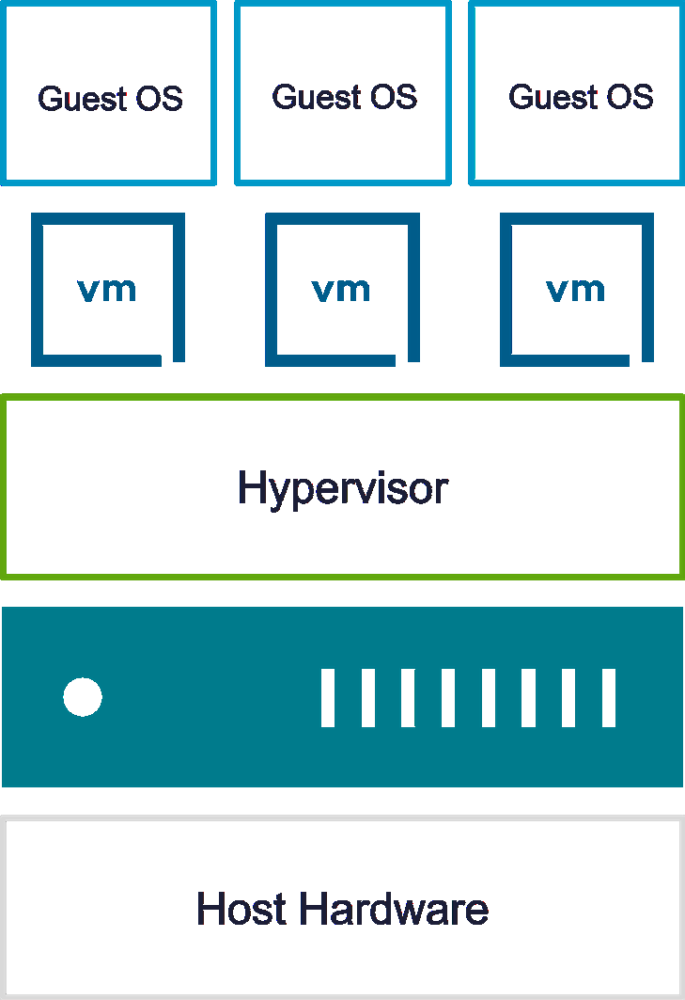
1.2 ميزات الأَمان | Security Features
ESX لَيس فَقَط Hypervisor سَريع، بَل مَنصّة آمِنة بِالتَّصميم. كُلّ
Host يُولَد مُحَصَّناً: Firewall مُغلَق افتِراضيّاً، Memory Hardening
يَحمي الـ memory مِن الهَجَمات، Kernel Module Integrity يَمنَع تَحميل وَحَدات
غَير مُوَقَّعة، وَ TPM 2.0 + UEFI Secure Boot يَضمَنان سِلسِلة إِقلاع
مَوثوقة. حَتّى Core Dumps تُكتَب مُشَفَّرة.
🧠 Security Features في ESX
- Host-based Firewall مُفَعَّل افتِراضيّاً.
- Memory Hardening — حِماية الـ memory مِن هَجَمات الإِزاحة.
- Kernel Module Integrity — التَّحَقُّق مِن سَلامة الوَحَدات قَبل التَّحميل.
- TPM 2.0 — Trusted Platform Module لِتَخزين المَفاتيح.
- UEFI Secure Boot — تَحَقُّق الإِقلاع المُوَقَّع.
- Encrypted Core Dumps — حِفظ تَصاوير الأَعطال مُشَفَّرة.
1.3 مُتَطَلَّبات الـ hardware | Hardware Requirements
ESX 9.0 يَفرِض حَدّاً أَدنى مِن الـ hardware. الحَدّ الأَدنى الرَّسمي: 2 cores، 8 GB RAM، NIC
بِسُرعة 1 GbE، وَ Boot Disk بِسَعة 32 GB. لَكِن لِبيئة إِنتاج حَقيقيّة، الواقِع: ≥ 8 cores،
≥ 12 GB RAM، 2× 10 GbE، وَ ≥ 128 GB Boot. تَحَقَّق دائِماً مِن
VMware Compatibility Guide قَبل الشِّراء.
🧠 Minimum Hardware Requirements (ESX 9.0)
| Resource | Minimum | Production |
|---|---|---|
| CPU Cores | 2 cores | ≥ 8 cores |
| RAM | 8 GB | ≥ 12 GB |
| NIC | 1× Gigabit Ethernet | ≥ 2× 10 GbE |
| Boot Disk | 32 GB persistent | ≥ 128 GB |
| Boot Media | HDD · SSD · SAN LUN · SATADOM · Diskless | — |
راجِع VMware Compatibility Guide لِلتَّأكُّد مِن دَعم الـ processor وَالـ NICs.
1.4 Boot Bank — التَّقسيم وَ Rollback | Layout
ESX يَستَخدِم تَقسيماً ذَكيّاً: boot bank 0 هُوَ الإِصدار الحالي،
boot bank 1 هُوَ الإِصدار السّابِق. هَذا يُعطي قُدرة Rollback فَوريّة لَو
فَشِل التَّحديث. وَ ESX-OSData volume يَفصِل البَيانات الدّائِمة (configs، dumps) عَن
الـ Volatile (logs، traces). فَهم هَذا التَّقسيم ضَروري لِلـ Troubleshooting.
🧠 ESX Boot Bank Layout — التَّقسيم الدّاخِلي
boot bank 0→/bootbank(الإِصدار الحالي).boot bank 1→/altbootbank(الإِصدار السّابِق — لِـ Rollback).- ESX-OSData volume يَنقَسِم إِلى:
- Persistent:
/productLocker،/locker،/var/core،/usr/lib/vmware/isoimages،/usr/lib/vmware/floppies. - Non-persistent:
/var/run،/var/log،/var/vmware،/var/tmp،/scratch.
- Persistent:
الـ Persistent Data = نادِراً ما يُكتَب (configs، ISOs، dumps). الـ Non-persistent
Data = كَثير الكِتابة (logs، traces).
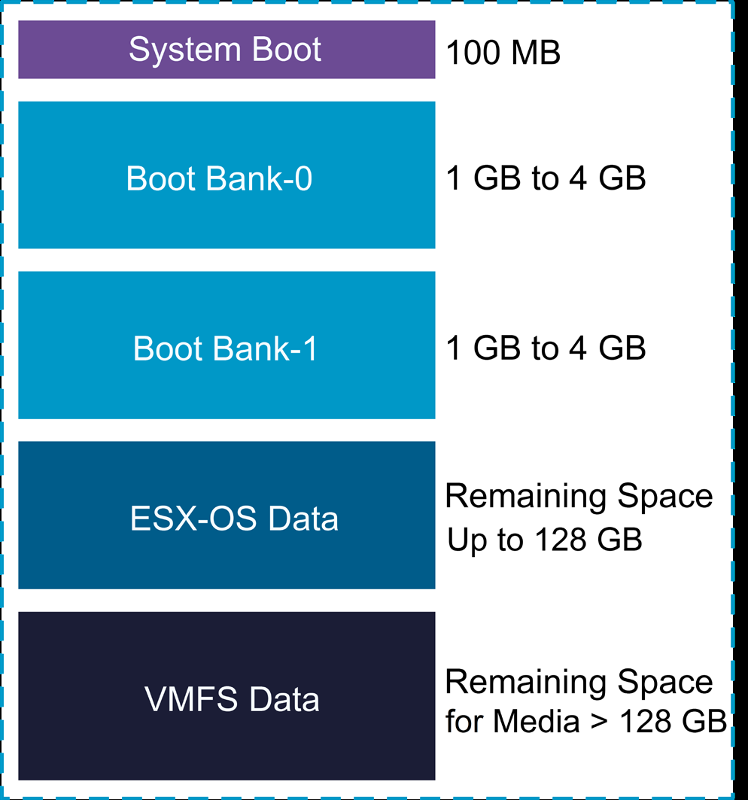
1.5 التَّثبيت التَّفاعُلي | Interactive Installation
لِأَوَّل عَدَد قَليل مِن ESX Hosts في Management Domain، يُنصَح بِالتَّثبيت
التَّفاعُلي عَبر USB أَو iDRAC/iLO. الخُطوات بَسيطة لَكِنّها مُتَسَلسِلة:
EULA → اختِيار DPU (لَو مَوجود — UEFI إِجباري) → القُرص → keyboard layout →
password root → F11. لِلتَّوسيع لاحِقاً، استَخدِم
VCF Installer أَو Auto Deploy.
🧠 Interactive Installation — الخُطوات
- اِبدَأ مِن صَفحة Welcome.
- وافِق على EULA.
- إِذا كانَ النِّظام يَدعَم
DPU→ اختَره (UEFI إِجباري). - اختَر الـ disk (Boot Disk).
- اختَر تَخطيط keyboard layout.
- أَدخِل password
root. - اضغَط
F11لِبَدء التَّثبيت. - اضغَط
Enterلِإِعادة الإِقلاع.
1.6 تَهيئة Management Network
بَعد التَّثبيت، الـ Host «أَصَمّ» — لا يَعرِف vCenter. تَحتاج تَهيئة
Management Network مِن DCUI: VLAN، IP، Subnet، Gateway، FQDN، DNS. هَذِه
المَعلومات يَجِب أَن تَكون مُسبَقاً في DNS الفِعلي (forward + reverse). أَيّ خَطَأ
هُنا يُفشِل لاحِقاً VCF Bring-up.
🧠 Configuring the Management Network (DCUI)
- Network Adapter — اختَر الـ NIC الفِعليّ.
- VLAN ID لِلـ Management Network.
- IPv4 / IPv6 — IP، Subnet Mask، Default Gateway.
- Hostname — اسم نِطاق مُؤَهَّل (FQDN).
- DNS Servers (لا تَستَخدِم Custom DNS Suffixes).
كَرِّر هَذِه التَّهيئة لِكُلّ ESX Host في Management Domain.
1.7 الشَّهادات | Self-Signed vs CA-Signed
أَوَّل شَهادة ESX تُولَد قَبل ضَبط FQDN، فَتَكون باسم
localhost.localdomain. عِند بَدء VCF Bring-up، يَفشَل التَّحَقُّق مِن
HTTPS لِأَنَّ FQDN لا يُطابِق Common Name. الحَلّ: إِعادة تَوليد
الشَّهادة عَبر generate-certificates ثُمَّ إِعادة تَشغيل hostd +
vpxa + rhttpproxy. لِبيئات الإِنتاج الصّارِمة، استَبدِلها بِـ
CA-Signed Certificate.
🧠 Self-Signed vs CA-Signed Certificates
- عِند تَثبيت
ESX، يُولَّد Self-Signed Cert قَبل ضَبطFQDN→ Common Name =localhost.localdomain. - بَعد ضَبط
Hostname، يَجِب إِعادة تَوليد الشَّهادة:- فَعِّل
SSHمِنVMware Host Client. - سَجِّل دُخول وَنَفِّذ:
/sbin/generate-certificates. - أَعِد تَشغيل:
/etc/init.d/hostd restart && /etc/init.d/vpxa restart && /etc/init.d/rhttpproxy restart. - عَطِّل
SSHمَرّة أُخرى.
- فَعِّل
- إِذا تَطَلَّبَت السِّياسة CA-Signed → اِنسَخ الشَّهادة وَالمِفتاح إِلى
/etc/vmware/sslوَأَعِد تَشغيلhostdوَvpxd.
1.8 مُزامَنة الوَقت | Time Sync (NTP vs PTP)
الوَقت المُتَّسِق بَين كُلّ مُكَوِّنات VCF أَمر حَرِج. بِدونه: شَهادات تَفشَل،
Logs غَير قابِلة لِلتَّتَبُّع، HA يَتَصَرَّف بِشَكل غَير مُتَوَقَّع. الخِيارات:
NTP (دِقّة Millisecond، الأَكثَر شُيوعاً) أَو PTP (دِقّة Microsecond،
لِتَطبيقات Telco/Trading). القاعِدة الذَّهَبيّة: لا تَعمَل النِّظامَتان مَعاً، وَأَفضَل مُمارَسة
3 NTP Servers عَلى الأَقَلّ.
🧠 Time Synchronization — NTP vs PTP
| Method | Accuracy | Port | Use When |
|---|---|---|---|
| Manual | — | — | Lab / Test فَقَط |
| NTP | Millisecond (ms) | UDP 123 | الإِنتاج المُعتاد |
| PTP | Microsecond (μs) | UDP 319, 320 | تَطبيقات حَسّاسة (Telco، Trading) |
قاعِدة: NTP وَ PTP لا يَعمَلان مَعاً — أَوقِف الواحِد قَبل تَفعيل الآخَر.
أَفضَل مُمارَسة: ≥ 3 NTP servers لِلمُوَثوقيّة.
1.9 التَّحَكُّم بِالوُصول البَعيد | Remote Access Control
ESX Firewall مُفَعَّل افتِراضيّاً وَيَحجُب كُلّ شَيء غَير مَسموح. Lockdown
Mode يَرفَع الحِماية لِأَقصى دَرَجة: لا تَسجيل دُخول مُباشِر — كُلّ شَيء يَمُرّ عَبر
vCenter أَو DCUI. هَذا مَطلَب إِلزامي في كَثير مِن إِطارات Compliance
(PCI-DSS، HIPAA).
🧠 Remote Access Control — حِماية ESX
- ESX Firewall مُفَعَّل افتِراضيّاً وَيَحجُب أَيّ traffic غَير مَسموح.
- Lockdown Mode يَمنَع تَسجيل الدُّخول المُباشِر — الوُصول فَقَط عَبر
DCUIأَوvCenter. - الخَدَمات (NTP Client، SSH Client) تُدار بِواسِطة مُستَخدِمين بِصَلاحيّات Admin.
- كُلّ خِدمة تَستَطيع تَحديد IP/subnet مَسموح لَها بِالاتِّصال.
1.10 Memory Tiering — جَديد VCF 9.0 | New in 9.0
إِحدى أَبرَز ميزات VCF 9.0: استِخدام NVMe PCIe Devices كَطَبَقة ثانِية مِن
الـ memory. النِّظام يُوَزِّع تِلقائيّاً: الـ Hot Pages على DRAM السَّريعة، وَالـ Cold
Pages على NVMe الأَرخَص. النَّتيجة: تَشغيل VMs أَكثَر بِنَفس hardware. الـ
Guest OS لا يَعرِف وَلا يَكتَرِث — كُلّ شَيء شَفّاف.
1.X · Deep Dive Concept Cards — مَا يَجِب أَن يَعرِفه مُهَندِس ESX
هَذِه البِطاقات تُلَخِّص أَهَمّ المَفاهيم في ESX بِعَمَق المُمارِس — كَيف يَفكُر مُهَندِس ESX حِين يُصَمِّم، وَيُحَدِّث، وَيُصلِح.
ESX لَيس Linux، وَلا Unix. هُوَ OS مُتَخَصِّص طُوِّر مِن الصِّفر لِيَكون Hypervisor. يَحتَوي على VMkernel (النَّواة) وَ UserWorlds (العَمَليّات).
- VMkernel: النَّواة — يُدير CPU، Memory، Storage، Network لِلـ VMs.
- VMM (Virtual Machine Monitor): Process لِكُلِّ VM — يُتَرجِم instructions مِن GuestOS إلى Hardware.
- hostd: agent يُتيح اِتِّصال vCenter وَ esxcli.
- vpxa: vCenter agent — يُنَفِّذ الأَوامِر مِن vCenter.
- DCUI: Direct Console User Interface — الشّاشة الصَّفراء الَّتي تَراها عَبر iDRAC.
- VM تَطلُب CPU instruction.
- VMM يَلتَقِطها (binary translation أَو direct execution مَع VT-x).
- VMkernel يُجَدوِل CPU time لِلـ VMM.
- Hardware يُنَفِّذ.
- النَّتيجة تَعود لِـ VM.
كُلُّ هَذا في نانوثوانٍ. الـ Overhead أَقَلّ مِن 5% في VCF 9.
- الاعتِقاد أَنَّ ESX = Linux: أَوامِر
top،psتَعمَل لَكِنَّها لِـ UserWorlds فَقَط. لِلـ VMs، اِستَخدِمesxtop. - تَعديل
/etc/يَدَوياً: ESX يُعيد كِتابَة كَثير مِن الملَفّات عِند Reboot. اِستَخدِمesxcliدائِماً. - تَثبيت Tools خارِجيّة: ESX لَيس مَكاناً لِتَثبيت Monitoring Agents. اِستَخدِم Aria Operations.
عِندَما تُحَدِّث ESX، الإِصدار القَديم لا يُحذَف — يَبقى في altbootbank. هَذا يُتيح Rollback إذا فَشَل التَّحديث. لَكِن لِمَعرِفَة أَين ذَهَب كُلُّ بايت، يَجِب فَهم Boot Layout.
| التَّقسيم | الحَجم | الغَرَض |
|---|---|---|
/bootbank | ~1 GB | الإِصدار الحالي مِن ESX |
/altbootbank | ~1 GB | الإِصدار السّابِق (لِـ Rollback) |
ESX-OSData | ~120 GB | System files، logs، scratch |
VMFS | الباقي | VMs storage (إذا local) |
إذا Update فَشَل وَ ESX لا يُقلِع:
- DCUI → اِختَر "Press Shift+R" عِند bootscreen لِـ Recovery Options.
- اِختَر altbootbank.
- ESX يُقلِع بِالإِصدار السّابِق.
- تَأَكَّد قَبل تَكرار التَّحديث.
مَنع الوُصول المُباشِر إلى ESX عَبر SSH، DCUI، vSphere Client الـ Host-Direct. كُلُّ الإِدارة عَبر vCenter فَقَط — لِتَوحيد Audit Trail.
| Mode | الوَصف | مَتى تَستَخدِم |
|---|---|---|
| Disabled | كُلُّ شَيء مُتاح | Dev/Lab فَقَط |
| Normal | root مَحظور عَبر SSH، DCUI مُتاح لِـ root | الأَكثَر شُيوعاً — Production مُعتَدِل |
| Strict | كُلُّ شَيء مَحظور — DCUI أَيضاً | Compliance عالٍ، مَخاطِر الفُقدان عالِية |
Strict Mode يُمكِن أَن يَحبِسك خارِج Host إذا فَشَل vCenter. لِذَلِك:
- تَأَكَّد Exception Users مُكَوَّن لِـ Emergency Access.
- اِحتَفِظ بِـ root password في Vault — لَكِن لا تَعتَمِد عَلَيه.
- اِختَبِر Strict Mode في Test قَبل Production.
📝 Knowledge Check
Q1. What is ESX?
Correct: B
ESX is a bare-metal (Type-1) hypervisor — runs directly on the server hardware.
Q2. Minimum RAM required for an ESX 9.0 host (production)?
Correct: C
8 GB minimum, 12 GB for production environments.
Q3. Which time-sync method provides microsecond accuracy?
Correct: C
PTP = Precision Time Protocol — microsecond accuracy. NTP = millisecond.
Q4. Which port does NTP use?
Correct: B
NTP uses UDP port 123. PTP uses UDP 319/320.
Q5. Why must the self-signed certificate be regenerated after setting the FQDN?
Correct: B
Initial cert is generated before hostname → CN = localhost.localdomain. HTTPS validation against FQDN will fail.
Q6. What does Lockdown Mode do?
Correct: B
Lockdown Mode restricts direct host access — administration must go through vCenter.
Q7. Which is NOT one of the four Enabler-equivalent ESX security features?
Correct: D
ESX firewall is closed by default, not open.
Q8. Memory Tiering in ESX 9.0 uses what device type as a second memory tier?
Correct: B
Memory Tiering uses direct-attached NVMe PCIe devices to extend host memory.
vCenter Architecture, SSO & Inventory
المَنصّة الَّتي تُحَوِّل ESX Hosts إِلى Cloud Foundation.
2.1 لِماذا vCenter؟ | Why Central Management?
تَخَيَّل بيئة فيها 50 ESX Host وَ 1500 VM. بِدون vCenter:
كُلّ Host جَزيرة، لا يُمكِنك نَقل VM بَين Hosts، لا يُمكِنك تَطبيق
سياسة مُوَحَّدة، لا يُمكِنك Monitoring الكُلّ مِن مَكان واحِد. vCenter هُوَ ما يُحَوِّل
Hardware مُتَفَرِّق إِلى Cloud Foundation.
2.2 بِنية vCenter Server | Architecture
vCenter الآن يَأتي حَصرِيّاً كَـ Virtual Appliance (VCSA). هَذا يَعني:
Photon OS + PostgreSQL + كُلّ خَدَمات vCenter، مُعَبَّأة كَـ
VM واحِدة. لا يُوجَد إِصدار Windows مُنذ سَنَوات. الفائِدة: نَشر بِنَقرَة، تَحديث
مُوَحَّد، وَدَعم تَقَني أَبسَط.
🧠 vCenter Server Architecture
- Operating System:
VMware Photon OS(Linux مُحَسَّن). - Database: مَدمَج
PostgreSQL(vPostgres). - Form Factor: Virtual Appliance (
VCSA) — يُنشَر كَـVMعلىESX. - Services:
vpxd(المُخّ)،vAPI Endpoint،Lookup Service،Identity Management،License Service،Tagging،ESX Agent Manager،Update Manager. - كُلّ الخَدَمات مُعَبَّأة في appliance واحِد — نَشر مُبَسَّط، تَحديث مُوَحَّد.
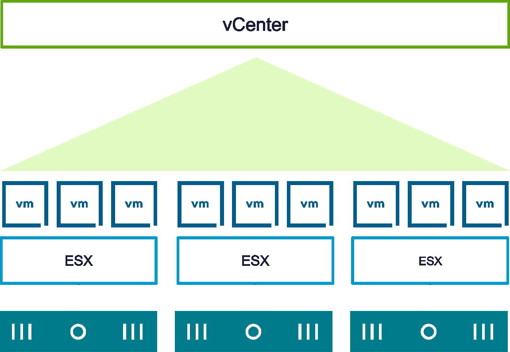
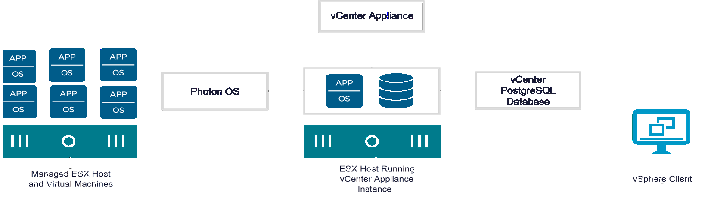
2.3 الاتِّصال بَين ESX و vCenter | Communication
عِند تَسجيل ESX Host في vCenter، يَتِمّ تَنزيل وَكيل vpxa
عَلى الـ Host. مِن لَحظَتها: كُلّ أَمر يَأتي مِن vSphere Client يَمُرّ في
سِلسِلة vpxd → vpxa → hostd → Hardware. أَمّا الـ VMware Host Client أَو
SSH فَيَتَحَدَّثان مَع hostd مُباشَرة، مُتَجاوِزَين vCenter —
هَذا مُفيد لِلتَّشخيص عِند فَشل vCenter.
🧠 ESX ↔ vCenter Communication
vpxd— المُخّ المَركَزي عَلىvCenter.vpxa—vCenter Agentعَلى كُلّESX Host.hostd—Host Daemonعَلى كُلّESX Host(يُديرالـ hardware فِعليّاً).- التَّسَلسُل:
vSphere Client⇄vpxd⇄vpxa⇄hostd⇄ Hardware. - الـ
VMware Host ClientأَوSSHيَتَجاوَزانvCenterوَيَتَكَلَّمان مَعhostdمُباشَرة.
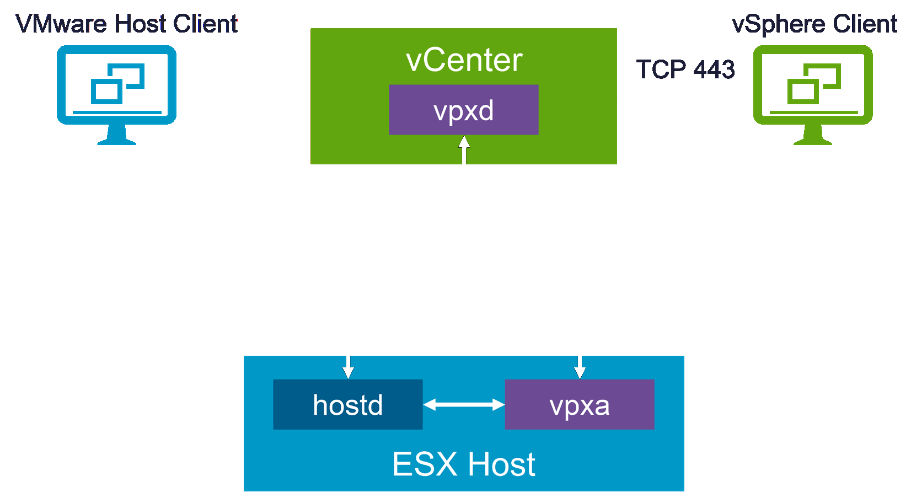
2.4 vCenter Single Sign-On | SSO
SSO هُوَ القَلب الأَمني لِكُلّ vSphere. يُعطي تَجرِبة دُخول واحِدة لِكُلّ
الخَدَمات. التَّقنيّة المُستَخدَمة: SAML 2.0 — Token مُوَقَّع رَقمِيّاً يُمَرَّر بَين الخَدَمات
بَدَلاً مِن إِعادة إِرسال كَلِمة المُرور. تَدعَم vsphere.local الافتِراضيّة لَكِن
يَجِب تَغييرها عِند النَّشر لِأَسباب أَمنيّة.
🧠 vCenter Single Sign-On (SSO) — البِنية
SSO= آلِيّة المُصادَقة المَركَزيّة لِكُلّ خَدَماتvSphere.- المُستَخدِم يُسَجِّل دُخولاً مَرّة واحِدة → يَتَلَقّى SAML Token → يَستَخدِمه مَع كُلّ خَدمة.
- النِّطاق الافتِراضي:
vsphere.local(يَجِب تَغييره عِند النَّشر). - Identity Sources: Active Directory، LDAP/LDAPS، OpenLDAP، Local OS، vsphere.local.
- Federated Identity Providers الجَدد:
Microsoft ADFSMicrosoft Entra ID(سابِقاً Azure AD)OktaPingFederate
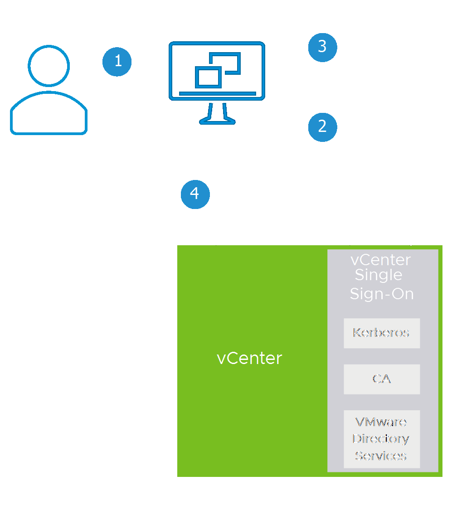
2.5 VMware Identity Broker — جَديد VCF
في VCF 9.0، تَمَّ تَوحيد المُصادَقة عَبر طَبَقة جَديدة اسمها VMware Identity
Broker (VIDB). هِيَ المُتَرجِم بَين vCenter (وَكُلّ مُكَوِّنات VCF) وَالـ Identity
Providers الخارِجيّة. يَدعَم البُروتوكولات الحَديثة: SAML 2.0 + OIDC.
هَذا يَفتَح الباب لِـ Microsoft Entra ID، Okta، PingFederate،
وَ ADFS كَ-IdPs مُوَحَّدة لِكامِل بيئة VCF.
🧠 VMware Identity Broker (VIDB)
VIDB= الوَسيط الجَديد بَينvCenterوَالـ Identity Providers الخارِجيّة.- يَدعَم بُروتوكولات حَديثة: SAML 2.0 + OpenID Connect (OIDC).
- السَّبَب: تَوحيد المُصادَقة عَبر كُلّ مَنصّات
VCF(Operations, Automation, NSX, Identity). - يَستَخدِم Token-based authentication بَدَلاً مِن إِرسال كَلِمات المُرور.
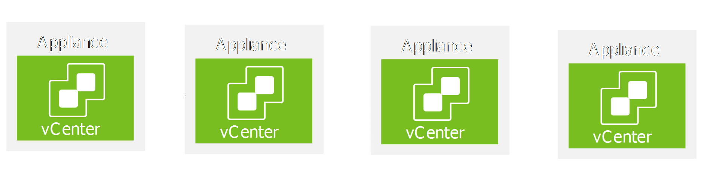
2.6 Enhanced Linked Mode — مَهجور | Deprecated
ELM كانَ الحَلّ التَّقليدي لِإِدارة عِدّة vCenter instances كَوَحدة
واحِدة (حَتّى 15). في VCF 9.0، الفِكرة تَطَوَّرت: بَدَلاً مِن إِدارة vCenters
كَ-Peers، يُدار كُلّ شَيء مِن VCF Operations Console عَبر vCenter Linked
Groups. النَّتيجة: نَفس القُدرة لَكِن بِطَريقة أَنظَف وَأَكثَر تَكامُلاً مَع باقي VCF.
2.7 المَخزون | Inventory Views
عِند فَتح vSphere Client، تَجِد أَربَع طُرُق لِعَرض نَفس البَيانات. كُلّ مُشاهَدة
تُرَكِّز على بُعد مُختَلِف: الـ hardware، التَّنظيم المَنطِقي لِلـ VMs، الـ storage، أَو الـ network. اِختَر
المُشاهَدة المُناسِبة حَسَب المَهَمّة. مَثَلاً: لِنَقل VM إِلى Cluster آخَر،
استَخدِم Hosts and Clusters. لِتَنظيم VMs حَسَب الفَريق المالِك،
استَخدِم VMs and Templates.
🧠 vCenter Inventory — أَربَع مُشاهَدات
- Hosts and Clusters — التَّنظيم بِالـ hardware المادّي وَالـ Clusters.
- VMs and Templates — التَّنظيم المَنطِقي لِلـ VMs وَالقَوالِب.
- Storage — Datastores وَ Storage Pods.
- Networks — Standard / Distributed Switches، Port Groups، Distributed Port Groups.
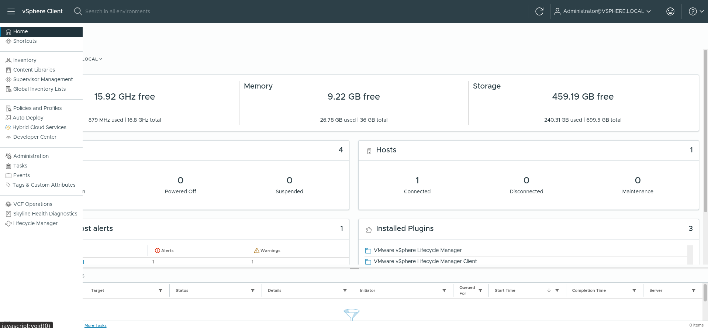
🧠 Inventory Objects — الكيانات
- Datacenter — الحاوية الرَّئيسيّة (يَجِب أَن تَكون أَوَّل ما تُنشِئ).
- Folder — تَنظيم مَنطِقي (يَدعَم Permissions Inheritance).
- Cluster — مَجموعة
ESX Hostsتَتَشارَك Resources. - Host —
ESX Serverفِعلي. - VM / Template / vApp — الـ Workloads.
- Resource Pool — تَجزِئة CPU/Memory هَرَميّاً.
- Datastore — مَخزون لِلـ Files.
- Network — Port Group أَو Distributed Port Group.
في VCF 9.0، إِدارة Datacenters، Folders، وَ Custom Tags تُمَركَز
في VCF Operations بَدَلاً مِن كُلّ vCenter على حِدة.
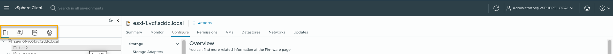
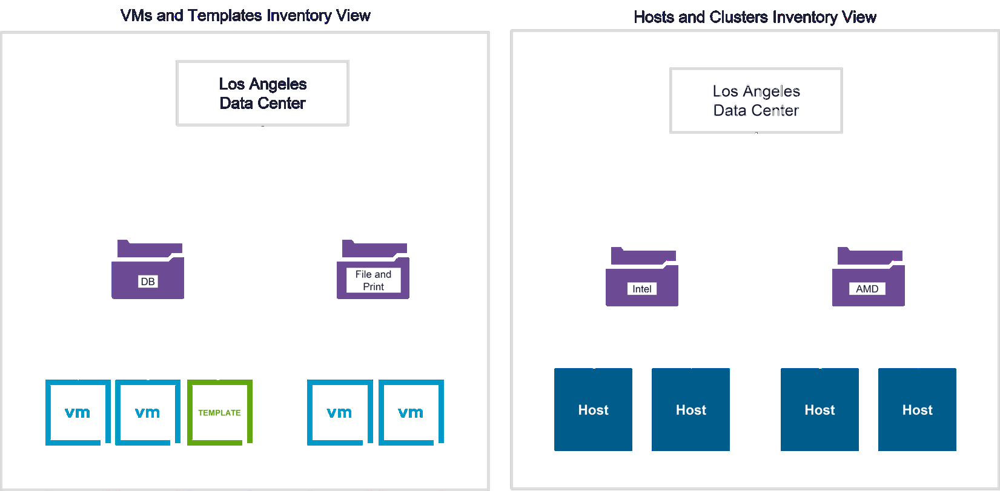
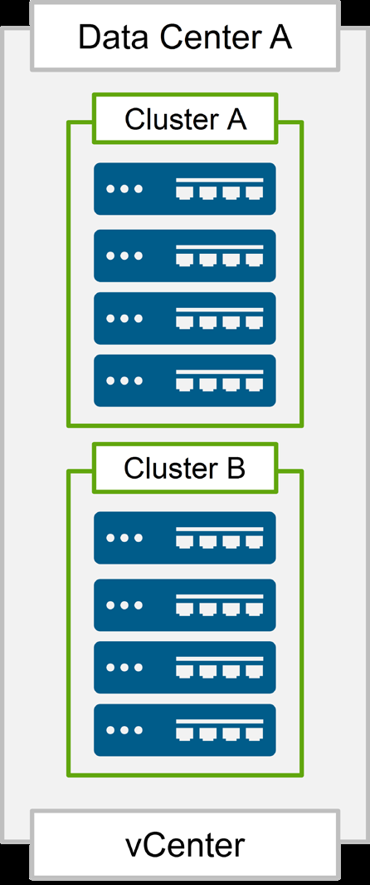
2.X · Deep Dive Concept Cards — مَا يَجِب أَن يَعرِفه مُهَندِس vCenter
vCenter لَيس مُجَرَّد لَوحَة إِدارة — هُوَ Control Plane لِكامِل البَيئة. هَذِه البِطاقات تَكشِف كَيف يَعمَل فِعلاً.
إِدارة هَويّة مُوَحَّدة لِكُلِّ خَدَمات VMware (vCenter، NSX، Aria…). تَسجيل دُخول مَرَّة واحِدة، صَلاحيّات في كُلِّ مَكان.
- SSO Domain: الافتِراضي
vsphere.local(تَستَطيع تَغييرُه عِند Deploy). - STS (Security Token Service): يُصدِر SAML tokens.
- VMware Directory Service (VMDir): LDAP داخِلي لِـ users المَحَلّيّين.
- Identity Sources: مَصادِر مُمكِنة — vsphere.local (default)، AD، LDAP، OpenLDAP، AD over LDAPS، Identity Federation (OIDC).
- User يُدخِل username/password في vSphere Client.
- SSO يَتَحَقَّق مَع Identity Source المُناسِب (AD مَثَلاً).
- إذا صَحيح، STS يُصدِر SAML Token.
- Token يُستَخدَم لِكُلِّ تَفاعُل مَع vCenter وَ NSX وَ Aria.
- Token صالِح لِمُدَّة مُحَدَّدة (افتِراضي 8 ساعات).
- الاِعتِماد على administrator@vsphere.local: لا تَستَخدِمه لِلعَمَل اليَومي. اِربِط AD، اِعطِ مُستَخدِمين شَخصيّين صَلاحيّات.
- عَدَم تَكوين Time Sync: SSO حَسّاس لِلوَقت. Time skew > 5 دَقائق يَكسِر الـ Authentication.
- تَجاهُل Password Policy: vCenter Server Appliance لَدَيها password expiry. إذا اِنتَهَت كَلِمة سِرّ root، يُمكِن أَن تُحبَس خارِج VAMI.
vCenter يَستَخدِم نَموذَج (Object، Role، Principal):
- Object: Datacenter، Cluster، Host، VM، Folder، Network…
- Role: مَجموعة مِن Privileges (مَثَلاً "VM Power User" يَسمَح بِـ Power On/Off).
- Principal: user أَو group مِن Identity Source.
- اِنتَقِل إلى Object (مَثَلاً Folder VMs/Production).
- Permissions tab → Add Permission.
- اِختَر Principal (مَثَلاً
DOMAIN\App-Owners-Group). - اِختَر Role (مَثَلاً "VM Operator").
- اِختَر "Propagate to children" إذا تُريد التَّوريث.
السِّياسة: «فَريق DevOps يَستَطيع إِنشاء VMs في Folder Dev، لَكِن لا يَستَطيع لَمس Production.»
- Create Role: "DevOps Operator" مَع privileges (VM Create، Power، Snapshot).
- Folder /Dev → Add Permission:
DOMAIN\DevOps-Teamمَع Role "DevOps Operator"، Propagate ✓. - Folder /Production → لا permission لِـ DevOps-Team.
- النَّتيجة: مُستَخدِم DevOps لا يَرى /Production أَصلاً.
- Admin-by-Default: «أَعطِيه Administrator، أَسهَل». لا. اِستَخدِم Least Privilege.
- Permission على Datacenter بَدَلاً مِن Folder: يُعطي وُصول لِكُلِّ شَيء تَحت Datacenter. اِفصِل بِـ Folders.
- عَدَم Audit: راجِع Permissions كُلَّ رُبع سَنَة. مُغادِرون يَجِب إِزالتهم.
VCSA هُوَ VM مَبني على Photon OS، يَحتَوي على كُلِّ خَدَمات vCenter. مُنذ vSphere 7، Windows vCenter اِنتَهى — VCSA فَقَط.
| Size | vCPU | RAM | Storage | Hosts | VMs |
|---|---|---|---|---|---|
| Tiny | 2 | 14 GB | 579 GB | 10 | 100 |
| Small | 4 | 21 GB | 694 GB | 100 | 1,000 |
| Medium | 8 | 30 GB | 908 GB | 400 | 4,000 |
| Large | 16 | 39 GB | 1,358 GB | 1,000 | 10,000 |
| X-Large | 24 | 58 GB | 2,283 GB | 2,500 | 45,000 |
قاعِدة: اِختَر أَكبَر مِمّا تَحتاج اليَوم — تَوسيع VCSA لاحِقاً مُمكِن لَكِنَّه يَتَطَلَّب downtime.
- File-Based Backup: Built-in في VAMI. يَأخُذ Configuration + Inventory + Stats. Schedule يَومي عَلى SFTP.
- Image-Based Backup: Veeam أَو CommVault يَأخُذ VM snapshot كامِل.
- Best Practice: كِلاهما. File-Based لِـ Quick Restore، Image-Based لِـ Disaster.
- اِختَبِر Restore سَنَوياً عَلى الأَقَلّ.
- VCSA على Storage مَع VMs المُهِمّة: إذا Storage فَشَل، تَفقِد إِدارة VMs مَعاً. اِفصِل VCSA على Datastore مُخَصَّص.
- VCSA Snapshot نَشِط طَويلاً: Snapshots كَبيرة على VCSA تُؤَدّي إلى Database performance issues.
- لا Documentation لِـ root password: Password lost = VCSA rebuild. اِحفَظه في Vault.
📝 Knowledge Check
Q1. Which OS does the vCenter Server Appliance run on?
Correct: C
VCSA runs on VMware Photon OS, a hardened Linux distribution.
Q2. Which database is embedded inside the vCenter appliance?
Correct: C
vCenter ships with embedded vPostgres (PostgreSQL) — no external DB needed.
Q3. If a host is disconnected from vCenter, what happens to running VMs?
Correct: B
VMs continue running because hostd manages them locally; only vCenter management is lost.
Q4. Which agent on each ESX host communicates with vpxd?
Correct: B
vpxa is the vCenter Agent on each ESX host that mediates communication with vpxd.
Q5. What is the default SSO domain name?
Correct: B
The default SSO domain is vsphere.local — should be customized at deployment.
Q6. Which Identity Provider was previously called Azure AD?
Correct: C
Azure AD was rebranded to Microsoft Entra ID.
Q7. Which protocols does VMware Identity Broker (VIDB) support?
Correct: B
VIDB supports modern federation protocols: SAML 2.0 and OIDC.
Q8. Enhanced Linked Mode in VCF 9.0 is:
Correct: C
ELM is deprecated in 9.0 but remains supported for migration; replacement is vCenter Linked Groups.
Q9. How many vCenter instances did Enhanced Linked Mode support?
Correct: C
ELM supported up to 15 vCenter instances per linked group.
Q10. Which inventory view organizes objects by physical hardware grouping?
Correct: B
Hosts and Clusters view shows the physical organization (datacenters → clusters → hosts).
Standard & Distributed Switches · VMkernel
الشَّبَكة الَّتي تَربِط VMs بِالعالَم.
3.1 لِماذا Virtual Networking؟ | Why Virtual Networking?
الـ VM تَحتاج NIC. لَكِن لا يُمكِنك تَوصيل كُلّ VM بِـ NIC فِعلي
مُنفَصِل — هَذا غَير عَمَلي. الحَلّ: Virtual Switch داخِل ESX. هَذا الـ Switch
يَعمَل في VMkernel وَيُقَدِّم خَدَمات L2 (Forwarding، VLAN، Filtering) كَأَنَّه Switch
فِعلي. الـ VMs تَتَّصِل بِه بِشَكل Virtual، وَهُوَ يَتَّصِل بِالخارِج عَبر
Uplinks (vmnics فِعليّة).
3.2 Standard vs Distributed Switch
هُناك نَوعان مِن Virtual Switches: Standard (vSS) الَّذي يَعمَل عَلى Host
واحِد فَقَط، وَ Distributed (vDS) الَّذي يَمتَدّ عَبر كُلّ Hosts الـ Datacenter (حَتّى
2000 Host). الـ vSS مَجاني وَبَسيط، لَكِنَّه يُجبِرك على تَكرار التَّهيئة عَلى كُلّ Host.
الـ vDS مَركَزي، يُعطي ميزات مُتَقَدِّمة، وَهُوَ إِلزامي لِـ NSX وَ
VCF.
🧠 Standard vs Distributed — المُقارَنة
| الميزة | Feature | Standard (vSS) | Distributed (vDS) |
|---|---|---|
| النِّطاق | Scope | Per-Host | Datacenter-wide (حَتّى 2000 hosts) |
| L2 Switching | ✓ | ✓ |
| VLAN / 802.1Q | ✓ | ✓ |
| IPv4 / IPv6 | ✓ | ✓ |
| NIC Teaming | ✓ | ✓ |
| Outbound Shaping | ✓ | ✓ |
| Inbound Shaping | ✗ | ✓ |
| LACP | ✗ | ✓ |
| vMotion of network state | ✗ | ✓ |
| Network I/O Control | ✗ | ✓ |
| NetFlow / Port Mirroring | ✗ | ✓ |
| NSX support | ✗ | ✓ (مَطلوب لِـ NSX) |
| Per-Port Policy | ✗ | ✓ |
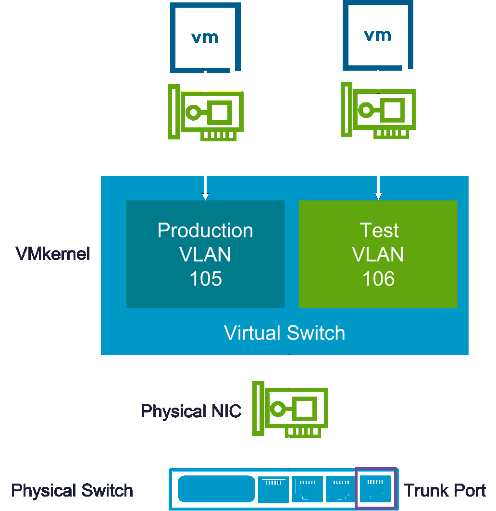
3.3 بِنية Distributed Switch | Architecture
الـ vDS مَبني على فِكرة الفَصل بَين Control Plane (في vCenter) وَ
I/O Plane (في VMkernel عَلى كُلّ Host). فائِدة هَذا الفَصل: حَتّى لَو سَقَط
vCenter، الشَّبَكة تَستَمِرّ في العَمَل لِأَنَّ كُلّ Host يَحمِل نُسخة مِن السِّياسة في
VMkernel. التَّعديلات فَقَط تَتَطَلَّب vCenter.
🧠 Distributed Switch Architecture
- Control Plane — يَعمَل في
vCenter، يَحتَفِظ بِالتَّهيئة المُوَحَّدة. - I/O Plane — يَعمَل في
VMkernelعَلى كُلّHost(vSwitch مَخفي). - عِند فَقد
vCenter: الـ I/O Plane يَستَمِرّ في تَمرير الحَزَم — لا تَنقَطِع الشَّبَكة. - التَّعديلات تَأتي مِن
vCenterفَقَط، ثُمَّ تُنشَر إِلى كُلّHost. - Uplinks = أَسماء مَنطِقيّة (Uplink1, Uplink2…) تُرَبَط بِـ
vmnicفِعليّة عَلى كُلّHost.
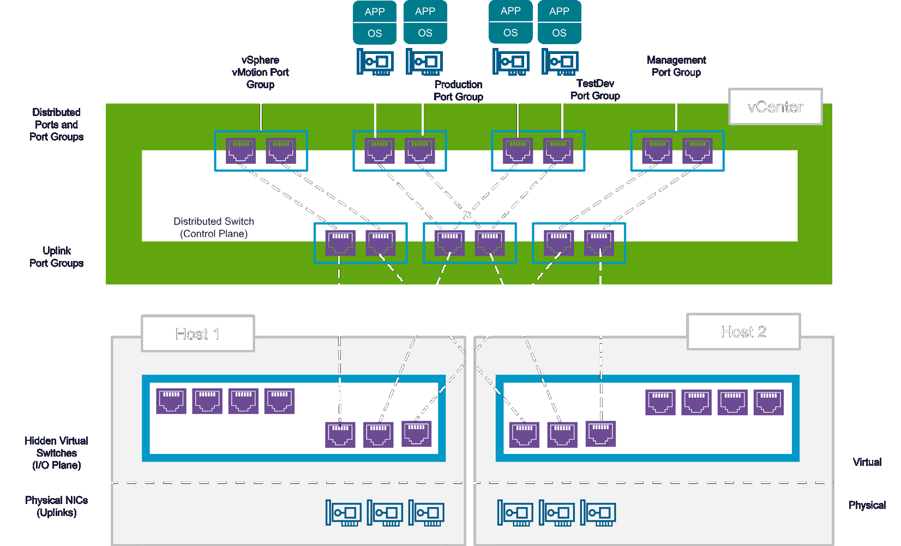
3.4 أَنواع الاتِّصال | Connection Types
كُلّ Switch (سَواء vSS أَو vDS) يُقَدِّم ثَلاثة أَنواع مِن المَنافِذ:
- VM Port Groups — لِلـ
VMsذاتها. - VMkernel Ports — لِخَدَمات
ESXالدّاخِليّة. - Uplinks — لِرَبط الـ Switch بِـ
vmnicفِعليّة على Host.
🧠 Connection Types — أَنواع الاتِّصال
- Virtual Machine Port Groups — لِاتِّصال
VMsبِالشَّبَكة. - VMkernel Ports — لِخَدَمات
ESXنَفسه (Management, vMotion, vSAN…). - Uplink Ports / Adapters — لِرَبط الـ Switch بِـ
vmnicفِعليّة.
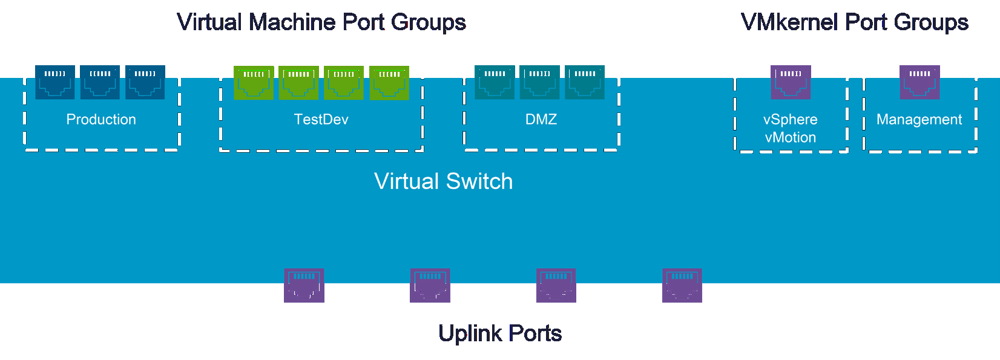
3.5 خَدَمات VMkernel | VMkernel Services
الـ VMkernel Port لا يَحمِل حَركة VM — يَحمِل حَركة ESX
نَفسه. كُلّ خِدمة تَحتاج VMkernel Port مُخَصَّص (أَو مُشتَرَك إِذا كانَ التَّخطيط
يَسمَح). الفَصل المَنطِقي بَين الخَدَمات أَفضَل مُمارَسة: Management على VLAN،
vMotion على VLAN آخَر، vSAN على VLAN ثالِث.
🧠 VMkernel Services — الخَدَمات
| Service | الوَصف |
|---|---|
| Management | اتِّصال vCenter مَع ESX (vpxa). |
| vMotion | نَقل الـ VMs بَين Hosts. |
| Provisioning | عَمَليّات Cold Migration وَ Cloning. |
| Fault Tolerance Logging | مُزامَنة Primary & Secondary VM في FT. |
| vSphere Replication (+ NFC) | نَسخ VMs لِلـ DR. |
| vSAN | حَركة بَيانات vSAN بَين Hosts. |
| vSAN Witness | اتِّصال مَع Witness Host في Stretched Cluster. |
| vSAN Storage Cluster Client | وُصول vSAN Express Storage Architecture. |
| Backup NFC | حَركة بَيانات Backup. |
| NVMe over TCP / NVMe over RDMA | وُصول storage NVMe-oF. |
3.6 VLAN Tagging — VST
كَيف يَنفَصِل VM A عَلى VLAN 10 عَن VM B عَلى VLAN 20 وَهُما عَلى نَفس
الـ vmnic؟ الجَواب: vSwitch يَضَع Tag (802.1Q) على كُلّ إِطار خارِج، وَيُزيله
عِند الدُّخول. هَذا اسمه Virtual Switch Tagging (VST). شَرطه: المَنفَذ الفِعلي على Switch
خارِجي يَجِب أَن يَكون Trunk Port يَسمَح لِكُلّ الـ VLANs المَطلوبة بِالمُرور.
🧠 VLAN Tagging — Virtual Switch Tagging (VST)
- الـ Physical Port عَلى الـ Switch الفِعلي يَجِب أَن يَكون
Trunk Port. - الـ Port Group في
vSphereيُحَدَّد لَهVLAN ID. - الـ
vSwitchيَقوم بِالـ Tagging/Untagging — الـVMولا تَدري شَيئاً. - هَذا الأُسلوب اسمه Virtual Switch Tagging (VST) — الأَكثَر شُيوعاً.
- أَنماط أُخرى أَقَلّ شُيوعاً: EST (External Switch Tagging) وَ VGT (Virtual Guest Tagging).
3.7 NIC Teaming & Failover | تَجميع NICs
لِلتَّوافُريّة وَالأَداء، تُجَمَّع عِدّة vmnics كَـ Uplinks لِنَفس
الـ vSwitch. السِّياسة تُحَدِّد كَيف تُوَزَّع الحَركة بَيْنَها. الأَكثَر استِخداماً:
Originating Virtual Port — كُلّ VM Port يُرتَبَط بِـ Uplink مُحَدَّد. لِأَداء
أَحسَن: Physical NIC Load (vDS فَقَط) — يُوازِن حَسَب الحُمل الفِعلي. لِـ LACP: استَخدِم
IP Hash مَع EtherChannel على Switch الفِعلي.
🧠 NIC Teaming — تَجميع البِطاقات
- Route based on Originating Virtual Port — الافتِراضي، بَسيط وَفَعّال.
- Route based on Source MAC Hash
- Route based on IP Hash — يَتَطَلَّب EtherChannel/LAG عَلى Switch الفِعلي.
- Route based on Physical NIC Load — Distributed Switch فَقَط، يُوازِن حَسَب التَّحميل الفِعلي.
- Use Explicit Failover Order — Active/Standby مُحَدَّد يَدَويّاً.
Failback: عِند رُجوع uplink فَعّال، هَل يَستَردّ الحَركة؟ (Yes/No).
3.X · Deep Dive Concept Cards — مَا يَجِب أَن يَعرِفه مُهَندِس الشَّبَكات في VCF
الشَّبَكة في VCF لَيست مُجَرَّد VLANs — هِيَ Layer مُعَقَّد مِن Switches، Port Groups، VMkernels، Teaming، وَ Traffic Shaping.
Switch واحِد يَمتَدّ عَبر كُلِّ Hosts في Cluster — Configuration مُتَّسِق، NIOC، Health Checks، Port Mirroring. الأَساس لِـ NSX.
- Uplinks: Physical NICs تُخَصَّص لِـ VDS.
- Distributed Port Groups: Logical VLAN definitions.
- Port Group Policies: Teaming، Security، Traffic Shaping، VLAN tagging.
- NIOC (Network I/O Control): ضَمان bandwidth لِـ traffic types.
| Policy | المَنطِق | مَتى |
|---|---|---|
| Route based on originating port ID | VM tied to specific uplink by port | الافتِراضي — جَيِّد لِأَغلَب الحالات |
| Route based on MAC hash | Hash مِن MAC source | نادِراً |
| Route based on IP hash | Hash مِن src+dst IP — يَتَطَلَّب EtherChannel | مَع Switches داعِمة LAG |
| Route based on physical NIC load | LBT — تَوازُن حَقيقي | VDS فَقَط، الأَفضَل في Production |
| Use explicit failover order | Active/Standby | iSCSI، Storage traffic |
- IP Hash بِدون LAG عَلى Switch: Packet drops وَ Asymmetric routing.
- MTU mismatch: VDS = 9000، Switch = 1500. vMotion يَفشَل.
- عَدَم تَفعيل Health Checks: VDS يَكشِف MTU/VLAN issues — اِستَخدِمها.
VMkernel ports هِيَ interfaces مُتَخَصِّصة في ESX لِخَدَمات داخِليّة. كُلُّ خِدمة تَحتاج VMkernel مُخَصَّص لِلأَداء وَالأَمان.
| Service | VLAN | MTU | الغَرَض |
|---|---|---|---|
| Management | VLAN-Mgmt | 1500 | vCenter↔ESX, SSH |
| vMotion | VLAN-vMotion | 9000 | نَقل VMs الحَيّ |
| vSAN | VLAN-vSAN | 9000 | Storage traffic |
| NSX TEP | VLAN-TEP | 9000 | NSX overlay (Geneve) |
| Provisioning | VLAN-Prov | 9000 | Cold migration، Cloning |
| Replication | VLAN-Rep | 9000 | vSphere Replication |
| FT Logging | VLAN-FT | 9000 | FT lockstep (مَع Latency < 1ms) |
- دَمج Management + vMotion عَلى نَفس VMkernel: vMotion saturated → Mgmt يَفقِد heartbeat → HA isolation.
- MTU mismatch: اِفحَص بِـ
vmkping -d -s 8972 -I vmk1 <target>.-d= Don't Fragment،-s 8972= 9000 - headers. - vMotion عَلى shared NIC مَع VM traffic: أَداء سَيِّء، Congestion.
عِندَما تَتَنافَس عِدّة أَنواع traffic عَلى نَفس NIC (10/25/100 GbE)، NIOC يَضمَن لِكُلِّ نَوع حِصَّة مَضمونة عَبر Shares، Reservations، Limits.
- Shares: مِثل DRS — High (100)، Normal (50)، Low (25). نِسبَة، لَيس قِيمة مُطلَقة.
- Reservation: Mbps مَضمونة (مَثَلاً 2 Gbps لِـ vMotion).
- Limit: Mbps أَقصى (نادِراً يُستَخدَم — يَحُدّ مِن Burst).
| Traffic Type | Shares | Reservation |
|---|---|---|
| Management | 50 | 1 Gbps |
| vMotion | 50 | 2 Gbps |
| vSAN | 100 | 10 Gbps |
| NSX | 100 | 5 Gbps |
| VM Traffic | 100 | 5 Gbps |
| FT Logging | 75 | 3 Gbps |
الإِجمالي = 26 Gbps reserved، عَلى NIC 25 GbE LACP (50 Gbps) — يَترُك 24 Gbps لِلـ bursts.
📝 Knowledge Check
Q1. What is a key advantage of a Distributed Switch over a Standard Switch?
Correct: B
vDS is configured in vCenter and pushed to all member hosts — central management.
Q2. Maximum number of hosts a single Distributed Switch can span?
Correct: C
vDS supports up to 2000 hosts.
Q3. Which feature is available ONLY on Distributed Switch?
Correct: C
LACP, NIOC, NetFlow, port mirroring, inbound shaping — all vDS-only.
Q4. Which port type connects VMs to the network?
Correct: C
VM port groups carry VM traffic. VMkernel = host services. Uplinks = physical NICs.
Q5. Which VMkernel service is used for live migration of VMs?
Correct: C
vMotion service handles live migration of running VMs between hosts.
Q6. What is the default MTU?
Correct: B
Default MTU is 1500. Jumbo Frames (9000) recommended for vMotion/vSAN.
Q7. In Virtual Switch Tagging (VST), the physical switch port must be:
Correct: B
VST requires trunk on the physical switch so multiple VLAN tags can flow to the vSwitch.
Q8. What happens to the network if vCenter is offline (with Distributed Switch)?
Correct: B
vDS I/O plane runs in VMkernel locally; vCenter only manages the control plane.
Provisioning · Templates · Snapshots · Backup
دَورة حَياة VM الكامِلة.
4.1 إِنشاء VMs | Creating Virtual Machines
هُناك أَربَع طُرُق لِإِنشاء VM: مِن الصِّفر بِالـ Wizard، Clone مِن VM قائِم، Deploy مِن
Template، أَو استيراد OVF/OVA. في الإِنتاج، الأَكثَر استِخداماً هُوَ Deploy from
Template لِأَنَّه يَضمَن تَطابُقاً تامّاً مَع البَنّاء المُعتَمَد (Hardened Image، Patches،
Tools).
🧠 Methods to Create VMs — أَربَع طُرُق
- New Virtual Machine Wizard — مِن الصِّفر، مَع تَهيئة كامِلة.
- Clone an Existing VM — نُسخة مِن VM قائِم.
- Deploy from a Template — مِن قالِب جاهِز (الأَكثَر استِخداماً في الإِنتاج).
- Deploy an OVF/OVA — استيراد VM مُصَدَّر مِن مَكان آخَر.
4.2 مَلَفّات VM | VM Files
الـ VM لَيست شَيئاً مُجَرَّداً — هِيَ مَجموعة مَلَفّات في Datastore.
فَهم هَذِه المَلَفّات ضَروري لِلـ Backup، الاستِنساخ، وَالتَّشخيص. أَهَمّها: .vmx
(التَّهيئة)، .vmdk + -flat.vmdk (القُرص)، .vswp (Swap)،
وَ .nvram (BIOS/UEFI).
🧠 VM Files — مَلَفّات الـ VM
| Extension | الوَصف |
|---|---|
.vmx | مَلَفّ التَّهيئة الرَّئيسي (CPU, RAM, NICs, Disks). |
.vmtx | نَفس .vmx لَكِن لِـ Template. |
.vmdk | وَصف الـ virtual disk (Descriptor). |
-flat.vmdk | البَيانات الفِعليّة (Raw data). |
.vswp | مَلَفّ Swap (يُنشَأ عِند تَشغيل VM). |
.nvram | BIOS/UEFI settings. |
.log | سِجِلّ الـ VM (vmware.log + الأَرشيف vmware-1.log ... vmware-6.log). |
.vmsd | قائِمة الـ Snapshots (Metadata). |
-Snapshot#.vmsn | حالة الـ VM عِند Snapshot. |
-Snapshot#.vmem | الـ memory عِند Snapshot (اختِياري). |
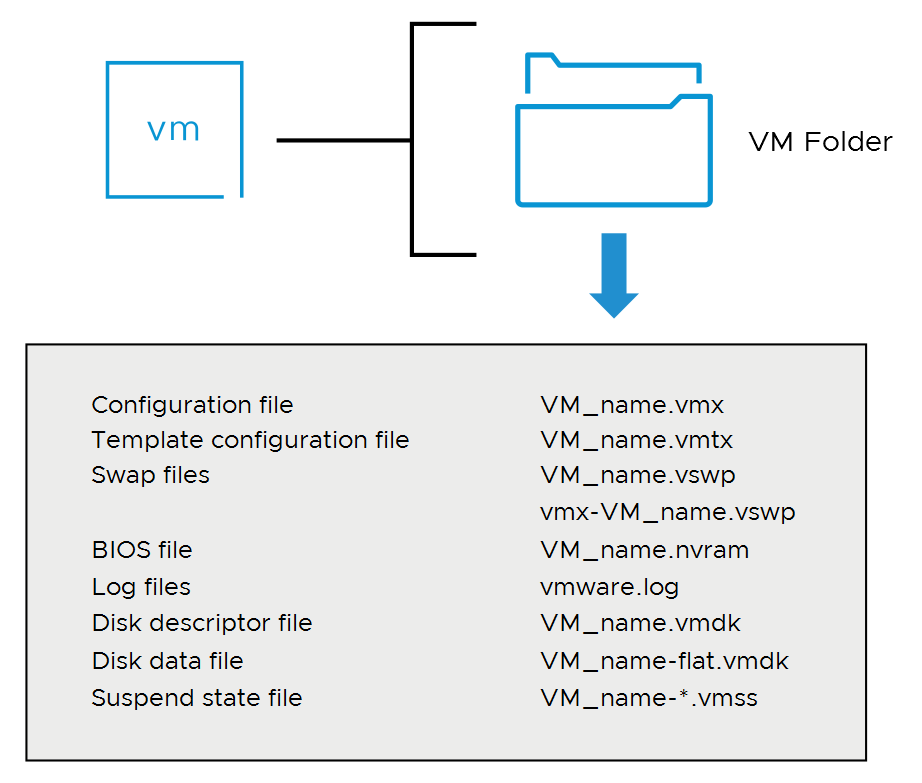
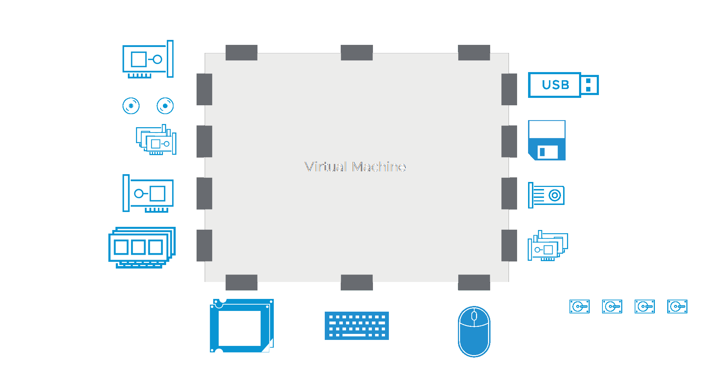
4.3 الـ Virtual Storage Adapters | Storage Adapters
الـ VM تَرى Virtual Disk Controller. اختِياره يُؤَثِّر على الأَداء وَالتَّوافُق.
لِأَكثَر الحالات: LSI Logic SAS أَو VMware Paravirtual (PVSCSI). لِأَعلى
أَداء (NVMe-aware OS): Virtual NVMe. تَجَنَّب BusLogic Parallel إِلّا
لِنُظُم قَديمة جِدّاً.
🧠 Virtual Storage Adapters
- BusLogic Parallel — قَديم، لِنُظُم تَشغيل قَديمة فَقَط.
- LSI Logic Parallel — افتِراضي لِكَثير مِن الـ Guests.
- LSI Logic SAS — لِـ Windows Server وَ Linux حَديث.
- VMware Paravirtual (PVSCSI) — أَداء عالٍ، 64 targets، يُوصى لِلـ Workloads المُكَثَّفة.
- AHCI SATA — لِأَجهِزة قَليلة (DVD-ROMs).
- Virtual NVMe — أَعلى أَداء، لِـ NVMe-aware OSes.
4.4 تَجهيز الـ disk | Disk Provisioning
عِند إِنشاء VMDK، تَختار طَريقة التَّجهيز: Thick Lazy (الافتِراضي — حَجز
المِساحة الآن، الـ Zeroing عِند الكِتابة)، Thick Eager (حَجز + Zeroing فَوريّاً، إِجباري لِـ
FT)، أَو Thin (تَدريجي حَسَب الكِتابة الفِعليّة، مُفيد لِـ Test/Dev).
🧠 Disk Provisioning — التَّجهيز
| النَّوع | كَيف يَعمَل | مَتى يُستَخدَم |
|---|---|---|
| Thick Provisioned Lazy Zeroed | المِساحة مَحجوزة فَوراً، الـ Zeroing عِند أَوَّل كِتابة. | الافتِراضي. |
| Thick Provisioned Eager Zeroed | المِساحة مَحجوزة + كُلّها Zeroed فَوراً. | Fault Tolerance، أَداء حَرِج. |
| Thin Provisioned | المِساحة تُستَهلَك فَقَط بِقَدر الكِتابة الفِعليّة. | Test/Dev، تَوفير مِساحة. |
4.5 الـ Virtual Networks وَالـ NICs
كُلّ VM تَحتاج NIC. الافتِراضي القَديم: E1000/E1000E. الأَفضَل
لِلأَداء: VMXNET3 (يَتَطَلَّب VMware Tools). لِـ HPC: PVRDMA. لِأَعلى
أَداء وَأَقَلّ مَرونة: SR-IOV Passthrough. ESX 9.0 أَزال Flexible،
VLANCE، وَ VMXNET2.
🧠 Virtual NICs — أَنواع البِطاقات
- E1000 / E1000E — مُحاكاة Intel Gigabit، الافتِراضي لِـ Windows.
- VMXNET3 — Paravirtualized، أَفضَل أَداء، يَتَطَلَّب
VMware Tools. - PVRDMA — Virtual RDMA لِتَطبيقات HPC.
- SR-IOV Passthrough — تَجاوُز الـ Hypervisor، أَعلى أَداء، أَقَلّ مَرونة.
مَهجور في ESX 9.0: Flexible، VLANCE، VMXNET2.
الافتِراضي اليَوم: VMXNET3 لِكُلّ ما يَدعَم VMware Tools.
4.6 VMware Tools — أَهَمّيّتها
VMware Tools لَيس اختياريّاً. هِيَ المَجموعة الَّتي تُحَوِّل VM «بَدائيّة»
إِلى VM ذَكِيّة: تُقَدِّم Drivers مُحَسَّنة، تُزامِن الوَقت، تُرسِل Heartbeat لِـ
HA، وَتَدعَم Quiesce لِلـ Snapshots المُتَّسِقة. تَحديثها بِشَكل مُنتَظِم أَفضَل
مُمارَسة.
🧠 VMware Tools — لِماذا إِلزامي
- Drivers لِلـ Virtual Devices (Network, SCSI, Mouse, Memory Balloon).
- Time Synchronization مَع الـ Host.
- Heartbeat — يُخبِر
vCenterأَنَّ الـ Guest حَيّ (لِـ HA VM Monitoring). - Quiescing — تَجميد نِظام المَلَفّات لِـ Snapshots/Backups مُتَّسِقة.
- Customization — استِقبال Customization Specs.
قاعِدة ذَهَبيّة: Tools قَبل أَيّ Hardware Upgrade.
4.7 القَوالِب | Templates
الـ Template هُوَ VM «مُتَجَمِّد»: لا يُمكِن تَشغيله، لَكِنَّه أَساس لِنَشر
VMs مُتَطابِقة. تُحَوِّل VM ذَهَبي إِلى Template، ثُمَّ تَنشُر مِنه أَيّ عَدَد. عِند
الحاجة لِتَحديث الـ Template: حَوِّله إِلى VM مَرّة أُخرى، طَبِّق التَّحديثات،
ثُمَّ أَعِده Template.
🧠 Templates — القَوالِب
- الـ Template = VM مُجَمَّد، لا يُمكِن تَشغيله، يُستَخدَم لِنَشر VMs مُتَطابِقة.
- الـ
.vmxيَتَحَوَّل إِلى.vmtx. - طُرُق الإِنشاء: Convert to Template أَو Clone to Template.
- عِند Clone-to-Template، تَختار: Eager / Lazy / Thin / Same as Source.
- لِلتَّعديل: حَوِّل إِلى VM، عَدِّل، ثُمَّ أَعِده Template.
🧠 Customization Specifications
- تُطَبَّق عِند Deploy from Template.
- تَهيئ:
- Computer Name (Hostname)
- Network (DHCP أَو Static + DNS)
- License Info
- Time Zone
- Administrator Password
- Windows-only: SID جَديد + Domain Join (Workgroup أَو OU)
- Linux: يَستَخدِم
cloud-initالحَديث.
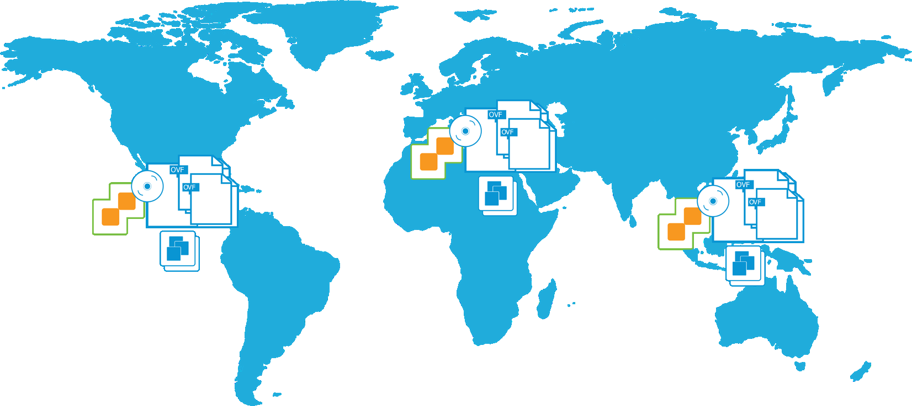
4.8 مَكتَبات المُحتَوى | Content Libraries
لِمُشارَكة الـ Templates، ISOs، وَ OVFs بَين عِدّة vCenters: استَخدِم
Content Libraries. ثَلاثة أَنواع: Local (مُستَقَلّة)، Published
(مَصدَر)، Subscribed (مُستَهلِك). قاعِدتان مُهِمَّتان: Subscribed لا تُعَدَّل وَلا
تُعاد نَشرها.
🧠 Content Libraries — مَكتَبات المُحتَوى
- Local Library — مُستَقَلّة، مَحَلِّيّة لِـ vCenter واحِد.
- Published Library — Local Library تُتاح لِلاستِهلاك مِن خارِج.
- Subscribed Library — تَستَهلِك مِن Published Library في vCenter آخَر.
قُيود مُهِمّة:
- الـ Subscribed Library لا تُمكِن نَشرها مَرّة أُخرى (لا تَتَحَوَّل لِـ Published).
- الـ Subscribed Library لا يُمكِن تَعديلها — تَحديث تِلقائي مِن المَصدَر فَقَط.
4.9 Snapshots — المَفهوم وَالاستِخدام
الـ Snapshot يَلتَقِط حالة VM في لَحظة. مُفيد قَبل تَطبيق Patch،
Upgrade، أَو تَغيير حَرِج: لَو فَشِل، تَرجِع إِلى الحالة السّابِقة بِنَقرة. لَكِن — وَنُكَرِّر —
لَيس Backup. الـ Snapshots تَعيش مَع الـ VM عَلى نَفس الـ Datastore.
🧠 Snapshot Files
| File | Purpose |
|---|---|
-Snapshot#.vmsn | Configuration state عِند الـ Snapshot. |
-Snapshot#.vmem | Memory state (إِذا اختَرت تَضمين الـ memory). |
-00000#.vmdk | Descriptor الجَديد بَعد الـ Snapshot. |
-00000#-delta.vmdk | تَغييرات (VMFS5 - 512B blocks). |
-00000#-sesparse.vmdk | تَغييرات (VMFS6 الافتِراضي - 4KB، يَدعَم unmap). |
.vmsd | قائِمة كُلّ Snapshots. |
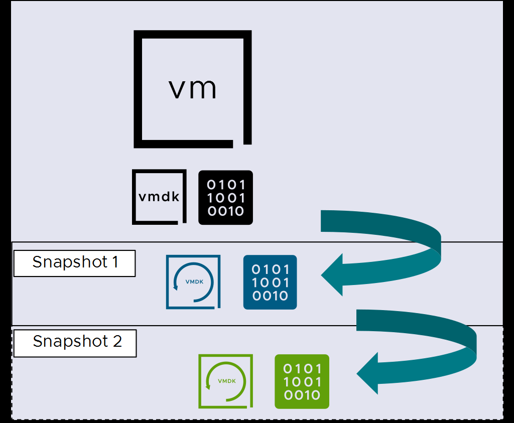
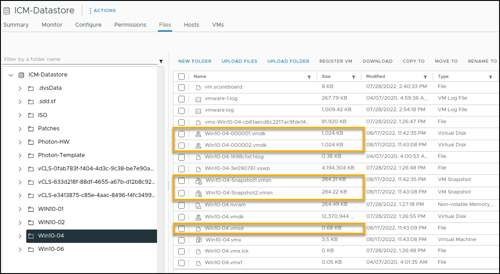
🧠 Snapshot Disk Types
- VMFSsparse — VMFS5 + قُرص < 2TB، Block size 512B (قَديم).
- SEsparse — VMFS6 الافتِراضي + VMFS5 ≥ 2TB، Block 4KB، يَدعَم
unmap(Space Reclamation). - vsanSparse — vSAN Original Storage Architecture (OSA)، Block 4MB.
- vSAN ESA: الـ Snapshot يُخَزَّن في نَفس الـ Object — لَيس مَلَفّاً مُنفَصِلاً.
🧠 Snapshot Operations
- Take Snapshot — مَع/بِدون الـ memory، مَع/بِدون Quiesce (Quiesce فَقَط بِدون memory).
- Edit / Rename — تَغيير الاسم وَالوَصف.
- Delete — دَمج الـ Delta مَع Parent (تَحرير مِساحة).
- Delete All — دَمج كُلّ الـ Snapshots.
- Revert — إِرجاع الـ VM إِلى حالة Snapshot مُحَدَّد.
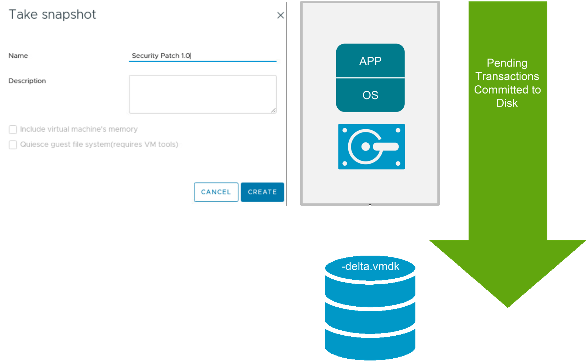
4.10 Backup | Backup with VADP
الـ vSphere Storage APIs - Data Protection (VADP) تُقَدِّم نَموذج Backup
الحَديث: مَنتَج Backup يَستَخدِم Backup Proxy لِيَقرَأ VMDK مُباشَرة (LAN-free)
عَبر SAN Transport أَو SCSI HotAdd. الـ Changed Block Tracking
(CBT) يُسَرِّع Incremental Backups بِشَكل دِراماتيكي. أَيّ مَنتَج Backup حَديث (Veeam،
Avamar، Commvault، Rubrik...) يَستَخدِم VADP.
🧠 vSphere Backup — VADP
- vSphere Storage APIs - Data Protection (VADP) — مَجموعة APIs مُقَدَّمة مُنذ
vSphere 4.0. - السَّبَب: نَقل عِبء النَّسخ عَن الـ
ESX Hostإِلى Backup Proxy Server. - الفائِدة:
- LAN-free backups (مَع SAN transport).
- Off-host processing — لا تَأثير على الـ Production VM.
- Changed Block Tracking (CBT) — incremental backups سَريعة.
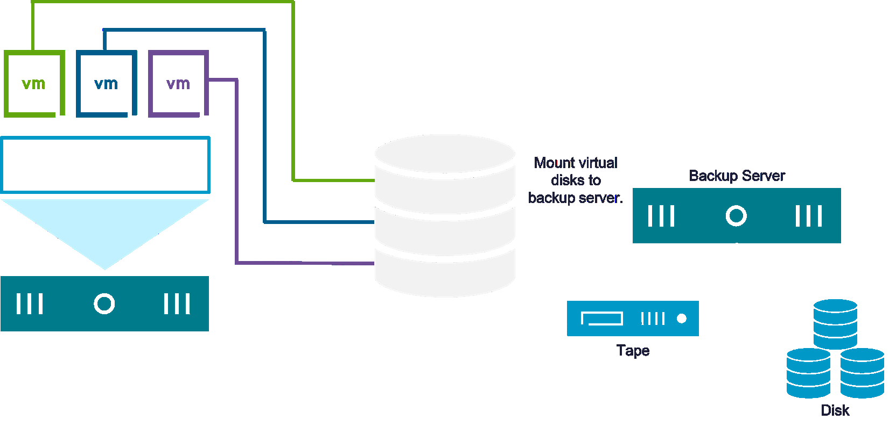
🧠 VADP Transport Methods
- SAN Transport — مُباشَرة عَبر Fibre Channel/iSCSI، الأَسرَع.
- SCSI HotAdd — يُلحَق الـ disk بِـ Backup Proxy كَـ VM، سَريع وَلا يَحتاج SAN.
- NBD over LAN — Network Block Device عَبر الشَّبَكة (بَطيء نِسبيّاً).
- NBDSSL — NBD مَع SSL (آمَن لَكِن أَبطَأ).
- Local File Access — لِـ Backup proxy على نَفس الـ Host.
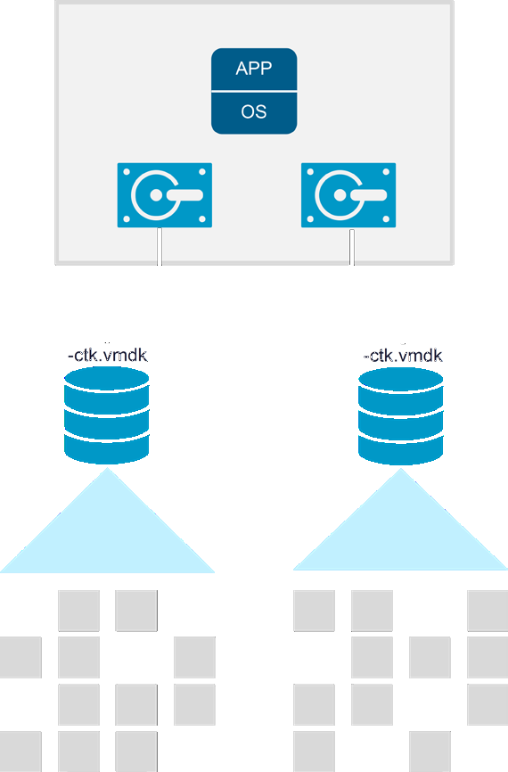
4.X · Deep Dive Concept Cards — مَا يَجِب أَن يَعرِفه مُهَندِس عَمَليّات VM
إِدارة VMs الجَيِّدة لَيست مُجَرَّد Power On/Off — بَل فَهم كَيف تُخَزَّن، تُنسَخ، تُعاد إِنشاءها بِكَفاءة.
Snapshot لَيس Backup. هُوَ Point-in-Time Marker + Delta Disk. كُلُّ كِتابَة بَعد Snapshot تَذهَب إلى Delta File، لَيس إلى Base Disk.
- قَبل Snapshot: VM يَكتُب إلى
vm.vmdk. - عِند Snapshot: VM يَتَوَقَّف لِجُزء ثانية.
vm-000001.vmdk(delta) يُنشَأ. - بَعد Snapshot: كُلُّ كِتابَة تَذهَب إلى delta. Base يَبقى مُجَمَّداً.
- Snapshot ثانٍ:
vm-000002.vmdk. كُلُّ كِتابَة تَذهَب إلَيه. - عِند Read: VM يَقرَأ مِن أَحدَث delta، إذا لَم يَجِد، يَنزِل إلى أَقدَم، إلى Base.
- عِند Consolidate: تُدمَج deltas في Base.
- Snapshot قَديم على VM نَشِط: Delta يَكبُر بِسُرعة. VM 100 GB قَد تُصبِح 500 GB في يَوم.
- Snapshot Chain طَويلة: أَكثَر مِن 3 deltas = أَداء سَيِّء، Consolidation طَويلة.
- Forgotten Snapshots: Backup tools تَأخُذ snapshot، تَنسى حَذفه. اِفحَص أُسبوعِيّاً.
- Snapshot كَـ Backup: لا. Snapshot يَعتَمِد على Base disk. Datastore فَشَل = كُلُّ شَيء يَضيع.
- أَقصى عُمر snapshot: 24 ساعة.
- أَقصى عَدَد snapshots نَشِطة: 2.
- Snapshots لِـ Upgrade/Patch فَقَط، وَتُحذَف فَوراً بَعد التَّأكيد.
- Quiesce (مَع VMware Tools) لِـ Application Consistency. بِدونها = Crash-consistent فَقَط.
Template هُوَ VM Image جاهِزة لِلنَّسخ. Content Library هُوَ مَستودَع لِـ Templates وَ ISOs، يُتاح عَبر عِدّة vCenters.
- اِبنِ Master VM مَع OS + Tools + Hardening.
- Generalize (sysprep لِـ Windows، cloud-init لِـ Linux).
- Convert to Template (تَفقُد القُدرة على Power On).
- اِنشُر إلى Content Library — يَتَزامَن لِكُلِّ Site.
- Customization Specification لِتَخصيص hostname، IP، domain join تِلقائيّاً.
- Deploy from Template + Customization = VM جاهِزة في 5 دَقائق.
- Consistency كُلُّ VM تُبدَأ بِنَفس النُّقطة.
- Speed VM في 5 دَقائق بَدَلاً مِن 2 ساعة.
- Compliance Hardening مَركَزي.
- Patching Update template مَرَّة، VMs جَديدة patched.
- Template قَديم: Update شَهرِيّاً عَلى الأَقَلّ. اِبنِ Pipeline لِتَوليد templates جَديدة.
- VM Owner-Specific في Template: Hostname، SSH keys، application-specific — كُلُّها تَجِب أَن تُحذَف.
- Skipping sysprep: Windows VMs بِنَفس SID = AD issues.
Hot-Add يُتيح إِضافَة CPU، RAM، Disk، NIC إلى VM عامِلة بِدون Reboot. ميزة قَويّة، لَكِنَّها مَع قُيود.
| Resource | Hot-Add | Hot-Remove | مُلاحَظات |
|---|---|---|---|
| vCPU | ✅ | ❌ | OS يَجِب أَن يَدعَم |
| vRAM | ✅ | ❌ | OS يَجِب أَن يَدعَم |
| Disk | ✅ | ✅ | Always (with PVSCSI) |
| NIC | ✅ | ✅ | VMXNET3 only |
| USB | ✅ | ✅ | Pass-through |
| Serial Port | ❌ | ❌ | Power-off needed |
- Hot-Add vCPU يَكسِر vNUMA: إذا VM ≥ 9 vCPU، vNUMA يُعاد حِسابُه فَقَط عِند Reboot. Hot-Add قَد يُؤَدّي إلى تَوزيع NUMA سَيِّء.
- Hot-Add لا يَعمَل مَع FT: اِنتَهَى. FT يَتَطَلَّب Power-Off لِأَيّ تَعديل.
- OS Support: Windows Server 2019+ يَدعَم. RHEL 7+ يَدعَم. أَنظِمة قَديمة، اِفحَص.
📝 Knowledge Check
Q1. Which file holds the VM configuration?
Correct: B
.vmx is the VM configuration file. .vmtx is the same file but for templates.
Q2. Which storage adapter offers the highest performance?
Correct: C
Virtual NVMe gives highest performance, followed by PVSCSI.
Q3. Which disk provisioning is REQUIRED for Fault Tolerance?
Correct: C
FT requires fully zeroed disks for consistent secondary VM behavior.
Q4. Which NIC type requires VMware Tools to be installed?
Correct: C
VMXNET3 is paravirtualized — only works with VMware Tools drivers.
Q5. A Subscribed Content Library can:
Correct: C
Subscribed = read-only consumer of a Published library. Cannot be edited or re-published.
Q6. Are snapshots a valid backup strategy?
Correct: B
Snapshots are short-term and stored with the VM. NOT a backup.
Q7. Which snapshot disk format is the default on VMFS6?
Correct: B
VMFS6 uses SEsparse by default — 4KB blocks, supports unmap.
Q8. What does Changed Block Tracking (CBT) enable?
Correct: B
CBT lets backup software back up only blocks changed since last backup — much faster.
Q9. Which VADP transport mode runs over Fibre Channel/iSCSI for fastest backup?
Correct: C
SAN Transport sends data directly across the storage fabric — bypasses the LAN.
Q10. When deploying a Linux VM from template, which mechanism handles guest customization?
Correct: B
Modern Linux uses cloud-init. Windows uses sysprep.
Clusters · vMotion · DRS · HA · FT
كَيف تَعمَل ESX Hosts كَوَحدة قَويّة وَمُتَوَفِّرة.
5.1 Cluster — اللَّبِنة الأَساسيّة | The Foundation
الـ Cluster هُوَ مَجموعة Hosts تُدار كَوَحدة واحِدة. عِند انضِمام Host لِـ Cluster،
يَحصُل عَلى ميزات لا يَستَطيع تَوفيرها وَحده: HA لِلتَّوافُريّة، DRS لِلتَّوازُن، vMotion لِلنَّقل
الحَيّ، vSAN لِلتَّخزين الموزَّع، FT لِصِفر انقِطاع. في vSphere 9.0، فَلسَفة Cluster
تَطَوَّرت: كُلّ Cluster يُدار بِـ Image واحِد (لا Baselines)، وَهَذا إِلزامي عِند
الإِنشاء.
🧠 Cluster Basics — VCF 9.0
- الحَدّ الأَقصى: 96 ESX hosts لِكُلّ Cluster.
- مَع
vSAN: الحَدّ 64 hosts. - الميزات المُتاحة: DRS · HA · vSAN · vMotion · FT · Cluster Image.
- في
vSphere 9.0: تَعيين Cluster Image إِلزامي عِند إِنشاء Cluster. - الـ Baselines القَديمة لَم تَعُد مَدعومة — كُلّ Cluster يَجِب أَن يُدار بِـ Image.
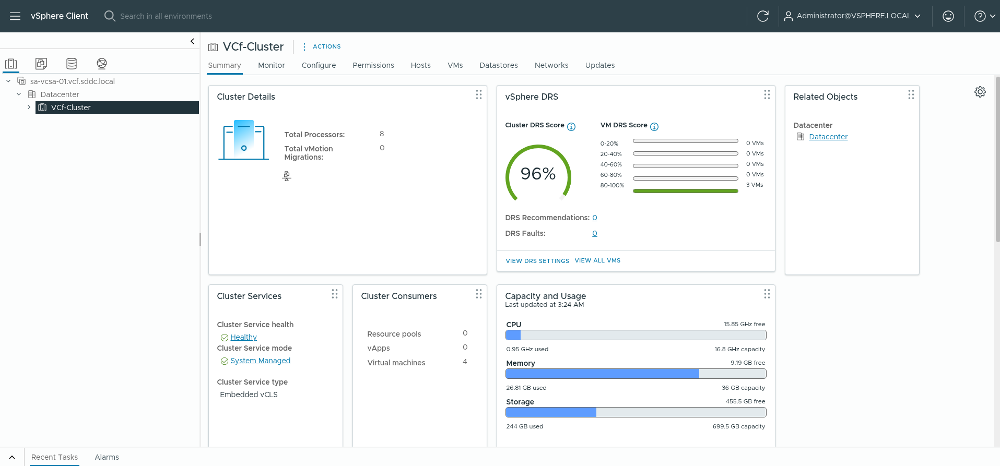
5.2 vMotion — نَقل VMs الحَيّ | Live Migration
vMotion هُوَ التَّقنيّة الأَيقونيّة في VMware: نَقل VM شَغّالة مِن Host
إِلى آخَر بِدون انقِطاع لِلخِدمة، وَ User لا يَلاحِظ شَيئاً. هَذِه القُدرة هِيَ ما يَجعَل Maintenance
الـ hardware، تَوازُن Resources، وَإِيقاف Hosts لِتَوفير الطّاقة، عَمَلِيّة بِلا تَأثير.
🧠 vMotion Types — أَنواع النَّقل
- Cold Migration — الـ VM مُطفَأة. أَبسَط نَوع.
- Hot Migration (vMotion) — الـ VM شَغّالة. الأَنواع:
- Compute-only vMotion — تَغيير الـ Host، نَفس الـ Datastore.
- Storage vMotion — تَغيير الـ Datastore، نَفس الـ Host.
- Both — تَغيير Host وَ Datastore مَعاً.
- Cross-vCenter vMotion — نَقل بَين vCenters مُختَلِفة (نَفس SSO).
- vGPU Live Migration — جَديد، يَدعَم نَقل VMs بِـ vGPU بِدون انقِطاع.
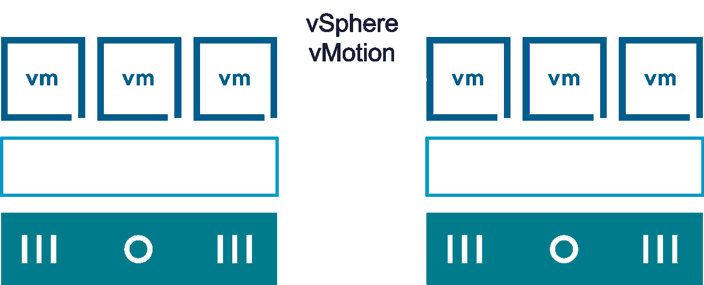
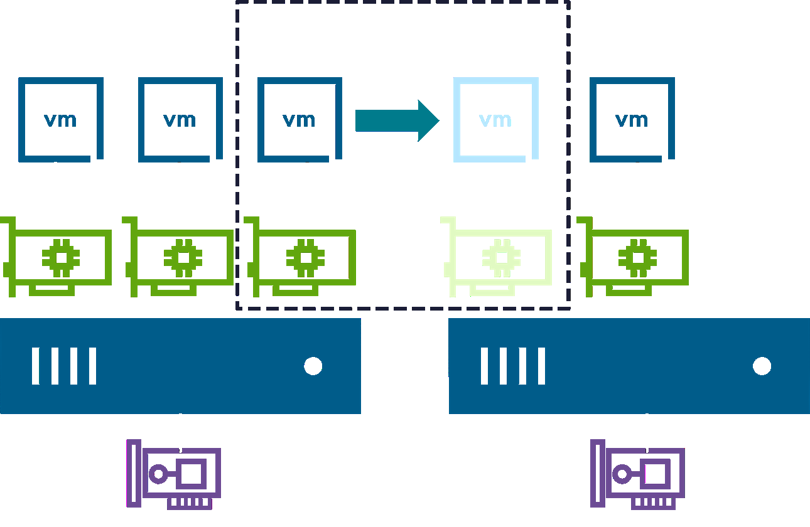
5.3 vMotion CPU Constraints & EVC
أَكبَر سَبَب لِفَشَل vMotion هُوَ عَدَم تَوافُق CPUs. الـ Guest OS داخِل
الـ VM يَعتَمِد عَلى تَعليمات CPU مُحَدَّدة (SSE، AVX، إِلخ). إِذا انتَقَلَت لِـ Host
بِـ CPU أَقدَم لا يَدعَم تِلك التَّعليمات، تَتَعَطَّل. الحَلّ التاريخي: EVC الَّذي
يَكشِف فَقَط التَّعليمات المُشتَرَكة. VCF 9.0 أَضافَ Custom EVC لِتَحَكُّم أَدَقّ،
وَ EVC for vSGA لِتَوحيد ميزات GPUs.
🧠 vMotion CPU Constraints
- الشَّرط الأَهَمّ: الـ Source وَ Destination Hosts يَجِب أَن يَكون لَهُما:
- نَفس Vendor الـ processor (Intel أَو AMD — لا يُمكِن المَزج).
- نَفس عائِلة الـ processor.
- تَعليمات SSE3 / SSSE3 / SSE4.1 يَجِب أَن تَتَطابَق.
- إِذا لَم تَتَطابَق، يَفشَل
vMotionأَو يُمنَع.
🧠 EVC — Enhanced vMotion Compatibility
- المُشكِلة: Hosts بِأَجيال مُختَلِفة مِن نَفس الـ processor لَدَيها مَجموعات تَعليمات مُختَلِفة.
- الحَلّ:
EVCيُنشِئ Baseline CPU mask يَكشِف فَقَط التَّعليمات المُشتَرَكة لِكُلّ VMs. - هَذا يَسمَح بِـ
vMotionبَين أَجيال مُختَلِفة. - Custom EVC — تَحَكُّم دَقيق في تَفعيل/تَعطيل ميزات بِعَينها.
- EVC for vSGA — جَديد لِتَوحيد عَرض ميزات GPUs بَين Hosts.
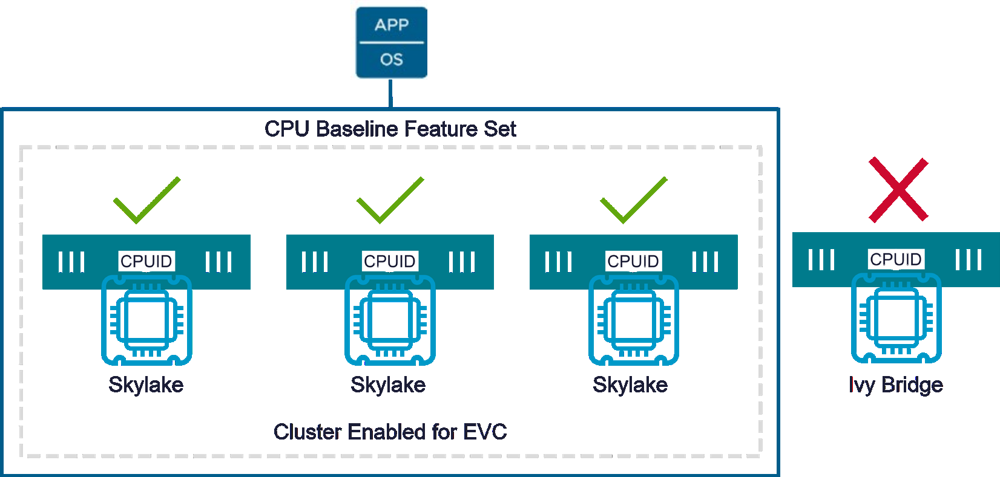
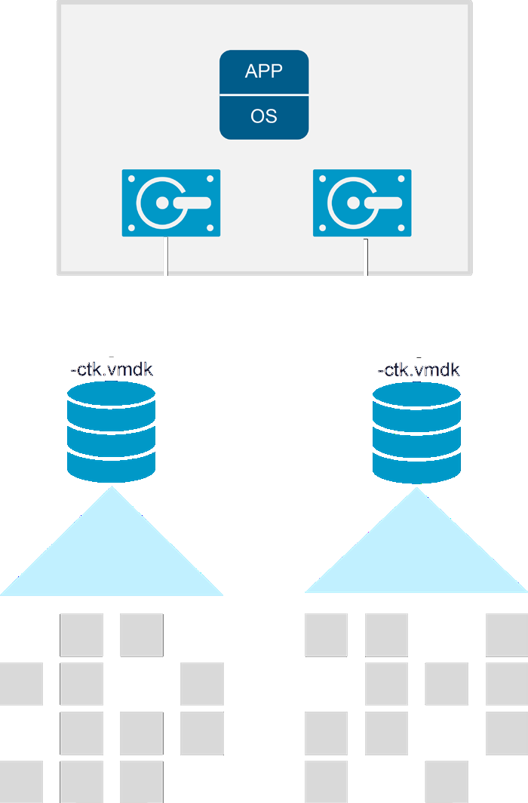
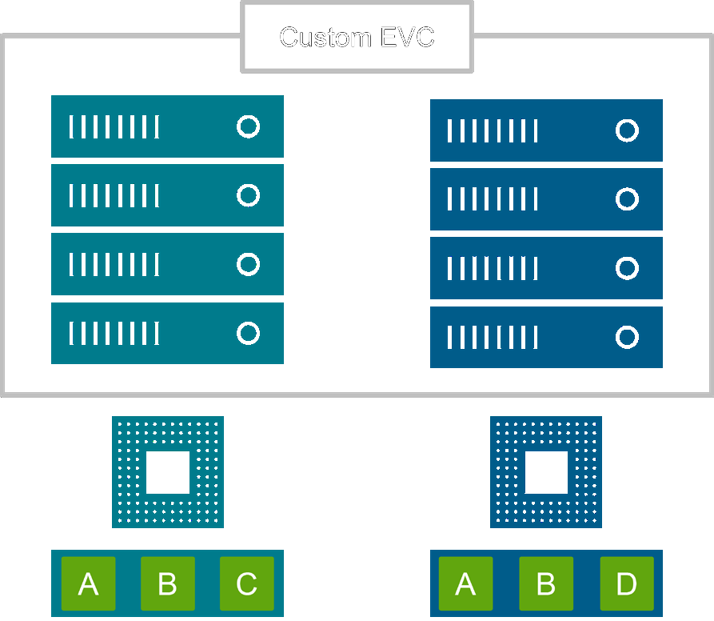
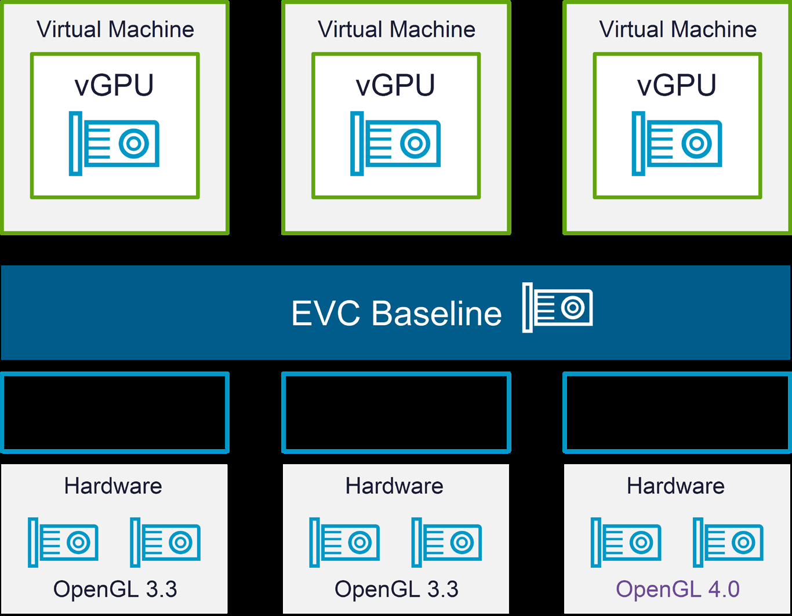
5.4 DRS — تَوزيع Resources | Distributed Resource Scheduler
الـ DRS هُوَ «المُدير الذَّكي» لِلـ Cluster: يَتَّخِذ قَرارات Initial Placement
عِند تَشغيل VM، وَ Load Balancing بَين Hosts كُلّ دَقيقة، وَيُسَهِّل Maintenance Mode بِنَقل VMs
بِشَكل تِلقائي. المُستَوى الافتِراضي: Fully Automated + Migration Threshold L3.
🧠 DRS — Distributed Resource Scheduler
- الوَظيفة:
- Initial Placement — اختِيار Host عِند تَشغيل VM.
- Load Balancing — نَقل VMs لِتَحقيق تَوازُن.
- Maintenance Mode — إِخلاء Host عِند Maintenance.
- VM-focused: يَعمَل عَلى تَسجيل (Score) لِكُلّ VM كُلّ دَقيقة.
- المُتَطَلَّبات: شَبَكة
vMotion+Shared Storage.
🧠 DRS Automation Levels
| المُستَوى | السُّلوك |
|---|---|
| Manual | DRS يَقتَرِح، الإِداري يُنَفِّذ يَدَويّاً. |
| Partially Automated | Initial Placement تِلقائي، Load Balancing يَدَوي. |
| Fully Automated | كُلّ شَيء تِلقائي. |
Migration Threshold (1–5):
- L1 Conservative — فَقَط الضَّروري (مَثَل Maintenance Mode).
- L3 (الافتِراضي) — مُتَوازِن.
- L5 Aggressive — تَوازُن مُكَثَّف، تَوصيات حَتّى لِلتَّحسينات الطَّفيفة.
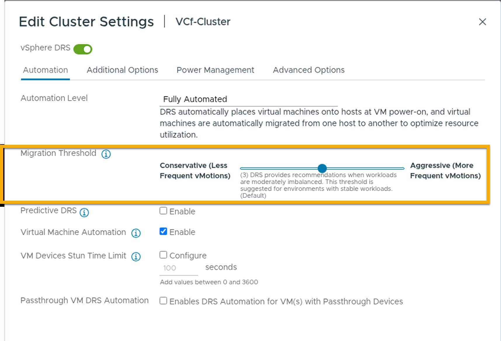
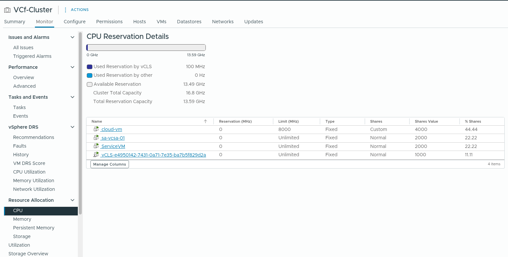
🧠 Affinity & Anti-Affinity Rules
- VM-VM Affinity — VMs مُحَدَّدة عَلى نَفس الـ Host (مَثَل: App + DB).
- VM-VM Anti-Affinity — VMs لا تَكون عَلى نَفس الـ Host (مَثَل: Domain Controllers).
- VM-Host Affinity — VMs على Hosts مُحَدَّدة (Should/Must).
- VM-Host Anti-Affinity — VMs لا تَكون عَلى Hosts مُحَدَّدة (مَثَل: Licensing).
5.5 vSphere HA — التَّوافُريّة العالِية
HA يَحمي مِن فَشَل Host: عِند سُقوط Host، VMs الَّتي كانَت عَلَيه يُعاد تَشغيلها على
Hosts أُخرى في الـ Cluster. الفِكرة بَسيطة لَكِن التَّنفيذ مُعَقَّد: كَيف نَعرِف أَنَّ Host سَقَط
فِعلاً وَلَيس مَعزولاً عَن الشَّبَكة؟ الإِجابة: Network Heartbeats + Datastore Heartbeats
مَعاً.
🧠 vSphere HA — High Availability
- الفِكرة: عِند فَشَل Host، إِعادة تَشغيل VMs الَّتي عَلَيه عَلى Hosts أُخرى تِلقائيّاً.
- الوَكيل:
FDM(Fault Domain Manager). - VCF 9.0:
FDMأَصبَح جُزءاً مِنESX Default Image(سابِقاً كانَ يُدفَع). - المُكَوِّنات: Primary + Secondary FDM nodes.
🧠 FDM Election & Heartbeats
- الانتِخاب يَستَغرِق ~ 15 ثانِية عِند تَفعيل HA أَو سُقوط Primary.
- Primary Selection: الـ Host الَّذي يَصِل إِلى أَكبَر عَدَد مِن Datastores.
- عِند التَّعادُل: أَصغَر
MOID(Managed Object ID). - الـ Heartbeats:
- UDP أَثناء الانتِخاب (سَريع، خَفيف).
- TCP آمَن بَعد الانتِخاب (مَوثوق، مُشَفَّر).
- Network + Datastore Heartbeats مَعاً يُمَيِّزان بَين:
- Failure (الـ Host سَقَط).
- Partition (الشَّبَكة مُجَزَّأة).
- Isolation (الـ Host مَعزول لَكِن شَغّال).
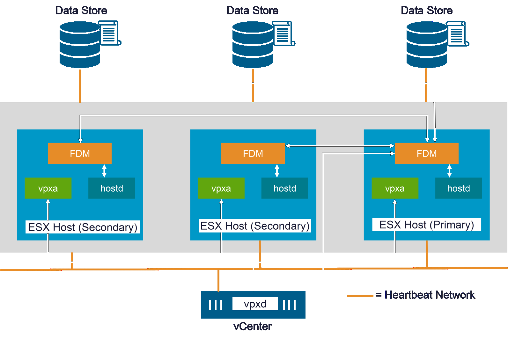
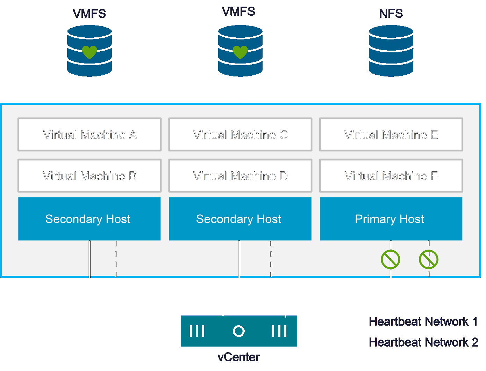
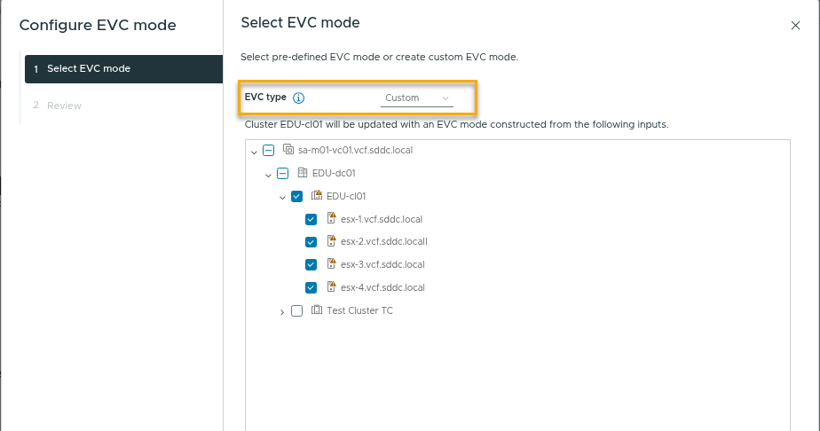
🧠 VM Component Protection (VMCP)
- تَحمي مِن أَعطال Storage Path (Permanent Device Loss أَو All Paths Down).
- عِند الكَشف، تَنقُل VMs المُتَأَثِّرة لِـ Host آخَر يَصِل لِلـ Datastore.
- إِعدادات لِكُلّ نَوع PDL/APD: Disabled, Issue Events, Power Off & Restart.
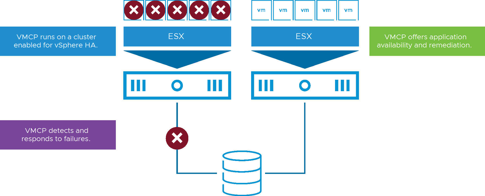
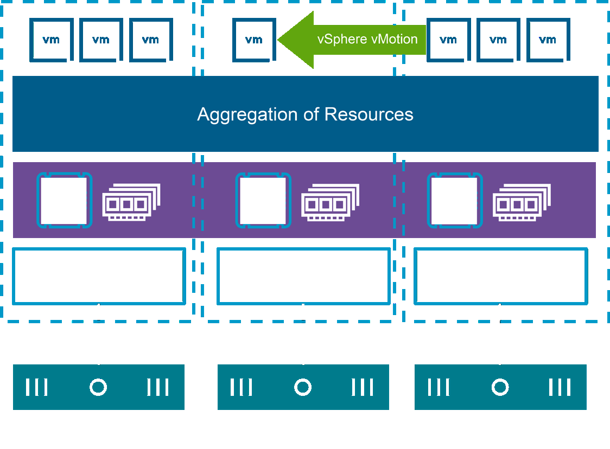
5.6 Admission Control — حَجز Resources لِلـ Failover
إِذا فَشِل Host، أَين تَذهَب VMs؟ يَجِب أَن تَكون هُناك Resources كافِية في باقي Hosts.
Admission Control هُوَ الآلِيّة الَّتي تَضمَن ذَلِك: تَمنَع تَشغيل VMs جَديدة
إِذا كانَ ذَلِك سَيُخِلّ بِقُدرة الـ Cluster عَلى احتِواء فَشَل Host. الافتِراضي: Cluster
Resource Percentage.
🧠 Admission Control — 4 Settings
- Disabled — لا قُيود (غَير مُوصى).
- Slot Policy — حِساب Slots بِناءً على أَكبَر VM Reservation.
- Cluster Resource Percentage (الافتِراضي) — حَجز نِسبة % مِن CPU/Memory لِلـ Failover.
- Dedicated Failover Hosts — Hosts مُخَصَّصة لا تَستَقبِل VMs إِلّا عِند الفَشَل.
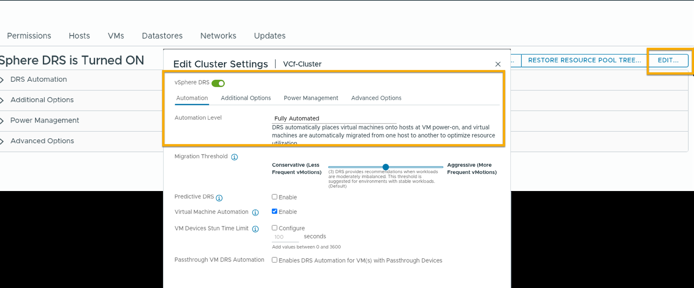
5.7 Fault Tolerance — صِفر انقِطاع | Zero Downtime
FT يَأخُذ التَّوافُريّة لِمُستَوى أَعلى مِن HA. بَدَلاً مِن إِعادة تَشغيل
الـ VM بَعد فَشَل (الَّذي يَعني انقِطاعاً قَصيراً)، FT يَحتَفِظ بِنُسخة
حَيّة (Secondary VM) جاهِزة لِلتَّوَلّي فَوراً. النَّتيجة: لا يَلاحِظ المُستَخدِم أَيّ شَيء.
السِّعر: Resources مُضاعَفة (CPU + RAM + شَبَكة FT Logging) وَ Hosts مُختَلِفة لِلـ Primary
وَ Secondary.
🧠 vSphere Fault Tolerance — FT
- Zero downtime + Zero data loss + No network connectivity loss.
- يُنشِئ Secondary VM مُطابِقة لِـ Primary VM عَلى Host آخَر.
- الـ Secondary تُنَفِّذ نَفس التَّعليمات بِشَكل مُتَزامِن.
- عِند فَشَل Primary → Secondary تَتَوَلّى فَوراً، تُنشَأ Secondary جَديدة تِلقائيّاً.
- المُتَطَلَّبات:
HAمُفَعَّل.- الـ Primary وَ Secondary على Hosts مُختَلِفَة.
- FT Logging Network مُخَصَّصة.
DRSيَختار Initial Placement لَكِن لا يُهاجِر FT VMs تِلقائيّاً.
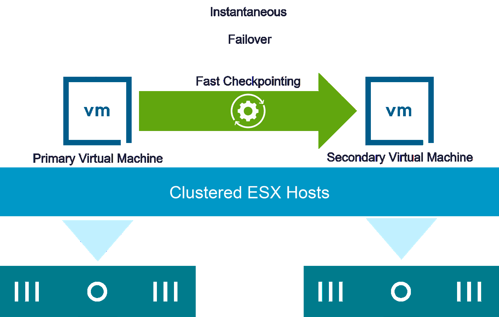
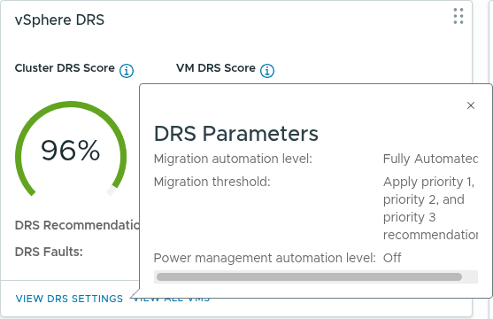
5.8 · Deep Dive Concept Cards — مَا يَحتاج المُمارِس مَعرِفَتُه
هَذِه البِطاقات تُلَخِّص كُلَّ خَدمة Cluster بِعَمَق المُمارِس — لَيس فَقَط ما هِيَ، بَل مَتى تَستَخدِمها، وَمَتى تَتَجَنَّبها، وَمَا الأَخطاء الشّائِعة.
تَوزيع VMs تِلقائيّاً عَلى Hosts لِتَحقيق التَّوازُن في الـ CPU وَالـ RAM، وَتَقليل Contention، وَتَحسين الأَداء.
- VM resource demand (CPU، RAM).
- Host capacity (مُتاح، مُحتَجَز).
- VM-Host Affinity Rules.
- VM-VM Anti-Affinity Rules.
- Resource Pools (Shares، Reservations، Limits).
- DRS يَجمَع statistics كُلَّ 5 دَقائق.
- يَحسُب Cluster Imbalance Metric.
- إذا تَجاوَز Threshold، يَقتَرِح Migrations.
- بِناءً عَلى Automation Level: Manual (suggest only)، Partially Automated (placement فَقَط)، Fully Automated (يَنقُل بِدون مُوافَقة).
- كُلُّ vMotion يَستَهلِك Resources، لِذَلِك DRS يَوازِن بَين Migration Cost وَ Benefit.
- Initial Placement أَين تَبدَأ VM جَديدة.
- Load Balancing نَقل VMs لِتَوازُن Cluster.
- DRS Score 0-100% — كَم Cluster مُتَوازِن.
- Manual Mode في Production: يَعني VMs غَير مُتَوازِنة دائِماً. اِستَخدِم Fully Automated إِلّا إذا كانَ هُناك سَبَب قَوي.
- Migration Threshold Conservative جِدّاً: DRS لا يَنقُل شَيء، Cluster يَظَلّ غَير مُتَوازِن. الافتِراضي (Level 3) عادَة جَيِّد.
- Affinity Rules مُتَناقِضة: «VM-A يَجِب أن يَكون مَع VM-B» + «VM-A يَجِب أن يَكون عَلى Host-1». DRS يُحاوِل، يَفشَل، يُؤَدّي إلى alerts.
- Resource Pools كَـ Folders: Resource Pool لَيس مُجَلَّد. اِستَخدِم Folders لِلتَّنظيم، Resource Pools لِلتَّحَكُّم في Resources.
Cluster مِن 8 hosts. Host-3 مُحَمَّل بِنِسبَة 85% بَينَما Host-7 بِنِسبَة 35%. DRS يُلاحِظ:
- يَحسُب: نَقل VM-X (4 vCPU, 16 GB) مِن Host-3 إلى Host-7 يُحَسِّن DRS Score مِن 65 إلى 87.
- Cost: vMotion يَستَغرِق ~30 ثانية، يَستَهلِك ~2 Gbps في الـ vMotion Network.
- Benefit: VM-X كانَت تَعاني CPU Ready 8%، سَتَنخَفِض إلى 2%.
- القَرار: نَفِّذ — Benefit > Cost.
إِعادة تَشغيل VMs تِلقائيّاً عَلى Hosts أُخرى عِند فَشَل Host. الـ HA لا يَمنَع الانقِطاع — يُقَلِّل مُدَّتَه. VMs سَتُعيد التَّشغيل = downtime 1-5 دَقائق.
- Cluster Hosts (الأَقَلّ مِنها 2).
- Shared Storage (أَو vSAN).
- Management Network (لِـ Heartbeat).
- Admission Control Policy.
- كُلُّ host لَدَيه FDM agent. أَحَدُهم Master، البَقيّة Slaves.
- Master يُراقِب Slaves عَبر Network Heartbeat (كُلَّ 1 ثانية).
- إذا فَقَدَ Heartbeat لِـ 12-15 ثانية: يُجَرِّب Datastore Heartbeat كَـ Backup.
- إذا فَقَدَ كِلَيهما: يَعتَبِر Host مَيِّتاً.
- VMs الَّتي كانَت عَلى Host المَيِّت تُعاد تَشغيلها عَلى Hosts أُخرى.
- إذا Master يَفشَل: Election Process بَين Slaves لِاختِيار Master جَديد.
- VM Restart أَلسَبَب الأَشهَر.
- VM Monitoring يَكشِف VM hang، يُعيد تَشغيل (VMware Tools heartbeat).
- Application Monitoring اِختِياري — يَكشِف App hang.
- Datastore Monitoring Hosts تَفقِد Storage تُعتَبَر isolated.
- Proactive HA (مَع Hardware Vendor): قَبل أن يَفشَل Host، اِنقُل VMs.
- Single Management Network: إذا فَشَل، كُلُّ Cluster يَبدو down. اِستَخدِم 2 VMK Management عَلى shared switches مُختَلِفة.
- Admission Control = None: «اِسمَح بِكُلِّ شَيء». ثُمَّ Host يَفشَل، VMs لا تَستَطيع البَدء لِأَنَّ لا سَعة. كارِثَة.
- VM Reservations مُبالَغ فيها: يَأكُل سَعة HA. اِحفَظها لِـ Critical فَقَط.
- HA Isolation Response = Power Off: Aggressive جِدّاً. اِستَخدِم Shutdown أَو Leave Powered On.
Cluster مِن 6 hosts، 200 VMs. Host #4 يَفشَل بِسَبَب PSU failure:
- T+0s: Host #4 يَتَوَقَّف.
- T+15s: Master يَفقِد Heartbeat.
- T+30s: Datastore Heartbeat يَفشَل أَيضاً → Host مَيِّت.
- T+45s: VMs Restart يَبدَأ عَلى Hosts 1-3, 5-6.
- T+2min: 35 VM (الَّتي كانَت عَلى Host #4) كُلُّها تَعمَل.
- T+5min: Aria Operations يُؤَكِّد كُلُّها reachable.
- إِجمالي downtime: 2-5 دَقائق لِكُلِّ VM.
VM تَستَمِرّ في العَمَل بِدون انقِطاع حَتّى لَو فَشَل Host بِالكامِل. صِفر downtime، عَكس HA الَّذي يُعيد التَّشغيل.
- VM Primary على Host A.
- VM Secondary (نُسخَة مُتَطابِقة) عَلى Host B.
- كُلُّ instruction CPU، كُلُّ I/O يُكَرَّر بِالتَّوازي عَلى Secondary.
- Primary وَ Secondary في حالة Lockstep.
- إذا فَشَل Host A: Secondary يُصبِح Primary تَلقائيّاً.
- FT يَبدَأ Secondary جَديد عَلى Host آخَر فَوراً.
- VM ≤ 8 vCPU فَقَط. (تَوسيع لِأَكثَر في إِصدارات حَديثة).
- VM ≤ 128 GB RAM.
- يَستَهلِك ضِعف الـ Resources (نُسخَتان مِن كُلِّ شَيء).
- FT Logging Network: مُنفَصِل، 10 GbE الأَقَلّ، Latency < 1ms.
- لا Snapshots عَلى FT VM.
- لا Hot-Add (CPU، Memory، Disk).
- ✅ VM لا يَتَحَمَّل 1 دَقيقة انقِطاع: SCADA control، Telecom signaling.
- ✅ VM Legacy لا تَدعَم Clustering عَلى مُستَوى التَّطبيق.
- ❌ Web servers: اِستَخدِم Load Balancing بَدَلاً.
- ❌ Databases: اِستَخدِم Database Native Clustering (Always-On، Oracle RAC).
- ❌ VMs تَتَطَلَّب أَكثَر مِن 8 vCPU.
القاعِدة: 95% مِن VMs لا تَحتاج FT. HA كافٍ. اِستَخدِم FT بِحَذَر — التَّكلِفة عالية.
نَقل VM عامِلة بَين Hosts بِدون إِيقافها — لا انقِطاع لِلخِدمة. الأَساس لِـ DRS، HA، Maintenance Mode، Patching.
- VM يُختار لِلنَّقل مِن Host A إلى Host B.
- Pre-copy memory مِن A إلى B عَبر vMotion Network.
- أَثناء النَّقل، VM يَستَمِرّ في الكِتابَة في الذّاكِرة — تُتَتَبَّع كَـ dirty pages.
- عِدّة جَولات pre-copy حَتّى يَقِلّ عَدَد dirty pages.
- Stun: VM يَتَوَقَّف لِجُزء مِن الثّانية (typically < 1s).
- تُنقَل آخِر dirty pages.
- VM يَستَأنِف عَلى Host B.
- Host A يَتَخَلَّى عَن Resources الـ VM.
- Shared Storage بَين Source وَ Destination (أَو vSphere Storage vMotion).
- vMotion VMkernel على كُلِّ Host (شَبَكة مُنفَصِلة، 10 GbE+).
- CPU Compatibility (نَفس Vendor أَو EVC enabled).
- VM portgroup مُتاح على Destination Host.
- vMotion Network مُشتَرَك مَع Management: Saturation تُؤَدّي إلى HA isolation. اِفصِلهُما.
- MTU mismatch: Switches مَع MTU 1500، vMK MTU 9000 — Migrations تَفشَل.
- Wrong NIC Teaming: Active-Active بِدون LACP يُؤَدّي إلى packet loss.
- EVC غَير مُفَعَّل: CPU mismatch يَمنَع vMotion. اِفعَل EVC عِند بِناء Cluster.
📝 Knowledge Check
Q1. Maximum hosts in a vSphere 9.0 cluster (without vSAN)?
Correct: C
Up to 96 hosts per cluster (64 with vSAN).
Q2. In vSphere 9.0, what is REQUIRED when creating a new cluster?
Correct: B
Image assignment is mandatory in 9.0; baselines are no longer used.
Q3. Which vMotion type changes the datastore but not the host?
Correct: C
Storage vMotion = same host, different datastore.
Q4. Which CPU constraint must be satisfied for vMotion?
Correct: B
Vendor + family must match. Clock speeds and cores can differ. SSE3/SSSE3/SSE4.1 must match too.
Q5. What is EVC?
Correct: B
EVC creates a CPU baseline mask so VMs see only common CPU features and can vMotion across CPU generations.
Q6. DRS computes a score for each VM how often?
Correct: B
DRS in modern vSphere is VM-focused and recomputes scores every minute.
Q7. Which DRS migration threshold is the default?
Correct: B
Level 3 is the default — balanced between conservative and aggressive.
Q8. What is the difference between Maintenance Mode and Standby Mode?
Correct: B
Maintenance Mode = host stays powered on for service. Standby Mode = host powered off by DPM (BMC remains).
Q9. Which agent provides vSphere HA?
Correct: C
FDM is the HA agent on each host. In 9.0 it is part of the default ESX image.
Q10. What is the default Admission Control policy?
Correct: C
Cluster Resource Percentage is the default — reserves a % of CPU/Memory for failover.
Q11. How does HA distinguish failure from network isolation?
Correct: B
Network heartbeats + datastore heartbeats together differentiate failure / partition / isolation.
Q12. What does vSphere FT guarantee?
Correct: A
FT provides zero downtime, zero data loss, and continuous network connectivity.
Q13. Where do FT primary and secondary VMs run?
Correct: B
Primary and secondary MUST run on different hosts to survive a host failure.
Image Management · Live Patch · RDU
إِبقاء VCF حَديثاً وَآمِناً.
6.1 vLCM — لِماذا وَكَيف | Why & How
إِدارة دَورة حَياة Software الـ Hypervisor كانَت تاريخيّاً مَأساة: Patches مُتَفَرِّقة،
Drivers مِن Vendors مُختَلِفين، VIBs يَدَويّة. vLCM حَلَّ ذَلِك بِنَموذج Image-based:
Image واحِدة مُعَرَّفة، تُطَبَّق عَلى كُلّ Hosts في Cluster، وَكُلّ Host يَكون compliant
أَو لا. لا حالات وَسَط.
🧠 ما يَفعَله vLCM | What vLCM Does
- إِدارة VMware Tools وَ VM Hardware upgrades.
- Upgrade وَتَصحيح
ESX hosts. - تَثبيت وَتَحديث Third-party software على ESX.
- تَثبيت وَتَحديث ESX Drivers وَ Firmware.
- تَوحيد ESX Images عَبر كُلّ Hosts في Cluster.
6.2 مُكَوِّنات الصُّورة | Image Components
الصُّورة تَتَكَوَّن مِن طَبَقات: Base Image هُوَ ESX الأَساسي مِن VMware (إِلزامي).
Components هِيَ تَجميعات VIBs لِوَظائِف مُحَدَّدة. Vendor Add-ons هِيَ تَخصيصات
OEM (Dell EMC، HPE، Lenovo). Firmware/Drivers Add-on يَتَطَلَّب
Hardware Support Manager Plug-in وَيَجلِب التَّحديث الكامِل لِلـ hardware.
🧠 ESX Image Components — مُكَوِّنات الصُّورة
- ESX Base Image — الإِصدار الأَساسي مِن VMware (إِلزامي، يُختار أَوَّلاً).
- Components — تَجميع لِـ
VIBs(vSphere Installation Bundles). - Vendor Add-ons — مَجموعات OEM (Dell، HPE، Lenovo، Cisco).
- Firmware & Drivers Add-on — يَتَطَلَّب
Hardware Support Manager (HSM)plug-in.
كُلّ Cluster يُطَبِّق Image واحِد عَلى كُلّ Hosts فيه — هَكَذا يَتَوَحَّد Software.
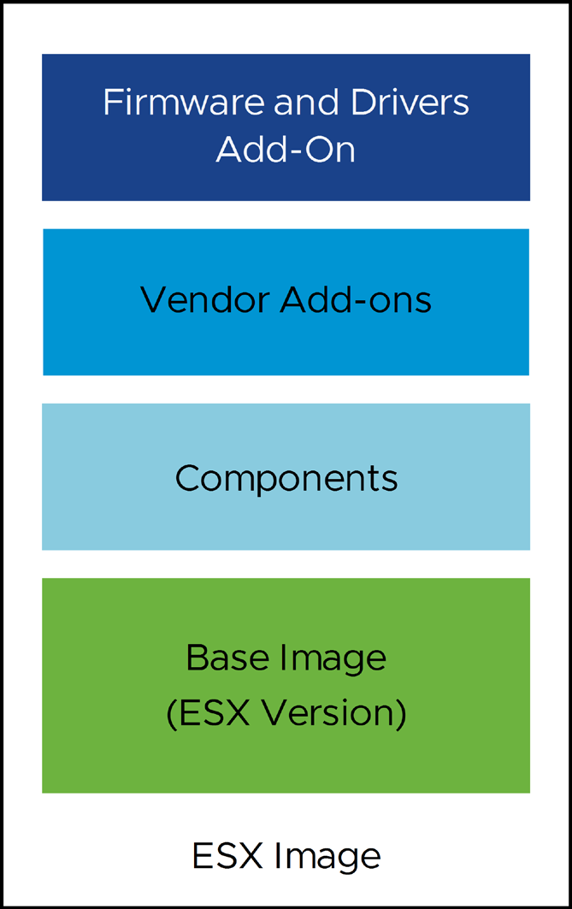
6.3 Heterogeneous Clusters & Image Assignment
الواقِع: مُعظَم بيئات الإِنتاج لَدَيها Hosts مِن Vendors مُتَعَدِّدين أَو أَجيال
مُختَلِفة. vLCM يَدعَم 4 Images كَحَدّ أَقصى لِكُلّ Cluster، وَالـ Assignment
يَتِمّ تِلقائيّاً بِناءً على بَيانات BIOS (Vendor, Model, OEM string, Family) أَو يَدَويّاً.
🧠 Host Image Assignment
- Manual — تَختار Image لِكُلّ Host بِنَفسك.
- Automatic — يَستَخدِم بَيانات BIOS:
- Vendor
- Model
- OEM string
- Family
- الأُسلوب التِلقائي يَضمَن أَنَّ كُلّ Host يَحصُل عَلى Image مُناسِب لَه.
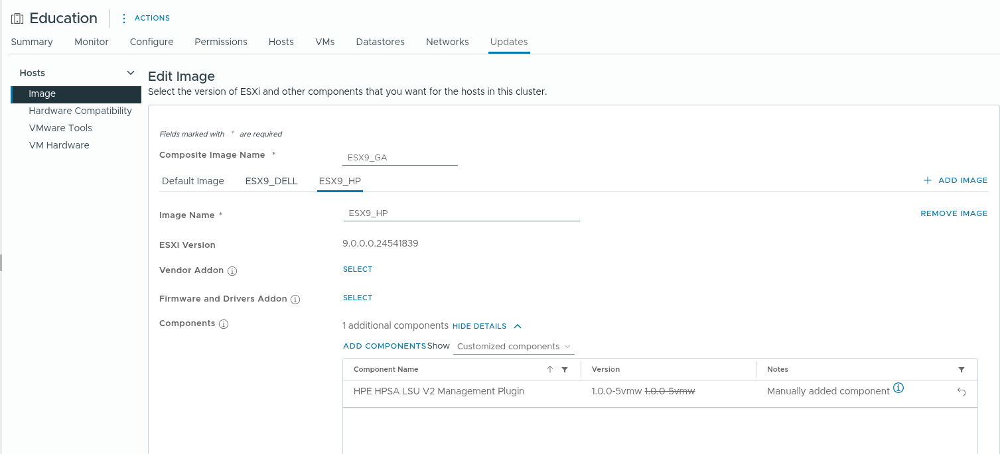
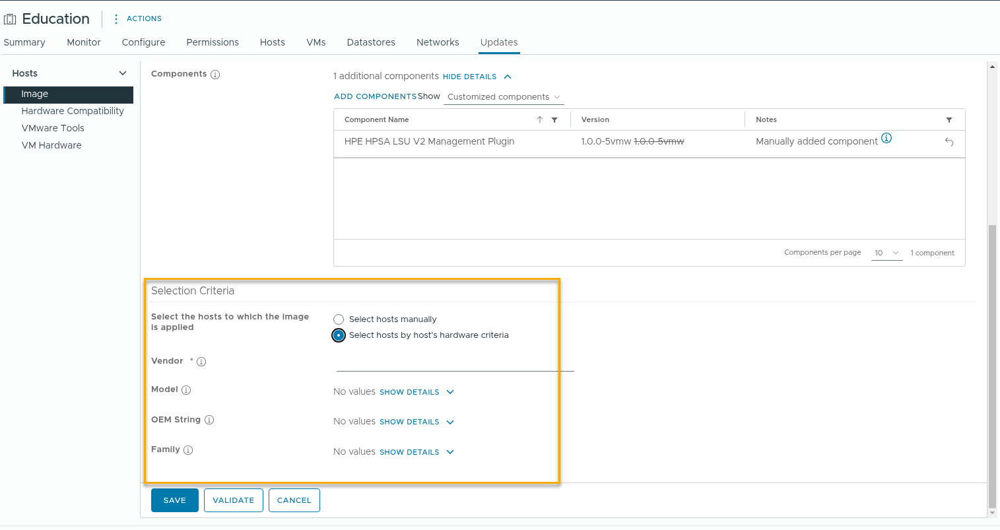
6.4 Image Depot — Image Depot — التَّحديثات
كُلّ التَّحديثات تَأتي مِن Image Depot المُستَضاف عَلى vCenter.
الـ Sync تِلقائي بَعد النَّشر، وَيَعمَل بِجَدوَل دَوري.
🧠 Image Depot — Image Depot
- الـ
Image Depotيُمَثِّل كُلّ Software المُتاحة لِـ vLCM. - المَوقِع: عَلى
vCenterنَفسه. - يَحوي:
- ESX Base Images
- Vendor Add-ons
- Third-party Components
- التَّحميل التِلقائي يَبدَأ فَوراً بَعد نَشر
vCenter، ثُمَّ يَعمَل بِجَدوَل.
6.5 Authentication-Based Depots — تَغيير VCF 9.0
قَبل، كانَت VMware تَستَضيف عِدّة مَواقِع تَنزيل مَفتوحة. الآن، تَحت Broadcom: مَوقِع واحِد
مَركَزي + Token فَريد لِكُلّ عَميل. هَذا التَّغيير يَتَطَلَّب تَحديث URLs في Patch
Setup وَإِعادة تَشغيل vmware-updatemgr. لا تَنسى!
6.6 Live Patch — تَحديث بِدون Reboot
أَكبَر ابتِكار في إِدارة دَورة الحَياة الحَديثة: Live Patch يُمَكِّنك مِن تَطبيق
تَحديثات أَمنيّة حَرِجة بِدون دُخول Maintenance Mode، بِدون تَهجير VMs، بِدون
Reboot. الفِكرة: استِخدام Mount Revisions + FSR لِإِعادة تَحميل العَمَلِيّات الجاريّة.
🧠 Live Patch — مُنذ vSphere 8U3
- الفِكرة: تَطبيق تَحديثات Security/Urgent بِدون
Maintenance ModeأَوReboot. - الفَوائِد:
- تَطبيق فَوري لِلـ Critical Patches.
- نَوافِذ Maintenance أَقصَر بِكَثير.
- Partial Maintenance Mode — لا تَهجير VMs أَو vSAN data.
- تَكامُل مَع vLCM.
- غَير مُفَعَّل افتِراضيّاً — يَجِب تَفعيله صَراحة.
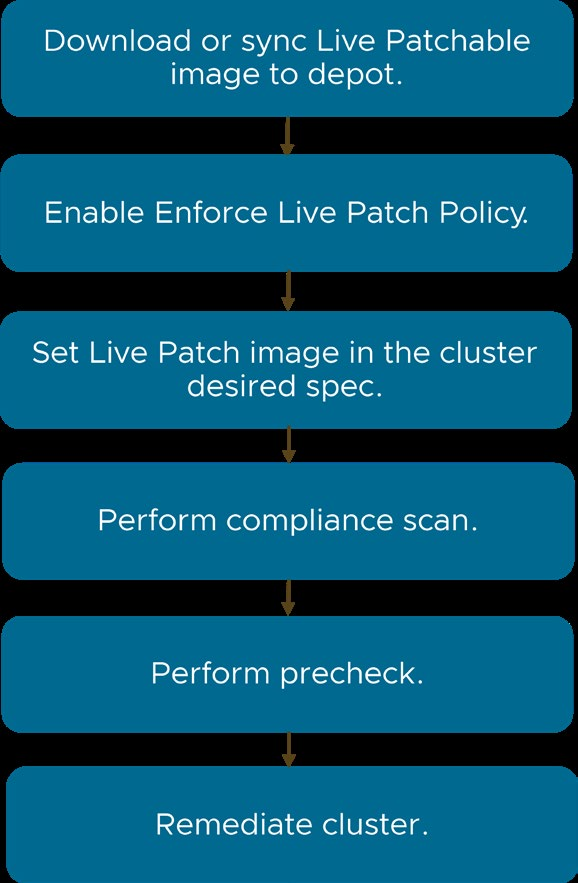
🧠 Live Patch Requirements
vCenter≥ 8.0 Update 3.ESX≥ 8.0 Update 3.Enforce Live Patchsetting مُفَعَّل في vLCM.DRSمُفَعَّل وَعَلى Fully Automated.- الـ Patch مُوسَّم كَـ
Eligible.
عَدَم تَوافُق:
- Hosts بِـ
TPM. - Hosts بِـ
DPU. - VMs تَستَخدِم
Direct Path I/O(يَجِب تَهجيرها أَو إِيقافها).
🧠 Live Patch Process
- الـ Patch يُحَمَّل في
vLCM Depot. - عِند التَّطبيق، يُنشَأ Mount Revision جَديد.
- الـ Patch يُثَبَّت عَلى الـ Mount الجَديد.
- Switch over مِن الـ Mount الأَصلي إِلى المُحَدَّث.
- الـ FSR (Fast Suspend Resume) يُعيد تَحميل
vmxprocess لِلـ VMs الجاريّة.
🧠 Live Patch Extension في ESX 9.0
- في
ESX 8.x: Live Patch يُغَطّي User-space وَ vmx فَقَط. - في
ESX 9.0: تَوَسَّع لِيَشمَل:- VMkernel
- NSX components (المُدمَجة الآن في ESX Image)
- أَكثَر Patches الآن مُؤَهَّلة لِـ Live Patch — تَقليل أَكبَر لِلصِّيانة.
- vLCM يُبَلِّغ عَن أَيّ خَدَمات تَحتاج Restart.
🧠 Enforce Live Patch Policy
- عِند التَّفعيل: vLCM يَسمَح فَقَط بِالـ Patches المُؤَهَّلة لِـ Live Patch.
- أَيّ Patch يَتَطَلَّب Maintenance Mode أَو Reboot يُمنَع.
- هَذا يُجبِر فَريق العَمَلِيّات على الالتِزام بِالنَّمط الجَديد.
6.7 Upgrade VMware Tools وَ VM Hardware
كُلّ إِصدار جَديد مِن ESX يَجلِب VMware Tools مُحَدَّثة (Bug fixes، Security patches، Drivers جَديدة) وَ VM Hardware جَديدة (vGPU، vNVMe، vSGX، vTPM). القاعِدة الذَّهَبيّة: Tools أَوَّلاً، Hardware ثانياً، وَفَقَط عِند الحاجة لِميزة جَديدة.
6.8 vCenter Reduced Downtime Upgrade — RDU
Upgrade vCenter كانَت تاريخيّاً تَعني انقِطاع طَويل. RDU غَيَّر اللُّعبة:
الأُسلوب الجَديد Migration-based. يُنشَر appliance جَديد، تُنسَخ البَيانات بَينَما القَديم
يَعمَل، ثُمَّ Switchover سَريع (تِلقائي أَو يَدَوي). الانقِطاع الفِعلي = دَقائِق بَدَلاً مِن
ساعات.
🧠 vCenter Reduced Downtime Upgrade — RDU
- الفِكرة: Upgrade
vCenterبِأَقَلّ انقِطاع مُمكِن. - الأُسلوب: Migration-based — لَيس in-place.
- الخُطوات:
- نَشر
vCenter Applianceجَديد (الإِصدار الجَديد). - نَسخ كُلّ البَيانات وَالتَّهيئة مِن القَديم لِلجَديد.
- أَثناء النَّسخ، vCenter القَديم يَظَلّ شَغّالاً!
- Switchover إِمّا تِلقائي أَو يَدَوي.
- نَشر
- مَدعوم لِـ:
- Self-managed vCenter.
- Non-self-managed.
- vCenter HA mode.
6.X · Deep Dive Concept Cards — مَا يَجِب أَن يَعرِفه مُهَندِس الـ Lifecycle
vLCM في VCF 9 هُوَ المُختَلَف الأَكبَر مُقارَنة بِالإِصدارات السّابِقة. اِفهَم Images، Live Patch، وَ RDU.
- Baselines (Legacy، VUM): طَبَقات patches. Host = ESX base + patch 1 + patch 2 + ... — Drift مَع الوَقت.
- Images (Modern، vLCM): Single desired state. Host = exactly this image (ESX + drivers + components). لا Drift.
- ESX Base Image: e.g.
ESX 9.0.0-12345678. - Vendor Add-On: Dell، HPE، Lenovo customizations.
- Firmware Add-On: BIOS/Firmware updates (مَع Hardware Support Manager).
- Components: Drivers، VIBs مُحَدَّدة (e.g. NSX vibs).
- Solutions: NSX، vSAN، HCX integration.
- Drift-Free كُلُّ Host في Cluster = نَفس Image.
- Atomic Apply يَنجَح كُلُّ شَيء أَو يَفشَل كُلُّ شَيء.
- Firmware Integration Update ESX + BIOS في عَمَلِيّة واحِدة.
- Predictability Image مُختَبَر في Test، يُطَبَّق على Prod حَرفيّاً.
Baselines اِنتَهَت. VCF 9 يَدعَم Images فَقَط. إذا قادِم مِن vSphere 7 مَع Baselines، يَجِب التَّحَوُّل إلى Images قَبل Upgrade.
تَحديث ESX بِدون reboot أَو even Maintenance Mode. الـ Host يَستَمِرّ في تَشغيل VMs أَثناء التَّحديث. مُمكِن فَقَط لِنَوع مُحَدَّد مِن Patches (security، minor updates).
- Patch يَحتَوي عَلى علامة "Live-Patchable".
- vLCM يُحَدِّد إذا Patch مُطابِق لِـ Live Patch criteria.
- Code Hot-Patching داخِل VMkernel مُباشَرة.
- VMs لا تَتَأَثَّر — لا Stun، لا Migration.
- Validation بَعد التَّحديث.
- Live Patch لا يَعمَل لِكُلِّ Update. Driver updates، Kernel changes كَبيرة تَحتاج Reboot.
- VMware يُحَدِّد ما هُوَ Live-Patchable — لَيس قَرارَك.
- Live Patch لا يُغَيِّر الـ "version" مِن نِظام التَّتَبُّع — يُضيف Patch ID.
- عَدَد مَحدود مِن Live Patches قَبل Required Reboot.
Security advisory critical — تَحتاج Patch خِلال 24 ساعة. Maintenance window لَن يَتَوَفَّر إلّا بَعد أُسبوع. Live Patch = Apply الآن، Reboot لاحِقاً مَع Standard Update.
RDU يُتيح Reimage Host في دَقائق — لَيس ساعات. مُهِمّ لِـ:
- إِضافَة Hosts كَثيرة في Cluster جَديد (Greenfield).
- Re-imaging Host بَعد Hardware failure.
- Standardizing Cluster بَعد drift طَويل.
- Host يُسَجَّل في Cluster كَـ "RDU-Ready".
- Image مُحَدَّد (مِن vLCM).
- Trigger Re-image: Host → RDU → Apply Image.
- vLCM يَنشُر Image عَبر iDRAC/iLO Virtual Media أَو PXE.
- Host يُعيد Boot مَع Image الجَديد.
- Auto-configure Network، join Cluster، Apply Settings.
- Total Time: ~15-30 دَقيقة لِـ Host واحِد.
Cluster جَديد بِـ 16 hosts. بِدون RDU: 16 × 3 ساعات (TK.1 manual) = 48 ساعة. مَع RDU: 16 × 30 دَقيقة (parallel) = 8 ساعات. وَفر 5 أَيّام عَمَل.
- Hardware Vendor Integration (Dell OpenManage Integration، HPE OneView).
- BMC/iDRAC reachable مِن SDDC Manager.
- Image جاهِز في vLCM مَع Vendor Add-On.
- Network مُعَدّ مُسبَقاً (Switches، VLANs، DHCP إذا PXE).
📝 Knowledge Check
Q1. In vSphere 9.0, baselines for cluster lifecycle management are:
Correct: C
vLCM in 9.0 uses images exclusively. Baselines are removed.
Q2. Which is the smallest packaging unit installed by vLCM?
Correct: C
Component = smallest unit, packaging VIBs. Components combine into base images, add-ons.
Q3. How many ESX images can be attached to a single cluster?
Correct: C
Up to 4 images per cluster — supports heterogeneous hardware.
Q4. Adding firmware/driver add-on requires:
Correct: B
Firmware/driver add-ons need the Hardware Support Manager plug-in for the relevant server family.
Q5. Where is the vLCM Image Depot located?
Correct: B
Image Depot lives on vCenter.
Q6. How does Broadcom now protect software downloads?
Correct: B
Single Broadcom site protected by per-customer authentication token.
Q7. Live Patch was introduced in:
Correct: C
Introduced in vSphere 8 Update 3.
Q8. Which is NOT a Live Patch requirement?
Correct: D
Live Patch is NOT compatible with TPM hosts or DPU hosts.
Q9. What does Fast Suspend Resume (FSR) do?
Correct: B
FSR reloads the vmx process for running VMs as part of Live Patch — non-disruptive.
Q10. Which VMs are NOT compatible with FSR?
Correct: B
Direct Path I/O VMs cannot use FSR — must be migrated, suspended, or powered off.
Q11. ESX 9.0 extends Live Patch coverage to:
Correct: C
ESX 9.0 extends Live Patch to VMkernel and NSX components.
Q12. What is the correct upgrade order?
Correct: B
Always upgrade VMware Tools BEFORE VM hardware.
Q13. What does vCenter Reduced Downtime Upgrade (RDU) do?
Correct: B
RDU = migration-based upgrade. New appliance deployed, data copied, then switchover (auto or manual). Old appliance stays online during copy.
صُندوق أَدَوات مُهَندِس VCF
المَعرِفة وَحدها لا تَكفي. أَنت تَحتاج أَدَوات جاهِزة تَستَخدِمها يَوميّاً: قَوائِم تَحَقُّق، قَوالِب، Playbooks لِلطَّوارئ، وَ runbooks لِلعَمَليّات المُتَكَرِّرة. هَذِه الوَحدة هِيَ ما يُحَوِّلك مِن «أَعرِف vCenter» إلى «أُدير بَيئة Production بِثِقَة».
- تَملِك مَكتَبة قَوالِب جاهِزة لِكُلِّ عَمَليّة VCF شائِعة.
- تَفهَم الأَنماط المُضادّة (Anti-Patterns) قَبل أَن تَقَع فيها.
- تَتَعَلَّم تَخطيط السَّعة (Capacity Planning) بِأَرقام، لا تَخمين.
- تَجهَز لِمُقابَلات VCF Admin بِأَسئِلَة حَقيقيّة.
TK.1 · ESX Host Onboarding Checklist
كُلَّما أَضَفت Host جَديد إلى Cluster، اِتبَع هَذِه القائِمة. تَجاهُل خُطوة واحِدة يُؤَدّي إلى ساعات Troubleshooting لاحِقاً.
Pre-Installation (قَبل إِدخال Hardware)
- تَأكَّد مِن HCL: Hardware مَدعوم لِـ ESX 9.0 (broadcom.com/vmware/hcl).
- سَجِّل Serial Number, Service Tag, MAC Addresses في CMDB.
- اِحجِز IP Addresses: Management, vMotion, vSAN, Backup, NSX TEP (5+ IPs).
- اِحجِز Hostname في DNS (Forward + Reverse).
- تَأكَّد مِن iDRAC/iLO/IPMI: شَبَكة مُنفَصِلة، كَلِمة سِرّ قَويّة، Firmware حَديث.
BIOS / Firmware Configuration
- Update BIOS/Firmware إلى آخِر إِصدار مُعتَمَد مِن HCL.
- Enable: VT-x, VT-d (Intel) أَو AMD-V, AMD-Vi (AMD).
- Enable: NX/XD bit (Execute Disable).
- Disable: Hyperthreading فَقَط إذا كانَت Compliance تَتَطَلَّب ذَلِك (L1TF mitigation).
- Set: Power Profile = "OS Control" (لِيُتيح ESX إِدارة الطّاقة).
- Boot Mode: UEFI (لَيس Legacy BIOS).
- Secure Boot: Enabled (مَع TPM 2.0 إذا مُتَوَفِّر).
ESX Installation
- Boot مِن USB / iDRAC Virtual Media مَع
VCF-Installer-9.0.x. - اِختَر Boot Device: USB internal أَو M.2 (لَيس HDD/SSD يُخَصَّص لِـ VMs).
- Set root password (مُتَوافِق مَع Password Policy).
- تَأَكَّد مِن الـ Reboot الكامِل.
Post-Install Configuration
- Configure Management Network: IP, Subnet, Gateway, DNS, NTP.
- Set Hostname (FQDN). تَأكَّد عَبر
esxcli system hostname get. - Test DNS:
nslookup hostnameمِن ESX shell. - Test NTP:
esxcli system time get— يَجِب أن تَتَطابَق مَع vCenter. - Enable SSH (مُؤَقَّتاً لِلتَّكوين، أَوقِفه لاحِقاً).
- Apply Lockdown Mode = "Normal" بَعد الانضِمام لِـ vCenter.
Add to vCenter
- اِنتَقِل إلى Cluster → Add Host.
- أَدخِل FQDN (لَيس IP — لِأَنَّ Certificates تَستَخدِم FQDN).
- اِقبَل Thumbprint بَعد التَّحَقُّق مِنه.
- اِنتَظِر Configure HA task — يَجِب أن يَنتَهي بِنَجاح.
Networking
- اِنقُل Host إلى VDS المُناسِب.
- Configure VMkernels: vMotion, vSAN, NSX TEP.
- Test كُلَّ VMkernel:
vmkping -I vmk1 <ip-of-another-host>. - تَأَكَّد مِن MTU (1500 لِـ Management، 9000 لِـ vMotion/vSAN).
Storage (إذا VSAN)
- Claim disks لِـ VSAN (Cache + Capacity).
- تَأَكَّد مِن انضِمام Host لِـ VSAN Cluster.
- Test:
esxcli vsan health cluster get.
Final Validation
- vSphere HA: Configured & Healthy.
- DRS: Connected, accepting recommendations.
- vMotion: Test مَع VM صَغير.
- Update Compliance: Image-based (vLCM) — يَتطابَق مَع Cluster Image.
- Add tags: Environment, Rack, Owner, MaintenanceWindow.
- أَوقِف SSH عِند الانتِهاء.
🧠 وَقت تَقديري
إِجمالي: 3-5 ساعات لِـ Host الواحِد (مَع الـ Hardware ready). إذا تَطَلَّب أَكثَر، شَيء خاطِئ في العَمَليّة — وَثِّق وَحَسِّن.
TK.2 · Patch / Update Playbook
T-14 days · التَّخطيط
- راجِع VMware Security Advisories (VMSA) لِلشَّهر.
- اِفحَص Release Notes — أَيُّ KB warnings؟
- اِفتَح Change Request في ITSM.
- أَخبِر فَريق التَّطبيقات بِنَوافِذ المَوافَقة.
T-7 days · الاختِبار في Dev/Test
- Apply Patch على Test Cluster (نُسخَة مُصَغَّرة مِن Production).
- اِترُك 5-7 أَيّام مُراقَبة.
- راقِب: Aria Operations alerts، vCenter events، أَداء VMs.
T-1 day · الاِستِعداد
- تَأَكَّد مِن Backup ناجِح لِـ vCenter (VCSA snapshot أَو File-Based Backup).
- تَأَكَّد مِن Health:
cluster health،vsan health،HA admission control. - تَأَكَّد مِن DRS = Fully Automated.
- تَأَكَّد مِن Capacity: على الأَقَلّ N+1 Host احتِياط (يُمكِنُك خَسارة host واحِد بِدون ضَغط).
- Communication: أَرسِل Reminder قَبل 24 ساعة.
T-0 · التَّنفيذ
- Pre-check: Cluster → Updates → Run pre-check.
- اِبدَأ Remediation. اِترُك vLCM يَختار التَّسَلسُل (Rolling).
- راقِب كُلَّ Host: Maintenance Mode → Update → Reboot → Exit MM.
- إذا Host واحِد فَشَل، أَوقِف الـ Remediation وَحَلِّل قَبل الاستِمرار.
T+1 · ما بَعد التَّنفيذ
- تَأَكَّد مِن Compliance: 100٪ Compliant.
- اِفحَص VMs الحَسّاسة (Critical applications) — هَل تَعمَل؟
- اِفحَص Aria Operations: لا alerts جَديدة.
- أَغلِق Change Request بِنَجاح.
- وَثِّق: ما الَّذي تَمَّ، ما المُشكِلات، ما الدُّروس.
⚠ Anti-Pattern: "Patch on Friday"
لا تُحَدِّث Production في Friday. إذا فَشَل شَيء، Team Support أَقَلّ في عُطلة الأُسبوع. الأَفضَل: Tuesday/Wednesday morning، Team كامِل مُتاح.
TK.3 · VM Build Standard Template
كُلُّ VM في بَيئتك يَجِب أن تَتبَع نَفس المَعايير. هَذا القالَب يُلَخِّص الحَدّ الأَدنى المَطلوب:
=== STANDARD VM BUILD TEMPLATE — Version 9.0 ===
1. IDENTITY
1.1 VM Name : [Project-Role-Env-NN] e.g. CRM-WEB-PRD-01
1.2 Folder Location : /Datacenter/VMs/[Project]/[Env]
1.3 Tags : Env, Owner, CostCenter, AppOwner, SLA-Tier
1.4 Notes : Owner email, Service Now CI, deployment date
2. HARDWARE
2.1 vCPU : Start with 2 vCPU (right-size after monitoring)
2.2 vRAM : Start with 4 GB (right-size after monitoring)
2.3 CPU/Mem Reservations : NONE (unless critical workload)
2.4 Cores Per Socket : Match physical NUMA topology
2.5 vNUMA : Auto (let ESX decide unless VM > 8 vCPU)
2.6 Hot-Add CPU/Memory : Enabled (allows growth without reboot)
3. STORAGE
3.1 Provisioning : Thin (unless DB workload — then Eager-Zeroed Thick)
3.2 Storage Policy : SPBM policy matching SLA tier
3.3 Disk Layout :
- Disk 1: OS (40 GB minimum)
- Disk 2: Apps / Pagefile / Swap (separate)
- Disk 3+: Data (separate, easier backup)
3.4 SCSI Controller : Paravirtual (PVSCSI) for data disks
3.5 Multi-Writer Flag : OFF (only enable for cluster shared disks)
4. NETWORK
4.1 Adapter Type : VMXNET3 (NEVER E1000)
4.2 Port Group : Distributed Port Group on VDS
4.3 Number of NICs : 1 unless VM is gateway/load balancer
4.4 VLAN : From IPAM, documented
5. OPERATING SYSTEM
5.1 Guest OS Type : Set correctly (RHEL 9, Win Server 2022, etc.)
5.2 VMware Tools : Open VM Tools (Linux) or VMware Tools (Windows)
5.3 Time Sync : NTP from VM, NOT from ESX host (avoid drift)
5.4 Page File / Swap : Separate disk, not on OS disk
6. SECURITY
6.1 Encryption : SPBM policy if SLA = High
6.2 vTPM : Required for Win11, Win Server 2025
6.3 Secure Boot : Enabled
6.4 Console Access : Restrict via Role-Based Permissions
7. BACKUP
7.1 Backup Job : Assigned in Veeam/CommVault/etc.
7.2 Backup SLA : RPO + RTO documented
7.3 Snapshot Policy : MAX 24 hours, MAX 2 snapshots active
7.4 Backup Verification : Test restore quarterly
8. LIFECYCLE
8.1 Owner Email : Required
8.2 Cost Center : Required for chargeback
8.3 Deletion Date : For temp VMs, must be set
8.4 Renewal Review : Annual ownership confirmation
=== END TEMPLATE ===
TK.4 · Cluster Design Worksheet
قَبل أن تَبنِي Cluster، أَجِب على هَذِه الأَسئِلة. الإِجابات تُحَدِّد كُلَّ القَرارات اللاحِقة:
- كَم VM مُتَوَقَّع في 1 سَنَة؟ 3 سَنَوات؟
- ما مَتَوَسِّط VM: vCPU؟ vRAM؟ Storage؟
- ما Peak VM (الأَكبَر)؟ — يُحَدِّد الحَدّ الأَدنى لِـ Host RAM.
- هَل هُناك Mission-Critical workloads تَتَطَلَّب FT أَو HA-Priority؟
- هَل التَّطبيقات Latency-Sensitive؟ (تَحتاج Reservation أَو CPU Affinity؟)
- RTO = ? (Recovery Time Objective) → يُحَدِّد HA configuration.
- RPO = ? (Recovery Point Objective) → يُحَدِّد Backup/Replication frequency.
- هَل DR site مَطلوب؟ → يُحَدِّد vCenter Linked Mode، NSX Federation.
- ما الـ Maintenance Window المُتاح؟ → يُحَدِّد Live Patch vs Standard Reboot.
الحِساب الأَساسي:
Hosts Required = ROUNDUP[ (Total vCPU + Total RAM + Total Storage) /
(Host capacity × Target utilization) ] + N (HA reserve)
مَثَلاً: 100 VM × (2 vCPU, 4 GB) = 200 vCPU, 400 GB RAM
Host: Dell R760 (32 cores × 2 = 64 cores, 512 GB RAM)
Target utilization: 70% (لِترك مَجال نُمو وَ peaks)
Cores needed: 200 / (64 × 0.7) = 4.5 → 5 hosts
RAM needed: 400 / (512 × 0.7) = 1.1 → 2 hosts
الحَدّ الحاكِم: CPU → 5 hosts
+ N=1 (HA): 5 + 1 = 6 hosts minimum
+ Growth (20%): 7 hosts recommended
- عَدَد VMNICs لِكُلِّ Host: 4 × 25 GbE (مِعياري) أَو 2 × 100 GbE (high-end).
- Traffic Separation: Management + vMotion + vSAN + VM Traffic + NSX TEP.
- MTU: 1500 (Mgmt) / 9000 (vMotion, vSAN, NSX).
- LAG/LACP: مَع switches داعِمة فَقَط.
| المُكَوِّن | المُواصَفة |
|---|---|
| Hosts | 6 × Dell PowerEdge R760 |
| CPU | 2 × Intel Xeon Gold 6438Y+ (32C / 64T each) |
| RAM | 512 GB DDR5 ECC |
| NVMe | 4 × 7.68 TB Gen4 NVMe (لِـ vSAN ESA) |
| NICs | 2 × 100 GbE Mellanox ConnectX-6 (LACP) |
| Boot | 2 × 480 GB M.2 SSD (BOSS-N1 mirror) |
| Total VMs | ~150-200 (مَع نُمو لِـ 3 سَنَوات) |
TK.5 · Troubleshooting Decision Tree
عِندَما يَشتَكي مُستَخدِم مِن «VM بَطيئة»، اِتبَع هَذا التَّسَلسُل:
Layer 1: Guest OS (داخِل VM)
- هَل GuestOS يُظهِر High CPU/Memory؟ — Task Manager، top، htop.
- هَل هُناك runaway process؟
- هَل antivirus scan قَيد التَّشغيل؟
- هَل OS swap نَشِط؟ — يَعني RAM غَير كافٍ.
- إذا نَعَم لِأَيٍّ مِنها: المُشكِلة في GuestOS، لَيس VCF.
Layer 2: VM Configuration
- هَل vCPU كافٍ؟ — اِفحَص %RDY في esxtop (> 5% مُشكِلة).
- هَل vRAM كافٍ؟ — اِفحَص Memory Balloon، Swap (يَعني VM يَستَخدِم Swap).
- هَل VM يَعمَل على vNUMA صَحيح؟ — VMs > 8 vCPU، تَحَقَّق.
- هَل VMware Tools حَديث؟ — قَديم = drivers قَديمة.
- هَل هُناك Snapshots نَشِطة؟ — قَديمة = Performance ↓.
Layer 3: ESX Host
- هَل Host مُحَمَّل بِشِدّة؟ — vCenter → Performance → CPU Ready.
- هَل DRS مُتَوازِن؟ — إذا VM واحِدة على Host مَشغول، DRS يَنقُلها.
- هَل هُناك Memory Pressure؟ — High Ballooning, Compression, Swap.
- هَل Host في Maintenance Mode تَدريجيّاً؟
Layer 4: Storage
- اِفحَص Datastore Latency (vCenter → Performance → Datastore).
- Read Latency أَكبَر مِن 20ms = مُشكِلة.
- Write Latency أَكبَر مِن 30ms = مُشكِلة.
- اِفحَص vSAN Health (إذا VSAN).
- اِفحَص Queue Depth في HBA.
Layer 5: Network
- Network Latency بَين VM وَالـ Client؟
- Packet Drops على vNIC أَو pNIC؟
- NIOC saturation؟
- NSX DFW rule يُبطِئ شَيء؟
🧠 80/20 Rule
80٪ مِن مَشاكِل «VM بَطيئة» في GuestOS أَو Storage. ابدَأ هُناك. تَجَنَّب البَحث في Network قَبل التَّحَقُّق مِنها.
TK.6 · Capacity Planning Spreadsheet
التَّخطيط الجَيِّد يَمنَع 90٪ مِن الإِنذارات. اِتبَع هَذا النَّموذَج رُبعِيّاً:
| المَورِد | الحالي | 3 شُهور | 6 شُهور | 1 سَنَة | الإِجراء |
|---|---|---|---|---|---|
| CPU Used (avg) | 62% | 68% | 75% | 85% | اِبدَأ تَخطيط Host جَديد |
| RAM Used (avg) | 78% | 85% | 92% | ~100% | 🔴 شِراء RAM فَوراً |
| Storage Used | 65% | 72% | 80% | 92% | 🟡 طَلب أَقراص في Q3 |
| VM Count | 180 | 200 | 225 | 270 | عادي، Cluster كافٍ |
| Snapshots Old | 12 | ? | ? | ? | 🟡 سياسة تَنظيف |
| HA Reserve | N+1 (1 host) | N+1 | N+1 | N+2 needed | اِشترِ host إضافي |
القاعِدة الذَّهَبيّة لِـ Capacity:
- 🟢 70% utilization → عادي، مُريح.
- 🟡 80% utilization → ابدَأ التَّخطيط لِلتَّوسِعة.
- 🔴 90% utilization → في خَطَر، تَنفيذ فَوري مَطلوب.
- ⛔ 95%+ → إِجراء طارِئ، VMs ستَبدَأ بِالتَّأَثُّر.
TK.7 · Top 10 VCF Admin Anti-Patterns
1. The Snapshot Hoarder
«سَأَترُك Snapshot كَـ Backup». Snapshots لَيست backups — هِيَ Delta files تَستَهلِك Storage بِسُرعة وَتُبطِئ VM. قاعِدة: أَقصى عُمر snapshot = 24 ساعة، أَقصى عَدَد = 2.
2. The Reservation Junkie
«سأَحجِز كُلَّ الـ RAM لِكُلِّ VM لِضَمان الأَداء». Reservations تَقتُل DRS وَتَمنَع overcommit. اِستَخدِمها فَقَط لِـ Critical VMs، وَ توثيق السَّبَب.
3. The Mega-VM Builder
«اِبنِ لِي VM بِـ 32 vCPU». الـ Wider VM، الأَصعَب على DRS تَوزيعُها، وَالأَعلى احتِمال CPU Ready. ابدَأ صَغير، اِنمُ تَدريجيّاً.
4. The "I'll Document Later"
«مَعروف، سأكتُبه لاحِقاً». لا. وَثِّق فَوراً عَبر Tags، Annotations، Wiki. الأَسوَأ: مِعماري يَترُك الشَّركة بِدون وَثائِق.
5. The Lone Wolf Admin
«لا أَحتاج Change Process، أَعرِف ما أَفعَل». حَتّى الخُبَراء يُخطِئون. كُلُّ تَغيير في Production يَمُرّ بِـ Change Approval، حَتّى لَو بَدا تافِهاً.
6. The Patch Avoider
«ESX يَعمَل، لِماذا أُحَدِّث؟». لِأَنَّ Security Patches تُغلَق Vulnerabilities. لَم تُحَدِّث = بَيئَتك مَكشوفة.
7. The Single Datastore Hero
«كُلُّ شَيء على Datastore واحِد كَبير». = Single Point of Failure. اِفصِل: OS، Data، Logs، Swap على Datastores مُختَلِفة.
8. The Permissions Sprawler
«أَعطِيه Admin، أَسهَل». لا. اِستَخدِم Role-Based Access. كُلُّ مُستَخدِم يَحصُل عَلى أَقَلّ صَلاحيّة يَحتاجها (Least Privilege).
9. The Monitoring Skipper
«vCenter يُريني كُلَّ شَيء». لا. اِستَخدِم Aria Operations لِلـ Trends، Skyline لِلـ Proactive Health، Log Insight لِلـ Logs. كُلٌّ مِنها يَكشِف ما الآخَر يَخفي.
10. The Backup Trust Faller
«Backup يَعمَل، لا حاجَة لِلاختِبار». لا. Test Restore شَهرِيّاً عَلى الأَقَلّ. Backup لَم يُختَبَر = Backup لَم يَنجَح.
TK.8 · VCF Admin Interview Prep — Real Questions
Technical (Concepts)
- اِشرَح الفَرق بَين
HAوَFTوَDRS. مَتى تَستَخدِم كُلَّ واحِد؟ - ما الَّذي يَحدُث تَقَنيّاً عِند تَنفيذ
vMotion؟ - اِشرَح
SPBM— Storage Policy-Based Management. - ما الفَرق بَين
vDSوَvSS؟ مَتى تَختار كُلّاً مِنهُما؟ - اِشرَح
vLCM ImagevsvLCM Baseline. - كَيف يَعمَل
HA Admission Control؟ ما خِياراتُه؟
Operational (Real Work)
- VM يُعطي High CPU Ready. كَيف تُحَلِّل؟
- Cluster بَدَأ يَتَلَقّى تَنبيهات «Datastore Latency Above 30ms». ما الخُطُوات؟
- Host لا يَخرُج مِن Maintenance Mode. ما الأَسباب المُحتَمَلة؟
- VM Boot loop بَعد Snapshot Revert. ما العَمَل؟
- vCenter لا يَتَّصِل. كَيف تَستَعيد؟
Architectural (Design Thinking)
- عَميل عِندَه 500 VM وَيُريد VCF — كَيف تُصَمِّم Cluster Topology؟
- كَيف تَختار بَين vSAN OSA vs ESA؟
- عَميل يُريد Stretched Cluster بَين Datacenters على بُعد 50 كم — ما المُتَطَلَّبات؟
- كَيف تَخطُط لِـ DR Site؟ ما الـ RPO/RTO المُمكِنة؟
Behavioral
- اِخبِرني عَن أَكبَر Outage تَعامَلت مَعَه — ماذا تَعَلَّمت؟
- اِخبِرني عَن خِلاف مَع فَريق التَّطبيقات — كَيف حَلَلتَه؟
- كَيف تُقَرِّر بَين إِيقاف خِدمة لِـ Patch vs الانتِظار؟
- كَيف تَبقى مُحَدَّثاً مَع VCF roadmap؟
🧠 Interview Wisdom
أَفضَل إِجابة لِأَيّ سُؤال تِقَني هِيَ: «دَعنا نَعتَبِر السِّياق… [اِفتَرِض جَيِّداً] … ثُمَّ أَقتَرِح [حَلّ] لِأَنَّ [سَبَب] مَع التَّحَفُّظ على [مَخاطِر]». الـ Junior يُجيب بِلا سِياق. الـ Senior يَسأَل قَبل أن يُجيب.
TK.9 · Daily / Weekly / Monthly Operational Checklist
| التَّكرار | المُهِمّة | كَيف |
|---|---|---|
| Daily | راجِع Aria Operations Critical Alerts | Dashboard أَوَّل شَيء صَباحاً |
| راجِع Backup Jobs Last Night | Veeam / CommVault dashboard | |
| راجِع vCenter Tasks (Failed) | vCenter → Tasks → Failed last 24h | |
| راجِع Skyline Findings | VMware Skyline portal | |
| Weekly | اِفحَص vSAN Health | vCenter → Cluster → vSAN → Skyline Health |
| اِفحَص HA Admission Control | Cluster → Configure → vSphere HA | |
| اِحذِف Snapshots > 7 أَيّام | vCenter → Storage → اِبحَث snapshots | |
| راجِع DRS Recommendations | Cluster → Monitor → DRS | |
| Monthly | Patch Cluster (vLCM) | اِتبَع TK.2 Playbook |
| Test Restore (Backup) | اِختَر VM عَشوائيّة وَ Restore لِلـ Test env | |
| راجِع Capacity | Aria Operations Capacity Dashboard | |
| راجِع Permissions | تَأَكَّد لا يُوجَد مُستَخدِمون مُغادِرون | |
| Quarterly | DR Failover Test | اِختَبِر Failover إلى DR site |
| راجِع Licenses | تَأَكَّد لا تَجاوُز، خاصَّة Core Count | |
| اِستَعرِض Architecture مَع Team | هَل ما زالَ مُناسِباً؟ | |
| Yearly | تَحديث Documentation | Diagrams، Runbooks، Contacts |
| راجِع Vendor Roadmap | اِجتِماع مَع Broadcom TAM |
TK.10 · A Day in the Life of a VCF Admin
- 08:00 — قَهوة. Open Aria Operations dashboard. أَيُّ critical alerts؟
- 08:15 — Stand-up مَع Team (15 دَقيقة). Yesterday / Today / Blockers.
- 08:30 — Ticket: Application owner يَقول «VM x بَطيئة». اِبدَأ TK.5 troubleshooting tree.
- 09:30 — Found it: CPU Ready 12% بِسَبَب 16-vCPU VM على Host مَشغول. DRS attempted to migrate لَكِنَّه مُعَلَّم Affinity. اِتَّصِل بِالمالِك، اِقتَرِح إِزالَة Affinity.
- 10:30 — Patching window planning meeting. اِتفِق على Window الجُمعة 22:00.
- 11:30 — Pre-patch checks لِـ Friday: vCenter backup ✓، Cluster health ✓.
- 12:30 — Lunch.
- 13:30 — Project work: تَصميم Cluster جَديد لِـ Marketing Department. اِفتَح Capacity Worksheet (TK.4).
- 15:00 — Ticket: Developer يَحتاج VM جَديدة لِـ Demo. اِبنِ مِن Template، تَطبيق TK.3.
- 15:30 — Change Advisory Board meeting: نُناقِش proposed network change.
- 16:30 — Documentation: تَوثيق Bug found في Monday + Workaround.
- 17:00 — Review tomorrow's calendar. أَغلِق Laptop.
🧠 ما هَذا اليَوم يَكشِف
- VCF Admin يَعمَل 30٪ Troubleshooting، 30٪ Planning/Design، 20٪ Patching/Maintenance، 20٪ Communication/Documentation.
- الكِبار في هَذا المَجال يُمضون وَقتاً أَكثَر في Planning وَ أَقَلّ في Troubleshooting. السَّبَب؟ التَّخطيط الجَيِّد يَمنَع المُشكِلات.
- أَقَلَّ مِن 10٪ مِن اليَوم على Keyboard. الباقي على Meetings، Documentation، Thinking.
سيناريوهات حَقيقيّة مِن DataCenter
قَرَأت كُلَّ Module، فَهِمت كُلَّ مَفهوم. لَكِن السُّؤال الحَقيقي: ماذا تَفعَل صَباح الإِثنَين عِندَما يَدخُل CIO وَيَقول: «نَحتاج Cluster جَديد لِـ DR Site خِلال 60 يَوم»؟ هَذِه الوَحدة تَأخُذُك خِلال خَمسة سيناريوهات مُتَكامِلة — كُلٌّ مِنها يُحاكي مَوقِفاً حَقيقيّاً يَواجِهه VCF Admin.
- تَرى كَيف تَتَرابَط ESX، vCenter، Networking، Cluster Services في مَشروع حَقيقي.
- تَفهَم كَيف تَتَّخِذ قَرارات تِقَنيّة تَحت ضَغط الوَقت وَالمَوارِد.
- تَتَعَلَّم تَحويل لُغة الأَعمال إلى قَرارات تِقَنيّة قابِلة لِلتَّنفيذ.
- تَكتَسِب حِسّاً عَن مَتى تَختَصِر وَمَتى تُعَمِّق.
SC.1 · Greenfield Cluster Build
الخَلفيّة: شَركة اِتِّصالات اِفتَتَحَت فَرعاً جَديداً. تَحتاج بَيئة VCF لِـ 100-150 VM. الفَرع لَدَيه DataCenter صَغير (12U rack). الجَدوَل: 60 يَوم مِن الـ PO إلى Production-ready. الـ CTO يُريد «شَيء يَعمَل، لا تُعَقِّد الأُمور».
الخَطَأ الشّائِع
❌ Admin ضَعيف
- يَطلُب نَفس Hardware الَّذي في HQ.
- يَنسَخ Cluster Design الحالي حَرفيّاً.
- يَنسى DR Plan.
- يَتَجاهَل Networking — «سَنَتَدَبَّر».
- لا Documentation حَتّى نِهاية المَشروع.
✅ Admin مُحتَرِف
- يَبدَأ بِـ TK.4 Capacity Worksheet — يَفهَم الاِحتِياج الحَقيقي.
- يُصَمِّم لِلفَرع، لا لِـ HQ. (الفَرع أَصغَر، أَبسَط).
- يَخطُط DR مَع HQ مِن اليَوم الأَوَّل.
- يَستَخدِم Reference Architecture مِن Broadcom.
- يُوَثِّق كُلَّ قَرار في ADR.
Week 1-2: Planning & Procurement
- Capacity Plan: 4 hosts initially (3 + 1 HA reserve)، نُمو لِـ 6 hosts خِلال سَنَة.
- Reference Architecture: Dell VxRail VVF Ready (أَو DIY مِن Dell R760).
- Networking Design: 2 × 100 GbE per host، LACP، VDS مَع 8 Port Groups.
- IPAM Allocation: VLAN allocations، VMK IPs، VM IPs.
- Licensing: VVF Core Pack — 4 hosts × 32 cores = 128 cores.
- Quotation مِن Broadcom + Dell.
- Submit PO، expected delivery: 21 يَوم.
Week 3-5: Hardware Receive & Rack
- Receive وَ inspect: تَأَكَّد مَع packing list.
- Rack hosts: U16-U23 (4 hosts × 2U each).
- Cabling: Power dual feed، Network LACP، iDRAC management.
- BIOS/Firmware update لِلجَميع.
- iDRAC configuration: IP، password، SNMP, syslog.
Week 6: ESX Installation
اِتبَع TK.1 Onboarding Checklist لِكُلِّ Host. Hosts الأَربَعة في يَوم واحِد إذا كانَ كُلُّ شَيء جاهِزاً.
Week 7: vCenter Deployment
- Deploy VCSA 9.0 على Host #1 (أَوَّل host فَقَط).
- Configure SSO: domain جَديد
branch.localأَو الانضِمام لِـ HQ Enhanced Linked Mode. - Create Datacenter وَ Cluster.
- Add باقي Hosts.
- Configure VDS، VMkernels.
- Configure HA + DRS (Fully Automated, Conservative initially).
Week 8: Validation Testing
- vMotion اِنقُل test VM بَين كُلِّ pair مِن hosts (6 tests for 4 hosts).
- HA أَوقِف Host فَجأة — تَأَكَّد VMs تَنتَعِش.
- DRS اِسبِق Host واحِد، راقِب DRS rebalancing.
- Storage بَنشمارك Latency تَحت حِمل.
- Network Test failover بِفَصل uplink واحِد.
- Power Loss Test اِفصِل feed كَهرَباء — UPS يَعمَل؟ Graceful shutdown؟
Week 9: First Production VMs
- Deploy First Production VM — low-criticality (Internal Wiki).
- راقِب لِأُسبوع كامِل: Alerts، Performance، Backup.
- إذا OK، اِبدَأ migration plan لِبَقيّة VMs.
القَرار المِعماري المِفتاحي
المُشكِلة: هَل نَستَخدِم Enhanced Linked Mode (ELM) مَع vCenter في HQ؟
القَرار: نَعَم، لِلأَسباب التّالية:
- إِدارة مُوَحَّدة — مَنظَر واحِد لِجَميع البَيئات.
- Roles وَ Permissions مَركَزيّة.
- Cross-vCenter vMotion مُمكِن لِـ DR.
الـ Trade-off: Network dependency بَين الفَرع وَ HQ يَجِب أن تَكون stable.
الـ Mitigation: Each vCenter مُستَقِل في حالات الانقِطاع — VMs تَستَمِرّ.
الدُّروس المُستَفادة
- التَّخطيط = 60٪ مِن النَّجاح. Week 1-2 يُنقِذ Week 5-9.
- اِبدَأ صَغير، اِنمُ تَدريجيّاً. 4 hosts كافٍ لِلبَدء.
- Reference Architectures مَوجودة لِسَبَب. لا تُعيد اختِراع العَجَلة.
- Test كُلَّ شَيء قَبل Production. أَوَّل VM في Production لَيست أَوَّل اختِبار.
SC.2 · Major Upgrade Campaign
الخَلفيّة: شَركة تَأمين كَبيرة، 4 Clusters (Production, DR, Test, Dev) عَلى vSphere 7.0 U3. Broadcom أَعلَنَت end-of-support لِـ vSphere 7 خِلال 12 شَهراً. الإِدارة طَلَبَت Upgrade إلى VCF 9.0 خِلال 6 أَشهُر.
التَّحَدّيات
- Hardware Compatibility: 8 hosts قَديمة مِن 30 لا تَدعَم VCF 9.
- Licensing: التَّحَوُّل مِن Perpetual إلى Subscription — تَفاوُض مَع Broadcom.
- Downtime: Production لا يَتَحَمَّل أَكثَر مِن 2 ساعات في الشَّهر.
- Skills: الفَريق لَم يَعمَل مَع vLCM Images.
- Backup Vendor: يَحتاج certifying لِـ VCF 9 — قَيد التَّحَقُّق.
الاِستِراتيجيّة — Wave-Based Approach
بَدَلاً مِن Upgrade كُلِّ شَيء مَرَّة، نُنَفِّذ على 4 موجات، تَتَعَلَّم كُلُّ موجة مِن السّابِقة.
| Wave | Cluster | الجَدوَل | الهَدَف |
|---|---|---|---|
| 1 | Dev (4 hosts) | Month 1 | تَعلُّم — لا مَخاطِر |
| 2 | Test (6 hosts) | Month 2-3 | Validation تَحت حِمل حَقيقي |
| 3 | DR (10 hosts) | Month 4 | قَبل Production لِيَكون جاهِزاً |
| 4 | Production (10 hosts) | Month 5-6 | التَّنفيذ المَدروس |
Month 1: Wave 1 — Dev Cluster
- Replace 2 hosts قَديمة بِجَديدة مَدعومة.
- Backup vCenter (VCSA snapshot + File-Based Backup).
- Upgrade vCenter أَوَّلاً (lower version)، vCenter دائِماً أَوَّل.
- Build vLCM Image (ESX 9 + Driver Bundle + Vendor Add-ons).
- Apply Image إلى Cluster.
- Rolling host upgrade — يَأخُذ كُلّ host ~90 دَقيقة.
- Validate VMs، vMotion، Snapshots، HA.
- Documentation: ما المُشكِلات، الـ Workarounds، الـ Timing الفِعلي.
Month 2-3: Wave 2 — Test Cluster
تَطبيق الدُّروس مِن Wave 1. اِختِبار:
- NSX compatibility (إذا مُستَخدَم).
- Backup vendor (Veeam أَو CommVault) certification on VCF 9.
- Monitoring tools (Aria Operations) compatibility.
- VM Tools auto-upgrade.
Month 4: Wave 3 — DR Site
DR Site تَجِب أن تَكون عَلى نَفس Version أَو أَحدَث مِن Production. لِذَلِك DR أَوَّلاً، Production ثانياً. إذا حَدَث Disaster خِلال الـ Window، DR تَستَطيع اِستِقبال Production 7 (older version) عَلى VCF 9 — backward compatibility مَدعومة.
Month 5-6: Wave 4 — Production
- Production Upgrade Plan مَع كُلِّ Application Team — تَواريخ مُعتَمَدة.
- Each weekend: 2 hosts (rolling).
- كُلُّ host: vMotion VMs out → Maintenance Mode → Upgrade → Reboot → Exit MM → VMs back.
- اِفحَص بَين كُلِّ host: alerts، performance.
- إذا أَيُّ مُشكِلة، اِستَخدِم vLCM Live Patch (إذا مُتاح) أَو Rollback.
القَرار المِعماري المِفتاحي
المُشكِلة: هَل نُحَدِّث vCenter أَوَّلاً مَرَّة واحِدة، أَم نَحتَفِظ بِـ Multiple vCenters لِكُلِّ Wave؟
القَرار: vCenter واحِد، Upgrade مَرَّة واحِدة في الأَوَّل.
السَّبَب: vCenter 9 يُدير ESX 7 وَ ESX 9 في نَفس البَيئة (N-2 compatibility). هَذا يُتيح Migration تَدريجي.
الـ Trade-off: إذا فَشَل Upgrade vCenter، كُلُّ شَيء يَتَوَقَّف. لِذَلِك Backup كامِل قَبل، وَ Maintenance Window 4 ساعات لِـ Rollback إذا لَزِم.
الدُّروس المُستَفادة
- Hardware Refresh دائِماً قَبل Software Upgrade. لا تَكُن مُجبَراً عَلى Replace في مُنتَصَف الـ Project.
- Wave-Based ينَقذ. Wave 1 كَشَفَت مَشاكِل سَتَكون كارِثة في Wave 4.
- Communication مَع App Teams مُبَكِّر. 6 أَشهُر يَعني خِطّة، لَيس Surprise.
- Rollback Plan ضَروري لِكُلِّ Step. «نَأمَل أَن يَعمَل» لَيست خِطَّة.
SC.3 · Network Migration to VDS
الخَلفيّة: Cluster قَديم اِستَخدَم vSphere Standard Switches (vSS) لِسَنَوات. الـ Architect الجَديد طَلَب التَّحَوُّل إلى VDS لِـ Consistent Configuration، NIOC، وَ NSX Readiness. التَّحَدّي: لا Downtime مَسموح بِه.
لِماذا VDS؟
| الميزة | vSS | VDS |
|---|---|---|
| Scope | Per-Host | Cluster-wide (مُتَطابِق) |
| Configuration | اِنسَخ يَدَوياً لِكُلِّ Host | مَرَّة واحِدة |
| NIOC | ❌ | ✅ Traffic shaping |
| LBT (Load-Based Teaming) | ❌ | ✅ |
| NSX Required | ❌ Not supported | ✅ Mandatory |
| Port Mirroring | محدود | ✅ Full |
| Health Checks | ❌ | ✅ MTU، VLAN |
Migration Strategy — Per-Host Approach
- Build VDS Empty: Create VDS مَع نَفس Port Groups كَـ vSS (نَفس VLAN IDs، نَفس MTU).
- Add Host to VDS: Cluster → VDS → Add Host. لا تَنقُل VMNICs بَعد!
- Migrate Unused VMNIC First: إذا host لَدَيه 4 VMNICs (2 used على vSS، 2 idle)، اِنقُل 1 idle VMNIC إلى VDS.
- Migrate VMkernels One-by-One: vMotion VMK أَوَّلاً (less risk). تَأَكَّد بَين كُلِّ خُطوة: vmkping يَعمَل.
- Migrate VMs Port Groups: Network Migration Wizard — اِختَر VMs، اِختَر VDS Port Group destination. هَذا live، بِدون VM downtime.
- Migrate Remaining VMNIC: عِندَما لا VM على vSS، اِنقُل آخِر VMNIC.
- Cleanup: اِحذِف vSS مِن Host.
- Repeat لِكُلِّ Host في Cluster.
الخَطَأ الَّذي يَجِب تَجَنُّبه
⚠ Anti-Pattern: «اِنقُل كُلَّ VMNICs مَرَّة واحِدة»
إذا اِنقَلَبَ شَيء، تَفقِد كامِل Host network. الـ Host يُصبِح orphaned — vCenter لا يَراه، لا تَستَطيع Login عَبر vSphere Client. الحَلّ الوَحيد: DCUI أَو KVM. دائِماً اِنقُل VMNIC واحِدة في كُلِّ مَرَّة، اِترِك واحِدة على vSS كَـ failover.
Validation بَعد كُلِّ Host
- VMK Ping Test — كُلُّ vmkping بَين Hosts يَنجَح.
- VM Connectivity — اِختَبِر VM واحِدة على كُلِّ Port Group.
- vMotion Test — اِنقُل VM إلى/مِن Host المَنقول.
- HA Heartbeat — تَأَكَّد HA Status = Connected.
- Health Check — اِفعَل VDS Health Check (MTU + VLAN) لِـ 10 دَقائق.
Time Estimation
- Per Host: 30-45 دَقيقة (مَع Validation).
- Cluster 10 Hosts: ~6-8 ساعات (يَوم كامِل، مَع Buffer).
- اِخطُط Window مِن 12 ساعة لِلسَّلامة.
القَرار المِعماري المِفتاحي
المُشكِلة: كَم VDS نَحتاج؟ واحِد لِكُلِّ Cluster، أَم واحِد كَبير لِجَميع Clusters؟
القَرار: VDS واحِد لِكُلِّ Cluster.
السَّبَب: Blast Radius — إذا فَشَل VDS، يُؤَثِّر فَقَط على Cluster واحِد، لَيس كُلَّ البَيئة.
الاِستِثناء: Cross-vCenter NSX يَتَطَلَّب VDS مُشتَرَك — هَذا حالة خاصَّة.
SC.4 · VM Sprawl Cleanup
الخَلفيّة: شَركة كَبيرة، 5 سَنَوات مِن نُمو VCF بِدون governance قَوي. 2000 VM، لَكِنَّ كَثيراً مِنها orphaned (مالِك غَير مَعروف)، over-provisioned، أَو ميتة. الـ CFO يَسأَل: «لِماذا التَّكلِفة تَرتَفِع كُلَّ سَنَة؟»
Discovery Phase — Identify the Problem
- Inventory Audit: Export كُلَّ VMs مَع Tags، Owner، Power State، Storage، Last Activity.
- اِفصِل VMs إلى Buckets:
| Bucket | المِعيار | المُتَوَقَّع % |
|---|---|---|
| 🔴 Zombies | Powered Off > 90 يَوم | 5-10% |
| 🔴 Ghost | Powered On، لَكِن لا Network Traffic > 30 يَوم | 10-15% |
| 🟡 Over-Sized | CPU < 10% avg، RAM < 30% avg | 30-40% |
| 🟡 Orphaned | لا Owner Tag | 20% |
| 🟢 Healthy | Documented + utilized | 30-40% |
Right-Sizing Methodology
- Aria Operations يُولِّد Right-Sizing Reports تِلقائيّاً.
- قاعِدة Right-Size: 95th percentile usage في آخِر 30 يَوم + 30% buffer.
- مَثَلاً: VM 8 vCPU، 95th percentile = 1.5 vCPU. → Right-size إلى 2 vCPU.
- مَثَلاً: VM 16 GB RAM، 95th percentile = 4 GB. → Right-size إلى 6 GB.
- التَّحقيق: اِسأَل مالِك VM قَبل التَّنفيذ. ما زال يُريد هَذِه السَّعة لِلـ Peak؟
Cleanup Campaign — 90 Days
- Week 1-2: Discovery Report مَع كُلِّ Application Owner. اِبعَث Email: «هَذِه VMs مَنسوبة لِك. ما زالَت مَطلوبة؟»
- Week 3-4: VMs بِلا response → Power Off (لا حَذف فَوري). إذا أَحَد اشتَكى خِلال 7 أَيّام، أَعِد التَّشغيل.
- Week 5-8: VMs powered off لِأَكثَر مِن 14 يَوم → Move to "ToBeDeleted" Folder.
- Week 9-10: Snapshot لِجَميع "ToBeDeleted" VMs (لِلطَّوارئ)، ثُمَّ Delete.
- Week 11-12: Right-Size Campaign لِـ Over-sized VMs. Schedule downtime مَع owners.
Governance Going Forward
- Mandatory Tags: Owner, CostCenter, Environment, AppName عَلى كُلِّ VM جَديدة.
- Auto-Detection: Aria Operations يُنبِّه عَلى idle VMs لِأَكثَر مِن 30 يَوم.
- Quarterly Review: كُلُّ App Owner يُؤَكِّد VMs الخاصَّة بِه.
- Chargeback: تَكلِفَة VM تَظهَر شَهرِيّاً لِـ Cost Centers.
- 90-Day Rule: VM Powered Off > 90 يَوم تُحذَف تِلقائيّاً (بَعد إِشعار).
النَّتيجة الفِعليّة (مَثال)
- 2000 VMs → 1450 VMs.
- تَخفيض اِستِخدام Storage: 35%.
- تَخفيض اِستِخدام CPU: 28%.
- تَأجيل شِراء 4 hosts جَديدة → تَوفير ~$200K.
- التَّكلِفة الإِدارية لِلـ Campaign: 3 FTE-months.
- ROI: أَكثَر مِن 8x.
SC.5 · HA Event Post-Mortem
الخَلفيّة: ساعة 03:14 صَباح الثُّلاثاء، PagerDuty أَيقَظ On-Call: «Host esx-prd-07 unreachable». 23 VMs كانَت على هَذا Host. HA Failed Over them خِلال 5 دَقائق. الـ CTO يُريد Post-Mortem كامِل خِلال 48 ساعة.
Phase 1: Immediate Response (الـ Run Book)
- 03:14 — PagerDuty alert received. On-Call eng يَتَّصِل بِـ secondary لِلتَّأكيد.
- 03:17 — Login إلى vCenter. تَأكيد: Host disconnected، 23 VMs تَنتَقِل (HA event).
- 03:20 — تَأَكَّد VMs إعادة تَشغيل: Aria Operations dashboard. كُلُّها UP.
- 03:25 — اِفحَص باقي Cluster: Capacity OK، No further alerts. HA reserve عاد لِـ N+1.
- 03:35 — Try iDRAC: لا يَستَجيب. مُحتَمَل Hardware failure.
- 03:40 — اِفصِل Host في vCenter (Remove from Inventory) لِمَنع HA من إِعادة المُحاوَلة.
- 03:50 — Open Vendor Ticket مَع Dell. اِبعَث logs مِن نَظام Monitoring.
- 04:00 — Update Stakeholders (Email): «Service Restored. Host hardware under investigation.»
- 04:15 — العَودة لِلنَّوم. التَّحقيق التَّفصيلي صَباحاً.
Phase 2: Deep Investigation (08:00 next day)
- iDRAC SEL Log: «Critical: CPU 1 Voltage Out of Range» في 03:13:52.
- Aria Operations: قَبل الفَشَل بِـ 4 ساعات، CPU 1 Temperature بَدَأ يَرتَفِع تَدريجيّاً (لَم يَتَجاوَز Threshold).
- Hardware History: هَذا Host مِن نَفس batch هَدَفَ ل firmware advisory في الشَّهر الماضي — لَم يُحَدَّث.
- Conclusion: VRM (Voltage Regulator Module) failure على motherboard. Dell سَيُرسِل replacement خِلال 4 ساعات.
Phase 3: Post-Mortem Template
=== POST-MORTEM === INCIDENT ID : INC-2026-00342 SEVERITY : P2 (Service restored automatically by HA) DATE/TIME : 2026-03-04 03:13 UTC DURATION : 5 minutes (VM restart time) AFFECTED : 23 VMs (12 production, 11 dev/test) TIMELINE 03:13 - First indication (CPU voltage anomaly) 03:14 - Host marked unreachable in vCenter 03:14 - HA initiated VM restart on remaining hosts 03:19 - All VMs restarted and responding 03:50 - Vendor ticket opened 12:00 - Replacement part delivered 14:30 - Host repaired and returned to cluster ROOT CAUSE VRM failure على CPU 1 socket. Firmware bug آدى لِـ voltage regulation انحراف تَدريجي عَبر 6 أَشهُر، أَدى نهائياً لِفَشل المُكَوِّن. CONTRIBUTING FACTORS 1. Firmware advisory مِن Dell (Feb 2026) لَم يُطَبَّق — كانَ يُغَطّي هَذِه المُشكِلة بِالضَّبط. 2. Monitoring thresholds كانَت conservative — لَم تَكشِف ارتِفاع تَدريجي. 3. لا scheduled hardware health check بَين الـ Quarterly reviews. IMPACT - 23 VMs restart (5-minute outage each) - 12 Production apps: 3 آحِدها مَعَ degraded checkpointing - No data loss thanks to HA + Backup - Customer-facing impact: Minimal WHAT WENT WELL ✓ HA worked as designed ✓ Backup integrity verified ✓ On-Call response < 5 min ✓ Vendor SLA met (4-hour replacement) WHAT WENT WRONG ✗ Firmware advisory ignored ✗ Trend monitoring threshold too lenient ✗ App owners not pre-notified about restart impact ✗ Customer-facing app required manual checkpoint recovery ACTION ITEMS (Owner, Due Date) 1. Apply pending firmware advisories on all hosts [Sysadmin Lead, +14d] 2. Lower Aria Operations CPU voltage warning to P3 [Monitoring Eng, +7d] 3. Implement quarterly hardware health audit [Operations Mgr, +30d] 4. Add HA event notification to app-owner runbook [Doc Lead, +14d] 5. Review checkpointing strategy on critical apps [App Architect, +60d] LESSONS LEARNED - "Patches are not optional" applies to FIRMWARE too, not just software - HA saved us. تَخَيَّل لَو كانَ Cluster بِلا HA reserve — DowntIme كانَ ساعات. - Trend-based monitoring أَفضَل مِن threshold-based لِـ predictive issues === END POST-MORTEM ===
Phase 4: Communication
- Internal Email لِـ Stakeholders: Summary + Action Items + Timeline.
- Knowledge Base Entry: تَوثيق التَّجرِبة لِزُمَلاء المُستَقبَل.
- Monthly Ops Review: عَرض Post-Mortem لِفَريق كامِل، يَتَعَلَّمون.
- Vendor Briefing: مَع Dell — كَيف نَمنَع هَذا في المُستَقبَل؟
الدُّروس المُستَفادة
- HA لَيست بَديلاً عَن Monitoring. هِيَ Safety Net، لَيس Strategy.
- Trend-Based Monitoring يَكشِف ما Threshold-Based يَخفي. Aria Operations يُقَدِّم Anomaly Detection — اِستَخدِمه.
- Firmware لَيس "Optional". Vendor advisories تَأتي لِسَبَب.
- Post-Mortems لا تُحَدِّد اللَّوم — تُحَدِّد العَوامِل وَتُحَسِّن النِّظام. ثَقافة "Blameless".
- وَثِّق كُلَّ شَيء. Post-Mortems تُصبِح أَفضَل تَعليم لِلفَريق.
🧠 ما يَجمَع السِّيناريوهات الخَمسة
- التَّخطيط أَهَمّ مِن التَّنفيذ. كُلُّ سيناريو نَجَح بِفَضل Pre-Work.
- Wave/Stage approach. لا تُغَيِّر كُلَّ شَيء مَرَّة. اِبدَأ صَغير.
- Documentation هِيَ Production. Runbooks، Post-Mortems، Decisions — كُلُّها أُصول.
- Communication مُبَكِّر مَع Stakeholders. المُفاجَآت تُكَلِّف.
- Rollback Plan لِكُلِّ شَيء. «نَأمَل أَن يَعمَل» لَيست خِطَّة.
- VCF Admin = 30% Tech، 70% Process + Communication.
Mock Exam — 40 سُؤال شامِل
قِياس استِعدادك. اِجتَز بِـ ≥ 75%.
Q1. ESX is best described as:
Correct: B
ESX runs directly on hardware as a Type-1 hypervisor.
Q2. Default ESX firewall state:
Correct: B
ESX firewall is closed by default.
Q3. Which command regenerates ESX self-signed certificates?
Correct: B
/sbin/generate-certificates regenerates the self-signed cert; restart hostd/vpxa/rhttpproxy after.
Q4. Lockdown Mode allows host management via:
Correct: B
Lockdown Mode allows management only through DCUI or vCenter.
Q5. Memory Tiering in ESX 9.0 leverages:
Correct: B
NVMe PCIe used as second memory tier, transparent to guest.
Q6. PTP delivers what accuracy?
Correct: B
PTP provides microsecond accuracy. NTP is millisecond.
Q7. Persistent ESX partition for VMware Tools ISOs:
Correct: C
/productLocker holds VMware Tools ISOs (persistent).
Q8. VCSA's embedded database is:
Correct: C
vCenter Appliance embeds vPostgres (PostgreSQL).
Q9. ESX agent communicating with vpxd is:
Correct: B
vpxa = vCenter agent on each host.
Q10. Default SSO domain:
Correct: B
vsphere.local — should be customized at deployment.
Q11. Microsoft Entra ID was previously known as:
Correct: B
Azure AD → Microsoft Entra ID.
Q12. Enhanced Linked Mode in VCF 9.0 status:
Correct: C
ELM deprecated; replaced by vCenter Linked Groups via VCF Operations.
Q13. VMware Identity Broker supports:
Correct: C
VIDB supports SAML 2.0 and OpenID Connect.
Q14. Maximum hosts on a single Distributed Switch:
Correct: D
vDS supports up to 2000 hosts.
Q15. Feature exclusive to Distributed Switch:
Correct: C
LACP, Network I/O Control, NetFlow — vDS only.
Q16. VMkernel service for live VM migration:
Correct: C
vMotion service handles live migration.
Q17. Default MTU:
Correct: B
Default 1500. Jumbo Frames = 9000.
Q18. VST tagging requires the physical port to be:
Correct: B
VST = Virtual Switch Tagging requires Trunk on physical switch.
Q19. If vCenter is offline, what happens to a Distributed Switch?
Correct: B
vDS I/O plane is local in VMkernel — survives vCenter outage.
Q20. VM configuration file:
Correct: B
.vmx = VM config; .vmtx = template config.
Q21. Highest performance virtual storage adapter:
Correct: D
Virtual NVMe > PVSCSI > LSI.
Q22. Disk format required for Fault Tolerance:
Correct: C
FT requires Thick Eager Zeroed.
Q23. Default VM NIC for Windows Server (post-9.0 best practice):
Correct: C
VMXNET3 with VMware Tools is best practice.
Q24. Subscribed Content Library:
Correct: C
Subscribed = read-only; cannot be edited or re-published.
Q25. Are snapshots a backup strategy?
Correct: B
Snapshots = short-term test/rollback. Not a backup.
Q26. VADP transport that reads VMDK directly via FC/iSCSI:
Correct: D
SAN Transport = LAN-free, fastest.
Q27. Max hosts per cluster (no vSAN) in 9.0:
Correct: C
96 hosts / 64 with vSAN.
Q28. Cluster image in vSphere 9.0 is:
Correct: B
Image assignment mandatory at cluster creation; baselines no longer used.
Q29. vMotion CPU constraint:
Correct: B
Vendor (Intel/AMD) + family must match. Clocks/cores can differ.
Q30. EVC purpose:
Correct: B
EVC creates baseline so VMs see only common CPU features.
Q31. DRS default migration threshold:
Correct: B
Level 3 default. L1 = conservative, L5 = aggressive.
Q32. HA agent name:
Correct: C
Fault Domain Manager (FDM) — included in default ESX image in 9.0.
Q33. Default Admission Control policy:
Correct: C
Cluster Resource Percentage.
Q34. FT Primary and Secondary VMs run on:
Correct: B
Different hosts so a single host failure doesn't kill both.
Q35. Smallest vLCM packaging unit:
Correct: C
Component = smallest unit, made of VIBs + metadata.
Q36. Max images per heterogeneous cluster:
Correct: C
Up to 4 images per cluster.
Q37. Live Patch was introduced in:
Correct: C
Introduced in vSphere 8 Update 3.
Q38. Live Patch is NOT compatible with:
Correct: B
Not compatible with TPM hosts or DPU hosts. Direct Path I/O VMs also incompatible with FSR.
Q39. Correct upgrade order:
Correct: B
Always Tools BEFORE Hardware.
Q40. vCenter RDU approach:
Correct: B
Migration-based reduces downtime — old vCenter stays online while data copies to new appliance.
Cheat Sheet — وَرَقة المُراجَعة السَّريعة
🧠 Quick Reference Sheet — وَرَقة المُراجَعة
| المَوضوع | الرَّقم / المَفهوم |
|---|---|
| ESX min cores / RAM / boot disk | 2 cores / 8 GB (12 prod) / 32 GB |
| NTP port | UDP 123 |
| PTP ports | UDP 319, 320 |
| vCenter OS / DB | Photon OS / vPostgres |
| SSO default domain | vsphere.local |
| ELM max instances | 15 (deprecated in 9.0) |
| Federated IdPs | ADFS · Entra ID · Okta · PingFederate |
| vDS max hosts | 2000 |
| Default MTU / Jumbo | 1500 / 9000 |
| VST physical port | Trunk |
| VM config file | .vmx (template: .vmtx) |
| Best NIC type | VMXNET3 (Tools required) |
| Highest perf disk adapter | Virtual NVMe |
| FT disk format | Thick Eager Zeroed |
| Snapshots = backup? | NO |
| VADP fastest transport | SAN Transport |
| Cluster max hosts | 96 / 64 with vSAN |
| DRS threshold default | L3 |
| HA agent | FDM |
| HA primary tiebreaker | lowest MOID |
| Admission Control default | Cluster Resource % |
| FT requires | HA enabled, separate hosts |
| vLCM in 9.0 | Image-only (no baselines) |
| Max images per cluster | 4 |
| Live Patch since | vSphere 8U3 |
| Live Patch incompatible | TPM hosts, DPU hosts, Direct Path I/O VMs |
| Upgrade order | Tools → Hardware |
| vCenter RDU | Migration-based, old stays online |
Glossary — مَسرَد ثُنائي اللُّغة
| Term | التَّعريف |
|---|---|
ESX | Bare-Metal Hypervisor مِن VMware. |
vCenter | مَنصّة الإِدارة المَركَزيّة لِكُلّ ESX hosts. |
VCSA | vCenter Server Appliance — يَعمَل عَلى Photon OS. |
vpxd | خَدمة vCenter الرَّئيسيّة على الـ server. |
vpxa | وَكيل vCenter عَلى كُلّ ESX host. |
hostd | خَدمة إِدارة الـ host المَحَلِّيّة. |
DCUI | Direct Console User Interface — واجِهة الكونسول المُباشِرة. |
FDM | Fault Domain Manager — وَكيل HA. |
DRS | Distributed Resource Scheduler — تَوزيع Resources. |
HA | High Availability — التَّوافُريّة العالِية. |
FT | Fault Tolerance — صِفر انقِطاع وَصِفر فِقدان بَيانات. |
VMCP | VM Component Protection — حِماية VMs مِن أَعطال Storage. |
vMotion | نَقل حَيّ لِـ VM شَغّالة بَين Hosts. |
Storage vMotion | نَقل حَيّ لِـ VMDK بَين Datastores. |
EVC | Enhanced vMotion Compatibility — تَوحيد ميزات CPU. |
VLAN | Virtual LAN — تَجزيء مَنطِقي لِلشَّبَكة. |
VST | Virtual Switch Tagging. |
VMXNET3 | Paravirtualized Virtual NIC. |
PVSCSI | Paravirtual SCSI — مُحَوِّل storage عالي الأَداء. |
VMDK | Virtual Machine Disk — virtual disk. |
VMware Tools | حُزمة Drivers + خَدَمات داخِل الـ Guest. |
Template | VM مُتَجَمِّد لِنَشر VMs مُتَطابِقة. |
OVF / OVA | Open Virtualization Format — تَنسيق نَقل VMs. |
Content Library | مَكتَبة Templates / ISOs / OVFs مُشتَرَكة. |
Snapshot | صورة لَحظيّة لِحالة VM (لَيس Backup!). |
VADP | vSphere Storage APIs - Data Protection. |
CBT | Changed Block Tracking — تَتَبُّع البلوكات المُتَغَيِّرة. |
vLCM | vSphere Lifecycle Manager. |
VIB | vSphere Installation Bundle. |
HSM | Hardware Support Manager — Plug-in لِلـ Firmware. |
Live Patch | تَحديث ESX بِدون Maintenance Mode أَو Reboot. |
FSR | Fast Suspend Resume — إِعادة تَحميل vmx بِدون انقِطاع. |
RDU | vCenter Reduced Downtime Upgrade — Upgrade بِأَقَلّ انقِطاع. |
VIDB | VMware Identity Broker — وَسيط المُصادَقة الجَديد. |
SSO | Single Sign-On — تَسجيل دُخول واحِد. |
ELM | Enhanced Linked Mode — مَهجور في 9.0. |
MOID | Managed Object ID — مُعَرِّف داخِلي. |
DPU | Data Processing Unit — Offload Processor لِلـ network/storage. |
DPM | Distributed Power Management — تَوفير طاقة. |
NSX | VMware Software-Defined Networking. |